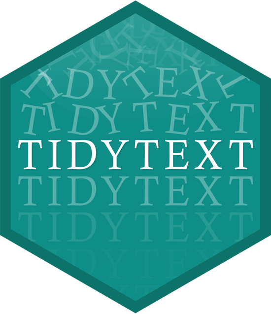

library(academictwitteR)
library(tidyverse)
ccss_tweets_2021 <-
get_all_tweets('(#commoncore OR "common core") -is:retweet lang:en',
"2021-01-01T00:00:00Z",
"2021-05-31T00:00:00Z",
bearer_token,
data_path = "ccss-data/",
bind_tweets = FALSE)
ccss_tweets <- bind_tweet_jsons(data_path = "ccss-data/") |>
select(text,
created_at,
author_id,
id,
conversation_id,
source,
possibly_sensitive,
in_reply_to_user_id)
write_csv(ccss_tweets, "data/ccss-tweets.csv")Unit 3 Case Study: Public Sentiment and the State Standards
ECI 586 Introduction to Learning Analytics
1. PREPARE
Data sources such as digital learning environments and administrative data systems, as well as data produced by social media websites and the mass digitization of academic and practitioner publications, hold enormous potential to address a range of pressing problems in education, but collecting and analyzing text-based data also presents unique challenges. This week, our case study is guided by my colleague Josh Rosenberg’s study, Advancing new methods for understanding public sentiment about educational reforms: The case of Twitter and the Next Generation Science Standards.
We will focus on conducting a very simplistic “replication study” by comparing the sentiment of tweets about the Next Generation Science Standards (NGSS) and Common Core State Standards (CCSS) in order to better understand public reaction to these two curriculum reform efforts. Specifically, our Unit 3 case study will cover the following topics:
- Prepare: We’ll take a quick look at Dr. Rosenberg’s study and load packages we’ll need for analysis.
- Wrangle: We focus on basic text mining processes such as text tokenization and stop word removal. Specifically, we will learn how to “tidy text” so we can perform some basic analyses such as retrieving word counts and term frequencies.
- Explore: In order to see what insight our data provides into answering our research questions, we will calculate some simple summary statistics from our tidied text and use data visualization to highlight some of these insights.
- Model: We learn a little about sentiment lexicons and introduce the {vader} package to model the sentiment of tweets about the NGSS and CCSS state standards in order to better understand public reaction to these two curriculum reform efforts.
- Communicate: To wrap up our case study, we’ll write a brief summary of our findings and a short reflection on what we learned.
1a. Review the Literature
The Unit 3 Case Study: Public Sentiment and the State Standards is guided by a recent publication by (Rosenberg et al., 2021) Understanding Public Sentiment About Educational Reforms: The Next Generation Science Standards on Twitter. This study in turn builds on upon previous work by Wang & Fikis (2017) examining public opinion on the Common Core State Standards (CCSS) on Twitter. For Module 1, we will focus on analyzing tweets about the Next Generation Science Standards (NGSS) and Common Core State Standards (CCSS) in order to better understand key words and phrases that emerge, as well as public sentiment towards these two curriculum reform efforts.
Abstract
System-wide educational reforms are difficult to implement in the United States, but despite the difficulties, reforms can be successful, particularly when they are associated with broad public support. This study reports on the nature of the public sentiment expressed about a nationwide science education reform effort, the Next Generation Science Standards (NGSS). Through the use of data science techniques to measure the sentiment of posts on Twitter about the NGSS (N = 565,283), we found that public sentiment about the NGSS is positive, with only 11 negative posts for every 100 positive posts. In contrast to findings from past research and public opinion polling on the Common Core State Standards, sentiment about the NGSS has become more positive over time—and was especially positive for teachers. We discuss what this positive sentiment may indicate about the success of the NGSS in light of opposition to the Common Core State Standards.
Data Sources
Similar to data we’ll be using for this case study, Rosenberg et al. used publicly accessible data from Twitter collected using the Full-Archive Twitter API and the {rtweet} package in R. Specifically, the authors accessed tweets and user information from the hashtag-based #NGSSchat online community, all tweets that included any of the following phrases, with “/” indicating an additional phrase featuring the respective plural form: “ngss”, “next generation science standard/s”, “next gen science standard/s”.
Data used in this case study was pulled using an Academic Research developer account and the {academictwitter} package, which uses the Twitter API v2 endpoints and allows researchers to access the full twitter archive, unlike the standard developer account. Data includes all tweets from January through May of 2020 and included the following terms: #ccss, common core, #ngsschat, ngss.
Below is an example of the code used to retrieve data for this lab. This code is set not to execute and will NOT run without your developer credentials installed, but it does illustrate the search query used, variables selected, and time frame. For those that created a standard developer account, we will learn later in this section how to retrieve data from Twitter using the {rtweet} package.
Analysis
The authors determined Tweet sentiment using the Java version of SentiStrength to assign tweets to two 5-point scales of sentiment, one for positivity and one for negativity, because SentiStrength is a validated measure for sentiment in short informal texts (Thelwall et al., 2011). In addition, they used this tool because Wang and Fikis (2019) used it to explore the sentiment of CCSS-related posts.
We’ll be using the AFINN sentiment lexicon which also assigns words in a tweet to two 5-point scales, in addition to exploring some other sentiment lexicons to see if they produce similar results. We will use a similar approach to label tweets as positive, negative, or neutral using the {Vader} package which greatly simplifies this process.
The authors also used the lme4 package in R to run a mixed effects model to determine if sentiment changes over time and differs between teachers and non-teachers. We won’t try to replicate in this study, but we will take a look at some of their findings from this model in below.
Summary of Key Findings
- Contrasting with sentiment about CSSS, sentiment about the NGSS science education reform effort is overwhelmingly positive, with approximately 9 positive tweets for every negative tweet.
- Teachers were more positive than non-teachers, and sentiment became substantially more positive over the ten years of NGSS-related posts.
- Differences between the context of the tweets were small, but those that did not include the #NGSSchat hashtag became more positive over time than those posts that did not include the hashtag.
- Individuals posted more tweets during #NGSSchat chats, the sentiment of their posts was more positive, suggesting that while the context of individual tweets has a small effect (with posts not including the hashtag becoming more positive over time), the effect upon individuals of being involved in the #NGSSchat was positive.
Finally, you can watch Dr. Rosenberg provide a quick 3-minute overview of this work at https://stanford.app.box.com/s/i5ixkj2b8dyy8q5j9o5ww4nafznb497x
1b. Define Questions
One overarching question that Silge and Robinson (2018) identify as a central question to text mining and natural language processing, and that we’ll explore later in this case study, is the question:
How do we to quantify what a document or collection of documents is about?
The questions guiding the Rosenberg et al. study attempt to quantify public sentiment around the NGSS and how that sentiment changes over time. Specifically, they asked:
- What is the public sentiment expressed toward the NGSS?
- How does sentiment for teachers differ from non-teachers?
- How do tweets posted to #NGSSchat differ from those without the hashtag?
- How does participation in #NGSSchat relate to the public sentiment individuals express?
- How does public sentiment vary over time?
For our text mining case study, we’ll use approaches similar to those used by the authors cited above to better understand public discourse surrounding these standards, particularly as they relate to STEM education. We will also try to guage public sentiment around the NGSS, by comparing how much more positive or negative NGSS tweets are relative to CSSS tweets. Specifically, in this case study we’ll attempt to answer the following questions:
- What are the most frequent words or phrases used in reference to tweets about the CCSS and NGSS?
- How does sentiment for NGSS compare to sentiment for CCSS?
1c. Load Libraries
tidytext 📦

As we’ll learn first hand in this module, using tidy data principles can also make many text mining tasks easier, more effective, and consistent with tools already in wide use. The {tidytext} package helps to convert text into data frames of individual words, making it easy to to manipulate, summarize, and visualize text using using familiar functions form the {tidyverse} collection of packages.
Let’s go ahead and load the {tidytext} package:
library(tidytext)For a more comprehensive introduction to the tidytext package, I cannot recommend enough the free and excellent online book, Text Mining with R: A Tidy Approach (Silge & Robinson, 2017). If you’re interested in pursuing text analysis using R after this course, this will be a go to reference.
The vader Package 📦

The {vader} package is for the Valence Aware Dictionary for sEntiment Reasoning (VADER), a rule-based model for general sentiment analysis of social media text and specifically attuned to measuring sentiment in microblog-like contexts.
To learn more about the {vader} package and its development, take a look at the article by Hutto and Gilbert (2014), VADER: A Parsimonious Rule-based Model forSentiment Analysis of Social Media Text.
Let’s go ahead and load the VADER library:
library(vader)Note: The {vader} package can take quite some time to run on a large datasets like the one we’ll be working with, so in our Model section we will examine just a small(ish) subset of tweets.
Other Packages
Finally, there are a couple other packages we’ll need to get started. The first should look familiar while second {wordcloud2} package is handy little package for creating interactive word clouds.
library(tidyverse)── Attaching core tidyverse packages ──────────────────────── tidyverse 2.0.0 ──
✔ dplyr 1.1.3 ✔ readr 2.1.4
✔ forcats 1.0.0 ✔ stringr 1.5.0
✔ ggplot2 3.4.4 ✔ tibble 3.2.1
✔ lubridate 1.9.3 ✔ tidyr 1.3.0
✔ purrr 1.0.2
── Conflicts ────────────────────────────────────────── tidyverse_conflicts() ──
✖ dplyr::filter() masks stats::filter()
✖ dplyr::lag() masks stats::lag()
ℹ Use the conflicted package (<http://conflicted.r-lib.org/>) to force all conflicts to become errorslibrary(wordcloud2)2. WRANGLE
The importance of data wrangling, particularly when working with text, is difficult to overstate. Just as a refresher, wrangling involves the initial steps of going from raw data to a dataset that can be explored and modeled (Krumm et al., 2018). This case study will place a heavy emphasis on preparing text for analysis and in particular we’ll learn how to:
- Import Tweets. First we revisit the familiar
read_csv()function for reading in our CCSS and NGSS tweets into R. For those of you who created a Twitter Developer Account, we’ll also demonstrate the use of the {rtweet} package for downloading data directly from Twitter. - Restructure Data. We focus on removing extraneous data using the
select()andfilter()functions from {dplyr}, and revisit functions from the Tidy Your Data Primer for merging data frames. - Tidy Text. Finally, we introduce the {tidytext} package to “tidy” and tokenize our tweets in order to create our data frame for analysis. We also introduce a new join function to remove “stop words” that don’t add much value to our analysis.
2a. Import Tweets from CSV
As noted above, data used in this case study was pulled using an Academic Research developer account and the {academictwitter} package, which uses the Twitter API v2 endpoints and allows researchers to access the full twitter archive, unlike the {rtweet} package, which limits the number of tweets and the length of time from which you can pull tweets.
Data for this case study includes all tweets from January through May of 2020 and includes the following terms: #ccss, common core, #ngsschat, ngss. Since we’ll be working with some computational intensive functions later in this case study that can take some time to run, I restricted the time frame for my search to only a handful of month. Even so, we’ll be working with over 30,000 tweets and nearly 1,000,000 words for our analysis!
Let’s use the by now familiar read_csv() function to import our ccss_tweets.csv file saved in our data folder:
ccss_tweets <- read_csv("data/ccss-tweets.csv",
col_types = cols(author_id = col_character(),
id = col_character(),
conversation_id = col_character(),
in_reply_to_user_id = col_character()
)
)
ccss_tweets# A tibble: 27,230 × 8
text created_at author_id id conversation_id source
<chr> <dttm> <chr> <chr> <chr> <chr>
1 "@catturd2 Hmmmm … 2021-01-02 00:49:28 16098543… 1345… 13451697062071… Twitt…
2 "@homebrew1500 I … 2021-01-02 00:40:05 12495948… 1345… 13451533915976… Twitt…
3 "@ClayTravis Dump… 2021-01-02 00:32:46 88770705… 1345… 13450258639942… Twitt…
4 "@KarenGunby @chi… 2021-01-02 00:24:01 12495948… 1345… 13451533915976… Twitt…
5 "@keith3048 I kno… 2021-01-02 00:23:42 12527475… 1345… 13451533915976… Twitt…
6 "Probably common … 2021-01-02 00:18:38 12760173… 1345… 13451625486818… Twitt…
7 "@LisaS4680 Stupi… 2021-01-02 00:16:11 92213292… 1345… 13451595466087… Twitt…
8 "@JerryGl29176259… 2021-01-02 00:10:29 12201608… 1345… 13447179758914… Twitt…
9 "@JBatNC304 @Cawt… 2021-01-02 00:09:15 88091448… 1345… 13447403608625… Twitt…
10 "@chiefaugur I th… 2021-01-01 23:54:38 12495948… 1345… 13451533915976… Twitt…
# ℹ 27,220 more rows
# ℹ 2 more variables: possibly_sensitive <lgl>, in_reply_to_user_id <chr>Note the addition of the col_types = argument for changing some of the column types to character strings because the numbers for those particular columns actually indicate identifiers for authors and tweets:
author_id= the author of the tweetid= the unique id for each tweetconverastion_id= the unique id for each conversation threadin_reply_to_user_id= the author of the tweet being replied to
Your Turn ⤵
Use the following code chunk to import the NGSS tweets located in the same data folder as our common core tweets. By default, R will treat numerical IDs in our dataset as numeric values but we will need to convert these to characters like demonstrated above for the purpose of analysis:
ngss_tweets <- read_csv("data/ngss-tweets.csv",
col_types = cols(author_id = col_character(),
id = col_character(),
conversation_id = col_character(),
in_reply_to_user_id = col_character()
)
)
ngss_tweets# A tibble: 8,125 × 8
text created_at author_id id conversation_id source
<chr> <dttm> <chr> <chr> <chr> <chr>
1 "Please help us R… 2021-01-06 00:50:49 32799077… 1346… 13466201998945… Twitt…
2 "What lab materia… 2021-01-06 00:45:32 10103246… 1346… 13466188701325… Hoots…
3 "I recently saw a… 2021-01-06 00:39:37 61829645 1346… 13466173820858… Twitt…
4 "I'm thrilled to … 2021-01-06 00:30:13 461653415 1346… 13466150172071… Twitt…
5 "PLS RT. Excited … 2021-01-06 00:15:05 22293234 1346… 13466112069671… Twitt…
6 "Inspired by Marg… 2021-01-06 00:00:00 33179602… 1346… 13466074140999… Tweet…
7 "PLTW Launch is d… 2021-01-05 23:45:06 17276863 1346… 13466036638386… Hoots…
8 "@NGSS_tweeps How… 2021-01-05 23:24:01 10230543… 1346… 13464677409499… Twitt…
9 "@NGSS_tweeps I d… 2021-01-05 23:21:56 10230543… 1346… 13464677409499… Twitt…
10 "January 31st is … 2021-01-05 23:10:03 23679615 1346… 13465948440435… Hoots…
# ℹ 8,115 more rows
# ℹ 2 more variables: possibly_sensitive <lgl>, in_reply_to_user_id <chr>Importing data and dealing with data types can be a bit tricky, especially for beginners. Recall from previous case studies that RStudio has an “Import Dataset” feature in the Environment Pane that can help you use the {readr} package and associated functions to greatly facilitate this process. If you get stuck, you can copy the code generated in the lower right hand corner of the Import Dataset window.

Now use the following code chunk to inspect the head() of each data frame and answer the questions that follow:
head(ngss_tweets)# A tibble: 6 × 8
text created_at author_id id conversation_id source
<chr> <dttm> <chr> <chr> <chr> <chr>
1 "Please help us RT… 2021-01-06 00:50:49 32799077… 1346… 13466201998945… Twitt…
2 "What lab material… 2021-01-06 00:45:32 10103246… 1346… 13466188701325… Hoots…
3 "I recently saw a … 2021-01-06 00:39:37 61829645 1346… 13466173820858… Twitt…
4 "I'm thrilled to b… 2021-01-06 00:30:13 461653415 1346… 13466150172071… Twitt…
5 "PLS RT. Excited 2… 2021-01-06 00:15:05 22293234 1346… 13466112069671… Twitt…
6 "Inspired by Marga… 2021-01-06 00:00:00 33179602… 1346… 13466074140999… Tweet…
# ℹ 2 more variables: possibly_sensitive <lgl>, in_reply_to_user_id <chr>head(ccss_tweets)# A tibble: 6 × 8
text created_at author_id id conversation_id source
<chr> <dttm> <chr> <chr> <chr> <chr>
1 "@catturd2 Hmmmm “… 2021-01-02 00:49:28 16098543… 1345… 13451697062071… Twitt…
2 "@homebrew1500 I a… 2021-01-02 00:40:05 12495948… 1345… 13451533915976… Twitt…
3 "@ClayTravis Dump … 2021-01-02 00:32:46 88770705… 1345… 13450258639942… Twitt…
4 "@KarenGunby @chie… 2021-01-02 00:24:01 12495948… 1345… 13451533915976… Twitt…
5 "@keith3048 I know… 2021-01-02 00:23:42 12527475… 1345… 13451533915976… Twitt…
6 "Probably common c… 2021-01-02 00:18:38 12760173… 1345… 13451625486818… Twitt…
# ℹ 2 more variables: possibly_sensitive <lgl>, in_reply_to_user_id <chr>Wow, so much for a family friendly case study! Based on this very limited sample, which set of standards do you think Twitter users are more negative about?
- CSSS
Let’s take a slightly larger sample of the CCSS tweets:
ccss_tweets |>
sample_n(20) |>
relocate(text)# A tibble: 20 × 8
text created_at author_id id conversation_id source
<chr> <dttm> <chr> <chr> <chr> <chr>
1 "Y’all weren’t do… 2021-02-03 12:55:35 395050140 1356… 13569494551913… Twitt…
2 "Ever wanted to s… 2021-02-22 17:11:44 13312469… 1363… 13638992847483… Twitt…
3 "@nicknamedSasha … 2021-04-01 04:17:51 12210924… 1377… 13773803075240… Twitt…
4 "@ChalkOutside @j… 2021-04-14 09:10:23 314288709 1382… 13819942320853… Twitt…
5 "Have #Common-Cor… 2021-02-04 21:45:42 40672085 1357… 13574452490529… Dynam…
6 "@arneduncan Sinc… 2021-02-16 18:09:34 27966854… 1361… 13617013105764… Twitt…
7 "@ClassCastPod We… 2021-05-19 19:25:18 22930809… 1395… 13949967292678… Twitt…
8 "@jilltucker The … 2021-01-08 07:38:47 97087693… 1347… 13473200311058… Twitt…
9 "Sheila Fact: Tra… 2021-04-15 16:01:12 10458332… 1382… 13827257045890… Twitt…
10 "@DebatingChris @… 2021-01-20 12:43:20 13283926… 1351… 13516700432564… Twitt…
11 "@behaviorizing @… 2021-04-26 02:28:01 18964092 1386… 13864875385718… Twitt…
12 "Common core. htt… 2021-04-03 15:32:13 11634525… 1378… 13783697576788… Twitt…
13 "Maithili shares … 2021-03-22 06:38:34 458007110 1373… 13738868034935… Twitt…
14 "@stillgray I nev… 2021-05-02 22:49:20 75731731… 1388… 13889657353685… Twitt…
15 "Math doesn't lie… 2021-01-01 13:37:36 12418846… 1345… 13450012300457… Twitt…
16 "Next, I wander i… 2021-03-24 18:51:59 610065715 1374… 13747860925960… Twitt…
17 "\"The Common Cor… 2021-04-13 22:07:01 170909585 1382… 13820929890115… Twitt…
18 "@biblicalfloods … 2021-01-23 17:10:53 95443143… 1353… 13528530949970… Twitt…
19 "@TpT_Official Ev… 2021-02-17 16:41:30 13312469… 1362… 13618053291939… Twitt…
20 "@AndrewKAG2020 @… 2021-01-02 21:18:31 11138302… 1345… 13451861231323… Twitt…
# ℹ 2 more variables: possibly_sensitive <lgl>, in_reply_to_user_id <chr>Your Turn ⤵
Use the code chunk below to take a sample of the NGSS tweets. Try to do it without looking at the code above first:
ngss_tweets |>
sample_n(20) |>
relocate(text)# A tibble: 20 × 8
text created_at author_id id conversation_id source
<chr> <dttm> <chr> <chr> <chr> <chr>
1 "This is a great … 2021-02-26 14:25:48 824404538 1365… 13653070781354… Tweet…
2 "Thank you to all… 2021-04-28 17:11:00 239932187 1387… 13874543115510… Twitt…
3 "Excited to pilot… 2021-05-01 18:07:56 24298665 1388… 13885558052223… Tweet…
4 "For teachers, st… 2021-05-15 00:00:43 25920738… 1393… 13933556273139… Hoots…
5 "A2: I believe t… 2021-01-08 02:31:10 189256699 1347… 13473702302475… Twitt…
6 "ending NGSS like… 2021-04-08 19:00:58 12755124… 1380… 13802342277451… Twitt…
7 "While I was gett… 2021-01-08 14:54:23 25004299 1347… 13475572685905… Twitt…
8 "@NGSS_tweeps Not… 2021-05-03 13:10:18 31030321 1389… 13891918585600… Twitt…
9 "@ngss_official I… 2021-01-11 02:35:05 85864477… 1348… 13483198271280… Twitt…
10 "Agreed! - on a s… 2021-05-07 01:17:44 89859520 1390… 13904759071949… Tweet…
11 "NEW: Product Des… 2021-04-26 17:16:24 63473129 1386… 13867308952484… Tweet…
12 "That biography m… 2021-02-04 13:39:52 49185075… 1357… 13573218520588… Tweet…
13 "Only with qualit… 2021-05-12 16:52:00 24963392… 1392… 13925229604900… Twitt…
14 "We went on our f… 2021-04-21 20:59:36 78925009… 1384… 13849751289545… Twitt…
15 "@JasonKirchmer H… 2021-02-05 03:46:32 13466505… 1357… 13536850486088… Twitt…
16 "@digitaltidepool… 2021-01-13 01:58:48 459750740 1349… 13193660870796… Twitt…
17 "A4: Trying this … 2021-05-21 01:31:41 41819846 1395… 13955528489816… Tweet…
18 "We're excited to… 2021-04-19 18:50:03 60984053 1384… 13842177502145… Hoots…
19 "@SpaceyProfessor… 2021-01-30 03:51:13 96903166… 1355… 13549732742796… Twitt…
20 "Welcome to #NGSS… 2021-01-22 02:01:10 14493822… 1352… 13524361119734… Tweet…
# ℹ 2 more variables: possibly_sensitive <lgl>, in_reply_to_user_id <chr>Still of the same opinion?
What else you notice about our data sets? Record a few observations that you think are relevant to our analysis or might be useful for future analyses.
What questions do you have about these data sets? What are you still curious about?
2c. Restructure Data
Subset Tweets
As you may have noticed, we have more data than we need for our analysis and should probably pare it down to just what we’ll use.
Let’s start with the CCSS tweets first. And since this is a family friendly case study, let’s use the filter() function introduced in previous labs to filter out rows containing “possibly sensitive” language:
ccss_tweets_1 <- ccss_tweets |>
filter(possibly_sensitive == "FALSE")Now let’s use the select() function to select the following columns from our new ss_tweets_clean data frame:
textcontaining the tweet which is our primary data source of interestauthor_idof the user who created the tweetcreated_attimestamp for examining changes in sentiment over timeconversation_idfor examining sentiment by conversationsidfor the unique reference id for each tweet and useful for counts
ccss_tweets_2 <- ccss_tweets_1 |>
select(text,
author_id,
created_at,
conversation_id,
id)Your Turn ⤵
Note: The select() function will also reorder your columns based on the order in which you list them.
Use the code chunk below to reorder the columns to your liking and assign to ccss_tweets_3:
ccss_tweets_3 <- ccss_tweets_1 |>
select(id,
text,
author_id,
created_at,
conversation_id)Add & Relocate Columns
Finally, since we are interested in comparing the sentiment of NGSS tweets with CSSS tweets, it would be helpful if we had a column to quickly identify the set of state standards with which each tweet is associated.
We’ll use the mutate() function to create a new variable called standards to label each tweets as “ngss”:
ccss_tweets_4 <- mutate(ccss_tweets_2, standards = "ccss")
colnames(ccss_tweets_4)[1] "text" "author_id" "created_at" "conversation_id"
[5] "id" "standards" And just because it bothers me, I’m going to use the relocate() function to move the standards column to the first position so I can quickly see which standards the tweet is from:
ccss_tweets_5 <- relocate(ccss_tweets_4, standards)
colnames(ccss_tweets_5)[1] "standards" "text" "author_id" "created_at"
[5] "conversation_id" "id" Again, we could also have used the select() function to reorder columns like so:
ccss_tweets_5 <- ccss_tweets_4 |>
select(standards,
text,
author_id,
created_at,
conversation_id,
id)
colnames(ccss_tweets_5)[1] "standards" "text" "author_id" "created_at"
[5] "conversation_id" "id" Before moving on to the CCSS standards, let’s use the |> pipe operator and rewrite the code from our wrangling so there is less redundancy and it is easier to read:
# Search Tweets
ccss_tweets_clean <- ccss_tweets |>
filter(possibly_sensitive == "FALSE") |>
select(text, author_id, created_at, conversation_id, id) |>
mutate(standards = "ccss") |>
relocate(standards)
head(ccss_tweets_clean)# A tibble: 6 × 6
standards text author_id created_at conversation_id id
<chr> <chr> <chr> <dttm> <chr> <chr>
1 ccss "@catturd2 Hmmm… 16098543… 2021-01-02 00:49:28 13451697062071… 1345…
2 ccss "@homebrew1500 … 12495948… 2021-01-02 00:40:05 13451533915976… 1345…
3 ccss "@ClayTravis Du… 88770705… 2021-01-02 00:32:46 13450258639942… 1345…
4 ccss "@KarenGunby @c… 12495948… 2021-01-02 00:24:01 13451533915976… 1345…
5 ccss "@keith3048 I k… 12527475… 2021-01-02 00:23:42 13451533915976… 1345…
6 ccss "Probably commo… 12760173… 2021-01-02 00:18:38 13451625486818… 1345…Your Turn ⤵
Recall from section 1b. Define Questions that we are interested in comparing word usage and public sentiment around both the Common Core and Next Gen Science Standards.
Create an new ngss_tweets_clean data frame consisting of the Next Generation Science Standards tweets we imported by using the code above as a guide.
ngss_tweets_clean <- ngss_tweets |>
filter(possibly_sensitive == "FALSE") |>
select(text, author_id, created_at, conversation_id, id) |>
mutate(standards = "ngss") |>
relocate(standards)
head(ngss_tweets_clean)# A tibble: 6 × 6
standards text author_id created_at conversation_id id
<chr> <chr> <chr> <dttm> <chr> <chr>
1 ngss "Please help us… 32799077… 2021-01-06 00:50:49 13466201998945… 1346…
2 ngss "What lab mater… 10103246… 2021-01-06 00:45:32 13466188701325… 1346…
3 ngss "I recently saw… 61829645 2021-01-06 00:39:37 13466173820858… 1346…
4 ngss "I'm thrilled t… 461653415 2021-01-06 00:30:13 13466150172071… 1346…
5 ngss "PLS RT. Excite… 22293234 2021-01-06 00:15:05 13466112069671… 1346…
6 ngss "Inspired by Ma… 33179602… 2021-01-06 00:00:00 13466074140999… 1346…Merge Data Frames
Finally, let’s combine our CCSS and NGSS tweets into a single data frame by using the union() function from dplyr and simply supplying the data frames that you want to combine as arguments:
ss_tweets <- union(ccss_tweets_clean,
ngss_tweets_clean)
ss_tweets# A tibble: 35,233 × 6
standards text author_id created_at conversation_id id
<chr> <chr> <chr> <dttm> <chr> <chr>
1 ccss "@catturd2 Hmm… 16098543… 2021-01-02 00:49:28 13451697062071… 1345…
2 ccss "@homebrew1500… 12495948… 2021-01-02 00:40:05 13451533915976… 1345…
3 ccss "@ClayTravis D… 88770705… 2021-01-02 00:32:46 13450258639942… 1345…
4 ccss "@KarenGunby @… 12495948… 2021-01-02 00:24:01 13451533915976… 1345…
5 ccss "@keith3048 I … 12527475… 2021-01-02 00:23:42 13451533915976… 1345…
6 ccss "Probably comm… 12760173… 2021-01-02 00:18:38 13451625486818… 1345…
7 ccss "@LisaS4680 St… 92213292… 2021-01-02 00:16:11 13451595466087… 1345…
8 ccss "@JerryGl29176… 12201608… 2021-01-02 00:10:29 13447179758914… 1345…
9 ccss "@JBatNC304 @C… 88091448… 2021-01-02 00:09:15 13447403608625… 1345…
10 ccss "@chiefaugur I… 12495948… 2021-01-01 23:54:38 13451533915976… 1345…
# ℹ 35,223 more rowsNote that when creating a “union” like this (i.e. stacking one data frame on top of another), you should have the same number of columns in each data frame and they should be in the exact same order.
Alternatively, we could have used the bind_rows() function from {dplyr} as well:
ss_tweets <- bind_rows(ccss_tweets_clean,
ngss_tweets_clean)
ss_tweets# A tibble: 35,233 × 6
standards text author_id created_at conversation_id id
<chr> <chr> <chr> <dttm> <chr> <chr>
1 ccss "@catturd2 Hmm… 16098543… 2021-01-02 00:49:28 13451697062071… 1345…
2 ccss "@homebrew1500… 12495948… 2021-01-02 00:40:05 13451533915976… 1345…
3 ccss "@ClayTravis D… 88770705… 2021-01-02 00:32:46 13450258639942… 1345…
4 ccss "@KarenGunby @… 12495948… 2021-01-02 00:24:01 13451533915976… 1345…
5 ccss "@keith3048 I … 12527475… 2021-01-02 00:23:42 13451533915976… 1345…
6 ccss "Probably comm… 12760173… 2021-01-02 00:18:38 13451625486818… 1345…
7 ccss "@LisaS4680 St… 92213292… 2021-01-02 00:16:11 13451595466087… 1345…
8 ccss "@JerryGl29176… 12201608… 2021-01-02 00:10:29 13447179758914… 1345…
9 ccss "@JBatNC304 @C… 88091448… 2021-01-02 00:09:15 13447403608625… 1345…
10 ccss "@chiefaugur I… 12495948… 2021-01-01 23:54:38 13451533915976… 1345…
# ℹ 35,223 more rowsThe distinction between these two functions is that union by default removes any duplicate rows that might have shown up in our queries.
However, since both functions returned the same number of rows, it’s clear we do not have any duplicates. If we wanted to verify, {dplyr} also has an intersect function to merge the two data frames, but only where they intersect(), or where they have duplicate rows.
ss_tweets_duplicate <- intersect(ccss_tweets_clean,
ngss_tweets_clean)
ss_tweets_duplicate# A tibble: 0 × 6
# ℹ 6 variables: standards <chr>, text <chr>, author_id <chr>,
# created_at <dttm>, conversation_id <chr>, id <chr>Your Turn ⤵
Finally, let’s take a quick look at both the head() and the tail() of this new ss_tweets data frame to make sure it contains both “ngss” and “ccss” standards:
head(ss_tweets)# A tibble: 6 × 6
standards text author_id created_at conversation_id id
<chr> <chr> <chr> <dttm> <chr> <chr>
1 ccss "@catturd2 Hmmm… 16098543… 2021-01-02 00:49:28 13451697062071… 1345…
2 ccss "@homebrew1500 … 12495948… 2021-01-02 00:40:05 13451533915976… 1345…
3 ccss "@ClayTravis Du… 88770705… 2021-01-02 00:32:46 13450258639942… 1345…
4 ccss "@KarenGunby @c… 12495948… 2021-01-02 00:24:01 13451533915976… 1345…
5 ccss "@keith3048 I k… 12527475… 2021-01-02 00:23:42 13451533915976… 1345…
6 ccss "Probably commo… 12760173… 2021-01-02 00:18:38 13451625486818… 1345…tail(ss_tweets)# A tibble: 6 × 6
standards text author_id created_at conversation_id id
<chr> <chr> <chr> <dttm> <chr> <chr>
1 ngss @BK3DSci Brian,… 558971700 2021-05-21 01:10:28 13955471161272… 1395…
2 ngss A1 My students… 14493822… 2021-05-21 01:10:20 13955474728990… 1395…
3 ngss A1: It is an im… 136014942 2021-05-21 01:09:58 13955473807585… 1395…
4 ngss @MsB_Reilly Mod… 31647215… 2021-05-21 01:09:54 13955471085775… 1395…
5 ngss A1.5 I also lov… 14449947 2021-05-21 01:09:46 13955473306029… 1395…
6 ngss @MsB_Reilly Whe… 558971700 2021-05-21 01:09:44 13955471085775… 1395…2d. Tidy Text
Text data by it’s very nature is ESPECIALLY untidy and is sometimes referred to as “unstructured” data. In this section we learn some very useful functions from the {tidytext} package to convert text to and from tidy formats. Having our text in a tidy format will allow us to switch seamlessly between tidy tools and existing text mining packages, while also making it easier to visualize text summaries in other data analysis tools like Tableau.
Tokenize Text
In Chapter 1 of Text Mining with R, Silge & Robinson (2017) define the tidy text format as a table with one-token-per-row, and explain that:
A token is a meaningful unit of text, such as a word, two-word phrase (bigram), or sentence that we are interested in using for analysis. And tokenization is the process of splitting text into tokens.
This one-token-per-row structure is in contrast to the ways text is often stored for text analysis, perhaps as strings in a corpus object or in a document-term matrix. For tidy text mining, the token that is stored in each row is most often a single word, but can also be an n-gram, sentence, or paragraph.
For this part of our workflow, our goal is to transform our ss_tweets data from this:
head(relocate(ss_tweets, text))# A tibble: 6 × 6
text standards author_id created_at conversation_id id
<chr> <chr> <chr> <dttm> <chr> <chr>
1 "@catturd2 Hmmm… ccss 16098543… 2021-01-02 00:49:28 13451697062071… 1345…
2 "@homebrew1500 … ccss 12495948… 2021-01-02 00:40:05 13451533915976… 1345…
3 "@ClayTravis Du… ccss 88770705… 2021-01-02 00:32:46 13450258639942… 1345…
4 "@KarenGunby @c… ccss 12495948… 2021-01-02 00:24:01 13451533915976… 1345…
5 "@keith3048 I k… ccss 12527475… 2021-01-02 00:23:42 13451533915976… 1345…
6 "Probably commo… ccss 12760173… 2021-01-02 00:18:38 13451625486818… 1345…Into a “tidy text” one-token-per-row format that looks like this:
tidy_tweets <- ss_tweets |>
unnest_tokens(output = word,
input = text) |>
relocate(word)
head(tidy_tweets)# A tibble: 6 × 6
word standards author_id created_at conversation_id id
<chr> <chr> <chr> <dttm> <chr> <chr>
1 catturd2 ccss 1609854356 2021-01-02 00:49:28 1345169706207109120 1345170…
2 hmmmm ccss 1609854356 2021-01-02 00:49:28 1345169706207109120 1345170…
3 common ccss 1609854356 2021-01-02 00:49:28 1345169706207109120 1345170…
4 core ccss 1609854356 2021-01-02 00:49:28 1345169706207109120 1345170…
5 math ccss 1609854356 2021-01-02 00:49:28 1345169706207109120 1345170…
6 now ccss 1609854356 2021-01-02 00:49:28 1345169706207109120 1345170…If you take ECI 588: Text Mining in Education, you’ll learn about other data structures for text analysis like the document-term matrix and corpus objects. For now, however, working with the familiar tidy data frame allows us to take advantage of popular packages that use the shared tidyverse syntax and principles for wrangling, exploring, and modeling data.
As demonstrated above, the tidytext package provides the incredibly powerful unnest_tokens() function to tokenize text (including tweets!) and convert them to a one-token-per-row format.
Let’s tokenize our tweets by using this function to split each tweet into a single row to make it easier to analyze and take a look:
ss_tokens <- unnest_tokens(ss_tweets,
output = word,
input = text)
head(relocate(ss_tokens, word))# A tibble: 6 × 6
word standards author_id created_at conversation_id id
<chr> <chr> <chr> <dttm> <chr> <chr>
1 catturd2 ccss 1609854356 2021-01-02 00:49:28 1345169706207109120 1345170…
2 hmmmm ccss 1609854356 2021-01-02 00:49:28 1345169706207109120 1345170…
3 common ccss 1609854356 2021-01-02 00:49:28 1345169706207109120 1345170…
4 core ccss 1609854356 2021-01-02 00:49:28 1345169706207109120 1345170…
5 math ccss 1609854356 2021-01-02 00:49:28 1345169706207109120 1345170…
6 now ccss 1609854356 2021-01-02 00:49:28 1345169706207109120 1345170…There is A LOT to unpack with this function:
- First notice that
unnest_tokens()expects a data frame as the first argument, followed by two column names. - The next argument is an output column name that doesn’t currently exist but will be created as the text is “unnested” into it,
wordin this case). - This is followed by the input column that the text comes from, which we uncreatively named
text. - By default, a token is an individual word or unigram.
- Other columns, such as
author_idandcreated_at, are retained. - All punctuation has been removed.
- Tokens have been changed to lowercase, which makes them easier to compare or combine with other datasets (use the
to_lower = FALSEargument to turn off if desired).
Note: Since {tidytext} follows tidy data principles, we also could have used the |> operator to pass our data frame to the unnest_tokens() function like so:
ss_tokens <- ss_tweets |>
unnest_tokens(output = word,
input = text)
ss_tokens# A tibble: 911,173 × 6
standards author_id created_at conversation_id id word
<chr> <chr> <dttm> <chr> <chr> <chr>
1 ccss 1609854356 2021-01-02 00:49:28 13451697062071… 1345… catt…
2 ccss 1609854356 2021-01-02 00:49:28 13451697062071… 1345… hmmmm
3 ccss 1609854356 2021-01-02 00:49:28 13451697062071… 1345… comm…
4 ccss 1609854356 2021-01-02 00:49:28 13451697062071… 1345… core
5 ccss 1609854356 2021-01-02 00:49:28 13451697062071… 1345… math
6 ccss 1609854356 2021-01-02 00:49:28 13451697062071… 1345… now
7 ccss 1609854356 2021-01-02 00:49:28 13451697062071… 1345… makes
8 ccss 1609854356 2021-01-02 00:49:28 13451697062071… 1345… sense
9 ccss 1249594897113513985 2021-01-02 00:40:05 13451533915976… 1345… home…
10 ccss 1249594897113513985 2021-01-02 00:40:05 13451533915976… 1345… i
# ℹ 911,163 more rowsYour Turn ⤵
The unnest_tokens() function also has a specialized “tweets” tokenizer in the tokens = argument that is very useful for dealing with Twitter text. It retains hashtags and mentions of usernames with the @ symbol as illustrated by our @catturd2 friend who featured prominently in our the first CCSS tweet.
Rewrite the code above (you can check answer below) to include the token argument set to “tweets”, assign to ss_tokens_1, and answer the questions that follow:
ss_tokens_1 <- unnest_tokens(ss_tweets,
output = word,
input = text)
head(ss_tokens_1)# A tibble: 6 × 6
standards author_id created_at conversation_id id word
<chr> <chr> <dttm> <chr> <chr> <chr>
1 ccss 1609854356 2021-01-02 00:49:28 1345169706207109120 1345170311… catt…
2 ccss 1609854356 2021-01-02 00:49:28 1345169706207109120 1345170311… hmmmm
3 ccss 1609854356 2021-01-02 00:49:28 1345169706207109120 1345170311… comm…
4 ccss 1609854356 2021-01-02 00:49:28 1345169706207109120 1345170311… core
5 ccss 1609854356 2021-01-02 00:49:28 1345169706207109120 1345170311… math
6 ccss 1609854356 2021-01-02 00:49:28 1345169706207109120 1345170311… now How many observations were in our original
ss_tweetsdata frame?How many observations are there now? Why the difference?
Before we move any further let’s take a quick look at the most common word in our two datasets. To do so, we’ll introduce the easy to use count() function from the {dplyr} package.
Like most functions we’ve introduced, the first argument count() expects is a data frame which we provided with the |> operator, followed but the column, in our case word, whose values we want to count:
ss_tokens_1 |>
count(word, sort = TRUE)# A tibble: 66,859 × 2
word n
<chr> <int>
1 common 27199
2 core 26992
3 the 25896
4 to 20549
5 and 15686
6 t.co 15389
7 https 15377
8 of 13130
9 a 12543
10 math 12208
# ℹ 66,849 more rowsWell, many of these tweets are clearly about the CCSS and math at least, but beyond that it’s a bit hard to tell because there are so many “stop words” like “the”, “to”, “and”, “in” that don’t carry much meaning by themselves.
Remove Stop Words
Often in text analysis, we will want to remove these stop words if they are not useful for an analysis. The stop_words dataset in the {tidytext} package contains stop words from three lexicons. We can use them all together, as we have here, or filter() to only use one set of stop words if that is more appropriate for a certain analysis.
Let’s take a closer the lexicons and stop words included in each:
View(stop_words)The anti_join Function
In order to remove these stop words, we will use a function called anti_join() that looks for matching values in a specific column from two datasets and returns rows from the original dataset that have no matches like so:

For a good overview of the different dplyr joins see here: https://medium.com/the-codehub/beginners-guide-to-using-joins-in-r-682fc9b1f119.
Now let’s remove stop words that don’t help us learn much about what people are saying about the state standards.
ss_tokens_2 <- anti_join(ss_tokens_1,
stop_words,
by = "word")
head(ss_tokens_2)# A tibble: 6 × 6
standards author_id created_at conversation_id id word
<chr> <chr> <dttm> <chr> <chr> <chr>
1 ccss 1609854356 2021-01-02 00:49:28 1345169706207109120 1345170311… catt…
2 ccss 1609854356 2021-01-02 00:49:28 1345169706207109120 1345170311… hmmmm
3 ccss 1609854356 2021-01-02 00:49:28 1345169706207109120 1345170311… comm…
4 ccss 1609854356 2021-01-02 00:49:28 1345169706207109120 1345170311… core
5 ccss 1609854356 2021-01-02 00:49:28 1345169706207109120 1345170311… math
6 ccss 1609854356 2021-01-02 00:49:28 1345169706207109120 1345170311… makesNotice that we’ve specified the by = argument to look for matching words in the word column for both data sets and remove any rows from the tweet_tokens dataset that match the stop_words dataset.
When we first tokenized our dataset I conveniently chose output = word as the column name because it matches the column name word in the stop_words dataset contained in the tidytext package. This makes our call to anti_join()simpler because anti_join() knows to look for the column named word in each dataset.
However the by = argument wasn’t really necessary since word is the only matching column name in both datasets and it would have matched those columns by default.
Your Turn ⤵
Use the code chunk below to take a quick count of the most common tokens in our ss_tweets_2 data frame to see if the results are a little more meaningful, then answer the questions that follow.
ss_tokens_2 |>
count(word, sort = TRUE)# A tibble: 66,166 × 2
word n
<chr> <int>
1 common 27199
2 core 26992
3 t.co 15389
4 https 15377
5 math 12208
6 ngss 4290
7 ngsschat 3284
8 amp 3084
9 science 2905
10 students 2577
# ℹ 66,156 more rowsYour Turn ⤵
How many unique tokens are in our data tidied text?
- 67,718
How many times does the word “math” occur in our set of tweets?
- 12,046
Custom Stop Words
Notice that the nonsense word “amp” is among our high frequency words as well as some. We can create our own custom stop word list to to weed out any additional words that don’t carry much meaning but skew our data by being so prominent.
Let’s create a custom stop word list by using the simple c() function to combine our words. We can the add a filter to keep rows where words in our word column do NOT ! match words %in% my_stopwords list:
my_stopwords <- c("amp", "=", "+")
ss_tokens_3 <-
ss_tokens_2 |>
filter(!word %in% my_stopwords)Let’s take a look at our top words again and see if that did the trick:
ss_tokens_3 |>
count(word, sort = TRUE)# A tibble: 66,165 × 2
word n
<chr> <int>
1 common 27199
2 core 26992
3 t.co 15389
4 https 15377
5 math 12208
6 ngss 4290
7 ngsschat 3284
8 science 2905
9 students 2577
10 education 2493
# ℹ 66,155 more rowsMuch better! Note that we could extend this stop word list indefinitely. Feel free to use the code chunk below to try adding more words to our stop list.
Before we move any further, let’s save our tidied tweets as a new data frame for Section 3 and also save it as a .csv file in our data folder:
ss_tidy_tweets <- ss_tokens_3
write_csv(ss_tokens_3, "data/ss_tidy_tweets.csv")3. EXPLORE
Calculating summary statistics, data visualization, and feature engineering (the process of creating new variables from a dataset) are a key part of exploratory data analysis. For our first lab, we’re going to keep things super simple and focus on:
Top Tokens. Since once of our goals is to compare tweets about the NGSS and CSSS standards, we’ll take a look at the to 50 words that appear in each.
Word Clouds. To help illustrate the relative frequency each of these top 50 words occurs, we’ll introduce the {wordclouds2} package for creating interactive word clouds that can be knitted with your HTML doc.
3a. Top Tokens
First, let’s take advantage of the the |> operator combine some of the functions we’ve used above with the top_n() function from the {dplyr} package. By default, this function is looking for a data frame as the first argument, and then the number of rows to return.
Let’s take a look at the top tokens among the CCSS tweets by filtering our standards by CCSS, counting the number of times each word occurs, and taking the look at the 50 most common words:
ccss_top_tokens <- ss_tidy_tweets |>
filter(standards == "ccss") |>
count(word, sort = TRUE) |>
top_n(50)Selecting by nccss_top_tokens# A tibble: 50 × 2
word n
<chr> <int>
1 common 27132
2 core 26924
3 math 12085
4 t.co 9161
5 https 9156
6 education 2104
7 standards 1856
8 school 1855
9 kids 1814
10 grade 1484
# ℹ 40 more rowsNot surprisingly, our search terms appear in the top 50 but the word “math” also features prominently among CCSS tweets!
Word Clouds
Word clouds are much maligned and sometimes referred to as the “pie charts of text analysis”, but they can be useful for communicating simple summaries of qualitative data for education practitioners and are intuitive for them to interpret. Also, for better or worse, these are now included as a default visualization for open-ended survey items in online Qualtrics reports and you can even add your own stop words.
The {wordclouds2} package is pretty dead simple tool for generating HTML based interactive word clouds. By default, when you pass a data frame to the wordcloud2() function, it will look for a word column and a column with frequencies or counts, i.e., our column n that we created with the count() function.
Let’s run the wordcloud2() function on our ccss_top_tokens data frame.
wordcloud2(ccss_top_tokens)As you can see, “math” is a pretty common topic when discussing the common core on twitter but words like “core” and “common” – which you can see better if you click the “show in a new window” button or run the code in you console – are not very helpful since those were in our search terms when pulling data from Twitter.
In fact, search terms like these we might want to exclude from a final data product we share with with education partners or in a publication and instead include these these in a title or caption.
ccss_top_tokens |>
filter(word != "common" & word != "core") |>
wordcloud2()Your Turn ⤵
In the code chunk below, filter, count and select the top 50 tokens to create a word cloud for the NGSS tweets. A gold star if you can can do it without using the assignment operator or looking at the code above!
ss_tidy_tweets |>
filter(standards == "ngss") |>
count(word, sort = TRUE) |>
top_n(50) |>
wordcloud2()Selecting by nAlso, take a look at the help file for wordclouds2 to see if there might be other ways you could improve the aesthetics of this visualization.
3b. Exploring Bigrams (Optional)
If you’d like to use the data we’ve been working with for extra credit, let’s take a quick look at text analysis using bigrams, or tokens consisting of two words.
So far in this lab, we specified tokens as individual words, but many interesting text analyses are based on the relationships between words, which words tend to follow others immediately, or words that tend to co-occur within the same documents.
We can also use the unnest_tokens() function to tokenize our tweets into consecutive sequences of words, called n-grams. By seeing how often word X is followed by word Y, we could then build a model of the relationships between them.
To specify our tokens as bigrams, We do add token = "ngrams" to the unnest_tokens() function and setting n to the number of words in each n-gram. Let’s set n to 2, so we can examine pairs of two consecutive words, often called “bigrams”:
ngss_bigrams <- ngss_tweets |>
unnest_tokens(bigram,
text,
token = "ngrams",
n = 2)Before we move any further let’s take a quick look at the most common bigrams in our NGSS tweets:
ngss_bigrams |>
count(bigram, sort = TRUE)# A tibble: 111,411 × 2
bigram n
<chr> <int>
1 https t.co 6240
2 ngsschat https 721
3 of the 630
4 in the 531
5 ngss https 455
6 the ngss 403
7 to the 318
8 for the 295
9 to be 272
10 on the 239
# ℹ 111,401 more rowsAs we saw above, a lot of the most common bigrams are pairs of common (uninteresting) words as well. Dealing with these is a little less straightforward and we’ll need to use the separate() function from the tidyr package, which splits a column into multiple based on a delimiter. This lets us separate it into two columns, “word1” and “word2”, at which point we can remove cases where either is a stop-word.
library(tidyr)
bigrams_separated <- ngss_bigrams |>
separate(bigram, c("word1", "word2"), sep = " ")
bigrams_filtered <- bigrams_separated |>
filter(!word1 %in% stop_words$word) |>
filter(!word2 %in% stop_words$word)
tidy_bigrams <- bigrams_filtered |>
unite(bigram, word1, word2, sep = " ")Let’s take a look at our bigram counts now:
tidy_bigrams |>
count(bigram, sort = TRUE)# A tibble: 45,507 × 2
bigram n
<chr> <int>
1 https t.co 6240
2 ngsschat https 721
3 ngss https 455
4 ngss ngsschat 236
5 ngss aligned 192
6 ngss standards 168
7 ngss science 154
8 science education 148
9 science standards 112
10 teachers https 106
# ℹ 45,497 more rowsBetter, but there are still many tokens not especially useful for analysis.
Let’s make a custom custom stop word dictionary for bigrams just like we did for our unigrams. A list is started for you below, but you likely want to expand our list off stop words:
my_words <- c("https", "t.co")Now let’s separate, filter, and unite again:
tidy_bigrams <- bigrams_separated |>
filter(!word1 %in% stop_words$word) |>
filter(!word2 %in% stop_words$word) |>
filter(!word1 %in% my_words) |>
filter(!word2 %in% my_words) |>
unite(bigram, word1, word2, sep = " ")Note that since my_words is just a vector of words and not a data frame like stop_words, we do not need to select the word column using the $ operator.
Let’s take another quick count of our bigrams:
tidy_bigrams |>
count(bigram, sort = TRUE)# A tibble: 37,539 × 2
bigram n
<chr> <int>
1 ngss ngsschat 236
2 ngss aligned 192
3 ngss standards 168
4 ngss science 154
5 science education 148
6 science standards 112
7 ngss_tweeps ngsschat 96
8 science ngss 94
9 bmsscienceteach ngss_tweeps 92
10 approved approach 89
# ℹ 37,529 more rowsYour Turn ⤵
Use the code chunk below to tidy and count our bigrams for the CCSS tweets:
# YOUR CDE HEREWhat additional insight, if any, did looking at bigrams bring to out analysis?
- YOUR RESPONSE HERE
4. MODEL
Now that we have our tweets nice and tidy, we’re almost ready to begin exploring public sentiment (at least for the past week due to Twitter API rate limits) around the CCSS and NGSS standards. For this part of our workflow we introduce two new functions from the tidytext and dplyr packages respectively:
How do you “measure” sentiment?
Sentiment analysis tries to evaluate words for their emotional association. In Text Mining with R: A Tidy Approach, Silge and Robinson point out that,
One way to analyze the sentiment of a text is to consider the text as a combination of its individual words and the sentiment content of the whole text as the sum of the sentiment content of the individual words.
This isn’t the only way to approach sentiment analysis, but it is an easier entry point into sentiment analysis and you’ll find that is it often-used in publications that utilize sentiment analysis.
The {tidytext} package provides access to several sentiment lexicons, sometimes referred to as dictionaries, based on unigrams, i.e., single words. These lexicons contain many English words and the words are assigned scores for positive/negative sentiment, and also possibly emotions like joy, anger, sadness, and so forth.
The three general-purpose lexicons we’ll focus on are:
AFINNassigns words with a score that runs between -5 and 5, with negative scores indicating negative sentiment and positive scores indicating positive sentiment.bingcategorizes words in a binary fashion into positive and negative categories.nrccategorizes words in a binary fashion (“yes”/“no”) into categories of positive, negative, anger, anticipation, disgust, fear, joy, sadness, surprise, and trust.
Note that if this is your first time using the AFINN and NRC lexicons, you may prompted to download both Respond yes to the prompt by entering “1” and the NRC and AFINN lexicons will download. You’ll only have to do this the first time you use the NRC lexicon.
Let’s take a quick look at each of these lexicons using the get_sentiments() function and assign them to their respective names for later use:
afinn <- get_sentiments("afinn")
afinn# A tibble: 2,477 × 2
word value
<chr> <dbl>
1 abandon -2
2 abandoned -2
3 abandons -2
4 abducted -2
5 abduction -2
6 abductions -2
7 abhor -3
8 abhorred -3
9 abhorrent -3
10 abhors -3
# ℹ 2,467 more rowsbing <- get_sentiments("bing")
bing# A tibble: 6,786 × 2
word sentiment
<chr> <chr>
1 2-faces negative
2 abnormal negative
3 abolish negative
4 abominable negative
5 abominably negative
6 abominate negative
7 abomination negative
8 abort negative
9 aborted negative
10 aborts negative
# ℹ 6,776 more rowsnrc <- get_sentiments("nrc")
nrc# A tibble: 13,872 × 2
word sentiment
<chr> <chr>
1 abacus trust
2 abandon fear
3 abandon negative
4 abandon sadness
5 abandoned anger
6 abandoned fear
7 abandoned negative
8 abandoned sadness
9 abandonment anger
10 abandonment fear
# ℹ 13,862 more rowsAnd just out of curiosity, let’s take a look at the loughran lexicon as well:
loughran <- get_sentiments("loughran")
loughran# A tibble: 4,150 × 2
word sentiment
<chr> <chr>
1 abandon negative
2 abandoned negative
3 abandoning negative
4 abandonment negative
5 abandonments negative
6 abandons negative
7 abdicated negative
8 abdicates negative
9 abdicating negative
10 abdication negative
# ℹ 4,140 more rows✅ Comprehension Check
How were these sentiment lexicons put together and validated? Hint: take a look at Chapter 2 from Text Mining with R.
Why should we be cautious when using and interpreting them?
Come to the Dark Side

As noted in the PERPARE section, the {vader} package is for the Valence Aware Dictionary for sEntiment Reasoning (VADER), a rule-based model for general sentiment analysis of social media text and specifically attuned to measuring sentiment in microblog-like contexts such as Twitter.
The VADER assigns a number of different sentiment measures based on the context of the entire social-media post or in our case a tweet. Ultimately, however, these measures are based on a sentiment lexicon similar to those you just saw above. One benefit of using VADER rather than the approaches described by Silge and Robinson is that we use it with our tweets in their original format and skip the text preprocessing steps demonstrated above.
One drawback to VADER is that it can take a little while to run since it’s computationally intensive. Instead of analyzing tens of thousands of tweets, let’s read in our original ccss-tweets.csv and take instead just a sample of 500 “untidu” CCSS tweets using the sample_n() function:
ccss_sample <- read_csv("data/ccss-tweets.csv") |>
sample_n(500)Rows: 27230 Columns: 8
── Column specification ────────────────────────────────────────────────────────
Delimiter: ","
chr (2): text, source
dbl (4): author_id, id, conversation_id, in_reply_to_user_id
lgl (1): possibly_sensitive
dttm (1): created_at
ℹ Use `spec()` to retrieve the full column specification for this data.
ℹ Specify the column types or set `show_col_types = FALSE` to quiet this message.ccss_sample# A tibble: 500 × 8
text created_at author_id id conversation_id source
<chr> <dttm> <dbl> <dbl> <dbl> <chr>
1 "@cottonarchist… 2021-01-25 13:04:54 5.53e 7 1.35e18 1.35e18 Twitt…
2 "Racism really … 2021-05-29 22:55:29 3.80e 9 1.40e18 1.40e18 Twitt…
3 "@creation247 ^… 2021-04-12 15:35:37 8.31e17 1.38e18 1.38e18 Twitt…
4 "@Rickersam3 Co… 2021-05-19 01:09:36 4.34e 8 1.39e18 1.39e18 Twitt…
5 "@weatherchanne… 2021-03-11 22:21:58 5.80e 7 1.37e18 1.37e18 Twitt…
6 "@stockmom93 @H… 2021-03-22 20:39:23 3.32e 9 1.37e18 1.37e18 Twitt…
7 "@SharylAttkiss… 2021-04-03 01:26:20 2.16e 7 1.38e18 1.38e18 Twitt…
8 "@snobishdesign… 2021-01-02 06:36:31 1.28e18 1.35e18 1.35e18 Twitt…
9 "Imagine Africa… 2021-01-06 19:37:36 8.86e 8 1.35e18 1.35e18 Twitt…
10 "@terag1e @TheR… 2021-01-03 15:27:05 6.28e 8 1.35e18 1.35e18 Twitt…
# ℹ 490 more rows
# ℹ 2 more variables: possibly_sensitive <lgl>, in_reply_to_user_id <dbl>Note above that we passed our read_csv() output directly to our sample() function rather than saving a new data frame object, passing that to sample_n(), and saving as another data frame object. The power of the |> pipe!
On to the Dark Side. The {vader} package basically has just one function, vader_df() that does one thing and expects just one column from one frame. He’s very single minded! Let’s give VADER our ccss_sample data frame and include the $ operator to include only the text column containing our tweets.
vader_ccss <- vader_df(ccss_sample$text)
vader_ccss text
1 @cottonarchist but are you wrong tho \n\nfucking common core
2 Racism really prevented them from having a quality secondary education. Hell, Common Core standards didn’t even come about until the 21st century. So imagine how set back we were.
3 @creation247 ^THIS^\nPublic school teaches you how to procrastinate, do the minimum, be a good liar, and how to cheat.\nIts really not about learning, because we end up covering the same information every year or learning pointless "skills" that you will never use again ie. Common core math.
4 @Rickersam3 Common core math, no less.
5 @weatherchannel According to this chart it would be Alaska at 78. At least I think my pre common core math had 78 being larger than 75.
6 @stockmom93 @HPNN Is that that common core math 😂
7 @SharylAttkisson According to AOC the Idiot, "don't call it a surge, because these are not insurgents, they're children." ?????? \nShe's why Common Core has no business in American class rooms.
8 @snobishdesign @CodeMonkeyZ You named three things but then said "neither". Did you attend 2nd grade? Maybe you believe in common core math? You cannot insinuate something is incorrect, be unable to use proper terminology and expect people to care about what you say. What a 🔧
9 Imagine African Americans and Latinx running around the Senate protesting. Fucking bullshit. THIS IS WHY COMMON CORE CURRICULUM MUST GO. WE MUST TEACH CRITICAL THINKING.
10 @terag1e @TheRISEofROD @realDonaldTrump @jack This must be that common core math. https://t.co/bbAancATAw
11 Common Core is stupidifying society. Currently, we do not teach our children meaning relating to their own lives. The disconnect between teachers and students demonstrates a divide and hierarchy of people that matter and those that don't. https://t.co/CDl2VfQLAv
12 @DonaldJTrumpJr Simple answer, Common Core DNC Math
13 Must be in politics if one of your family was already in it, going to be like that forever; now get over it and get locked PASD'd in. Decentralized education will never end; taking common core state standards and the phamplet to hell once again #PASd'd #Creativity #CommonStocks
14 @Ever_Vidana It wasn’t that we wanted the vote challenged as much as delayed for a forensic audit. Even common core math \U{01f9ee} didn’t add up. Why was everyone afraid of a really good audit? It just doesn’t make sense.
15 @MaryannaKlahn1 @marceelias 9% huh? Must be that Common Core Math we keep hearing about. \n\nTrue number is 29% and growing - https://t.co/oZudFJ3L5b
16 Have #Common-Core Standards ruined our children's #handwriting? https://t.co/KGjSwVIJW9
17 @boogie_boot If you're old school gay you didn't have to do common core gay and that means you win lol.
18 Winning rings with faulty offense, doesn’t help you analyze the game decades later. Sounds like parents & Common Core. What you did in class 20yrs ago, won’t always work now. https://t.co/Z4gm9jz6vu
19 @catturd2 Damn. I just put away my Common Core Math Book.
20 @udiWertheimer @lookingCoFiiine @HexJimbo This must be that Common Core math that I've heard about.
21 @086Very @RicoKRS @sccmoore @BrianZahnd Look at the guy's profile pic and explain again how common core failed him, exactly? https://t.co/VwWMvZFuEM
22 Standards-based writing rubric. \n\nThis rubric supports teachers and schools looking to assess student writing at various points using the #CommonCore standards. As a developmental rubric, each level builds on the strengths of the previous one. https://t.co/j3DuDjjgct #education https://t.co/4O7PbchPB7
23 @imillhiser @RexChapman Republicans love to mock common core math, yet they do the mental gymnastics to justify this.
24 @cyberfly8 Ha! Yeah i get new followers everyday but numbers arent going up. Common core math🤣
25 @ashashtonashley Does the EU use common core too?
26 Common Core math makes me want to peel my skin off so I can writhe around looking like the raw fucking nerve that it grates on. \n\nMy kid just wants to do the math problems. He *used to* ask to do them for fun. This constant breaking them down is killing us.
27 Next stop: CyberSpace! Purchase @Cyberchase Fractions Quest now to launch your students’ fractions and problem-solving skills into another world. Learn more about this research-based, Common Core-aligned math learning game here: https://t.co/GoUOAF9ie2 #FVGames https://t.co/WaBDhyKTGp
28 She has done more for literacy than the Common Core ever will. https://t.co/6TjtKVEMxH
29 @RealMattCouch Yes sir. You can also not have a degree and still be more intelligent than a lot of educated people. I wonder if common core has something to do with this....
30 @CoachJonesySHU @JuliusChestnut Common Core Math is no joke coach! 😂😂
31 @J_Dahlin @GovMikeDeWine 15 the last 7 days. So your mafs is wrong. Sorry kiddo but that's Common Core for ya, buddy. https://t.co/M2TaXHndxr
32 @GovTimWalz So you're giving us school choice? You can't be talking about how great government-run school is, they teach common-core, and how to be a good little racist. Glad I didn't go to one.
33 @IngrahamAngle LOW RATE IN IQs COMMON CORE EDUCATION !
34 What does getting up from a chair, taking a walk and picking up your pet have in common? Core muscles! These muscles work hard for you, and keeping them fit is important. Read on for ways to make your core, and your health, stronger today! https://t.co/rSiFbKgRKp
35 @realchrisrufo @kmele We also need more options from which to choose (which means eliminating Common Core, reducing teacher’s unions power, increasing standardized testing, and more).
36 @AndBrazen Omg... Be careful!! Say her name two more times and she'll show up and common core you until your IQ drops...or you die...whichever comes first... 😱
37 @PlantBasedChad @divinedre11 Chad,\nI hate Common Core!\n\nI did that problem in my head. In two steps. Note 12. ;)\nBut absolutely let's get lunch someday.
38 @CalgaryPolice I counted three, which is more than one. Did you learn math the common core method?
39 @DarHalen @brianjoralvarez Maybe because of Common Core.
40 @fuller_kiley @patriottakes Wow, I think the common core math they teach school children now would be easier to figure out than Q math
41 @fastcrayon What initially made you a big fan of the common core argumentation standards? I’ve been a critic since inception but seek to understand your thoughts and reasoning.
42 DEFCON 3 [TULIP EFFECT] Low levels of chatter: Strategy department adopting Common Core no later than the next purchasing period.
43 Fear of Flying's Common Core. Psychology Today https://t.co/7nMRyt4YuC RT travel #airlines #IARTG #book travel https://t.co/AqV3aCp8Ba
44 @maggiekb1 Yeah. There is a whole internet genre of “Common Core suxx!!1” that basically boils down to “Why don’t they just make kids learn long addition by rote the way I did?”
45 @HeatherRoseRya1 @LeLook4 @dvank_van @vrarda1 @Talkmaster @WeAreFairCop Dissonance without Aphasia doesn't count when\n'reading the case' - 🙄\n\nCommon Core Syllabus has been brutal on the minds\nof the young. \U{01f9d0}
46 @AaronParseghian Oh, I get it.......that's common core math. Right?
47 @InvestorsLive Nate, Maybe he is using that Common Core math we hear about lol.... Back to basics
48 May is Mental Health Awareness Mnth Lrn 2 take care of urself at Promoting Social & Emotional Wellness 4 #Educators virt conf at https://t.co/nmgEjP3K03 #teaching #educator #education #edchat #classroom #highschool #curriculum #commoncore #TeacherTalkTuesday #TeacherTwitter https://t.co/brU5Il3Wbn
49 @ByronDonalds @Deborah40695678 Absolutely! I love our Florida...now, no teaching common core either! And no sanctuary cities..that's not what we pay taxes for. We want our freedom!
50 @Joshr_ice @WethePeopleAZA1 Bill Gates was behind Common Core
51 @CommonSenseEd Ever want to show students how to organize their capital ABC's in order? Originally designed for kindergartners, this lesson can be adapted for any grade level.\n\n#commoncore #technology #numbers #googleslides #kindergarten\n\nhttps://t.co/ToQzsCGsMd
52 Tough call. Common Core math probably says I should get the yearly subscription.\n\nToo bad all my money is wrapped up in GME! HOOOOOOLD THE LINE!\n\n@business https://t.co/74r8FrdYBy
53 @bambakakis Common Core Math Wizard \U{01f92a}
54 @ScottPresler Yeah? Teach me how to get on the school board in Temple City, California. They don’t want to open the schools, have common core, and in a 75% Asian area support BLM and radical race theory.
55 @GIsaac47 There’s a common core of federal trends that have persisted from Clinton to Bush to Obama to Trump without interruption. You’re a rube if you expect that to break with these people in charge today.
56 @descarteslover It’s common core spelling. Just like being not racist is being racist now. Makes total sense. 🤷♂️
57 EBOOK Download Free Common Core Achieve, GED Exercise Book Mathematics (Ccss for Adult Ed) => https://t.co/wnTxtfi2E2
58 @rweingarten Common Core math.
59 @KeebsBirb @Burssty Definitely standard U.S. school student who had to learn math through common core. God I fucking hate common core
60 Which they have accomplished by creating a public school system that works to send kids to overpriced colleges that many cannot even afford and only works to educate on the common core standards not real life economics
61 @P8R1OT It's actually 6.3% \nCommon core
62 @lexiememphis I still can’t get over the types of questions kids are asked answer on tests these days. Is it Common Core? If so, I have no idea what it’s getting at? Maybe if I were in class to hear the instructions, it would make more sense, but I doubt it. 🤷🏽♀️
63 @DavidOAtkins Good luck to them on their unicorn search! I have three kids at very similar ages and I have to say my day does not resemble theirs remotely. I'm over here with piles of laundry, navigating common core math, and a teething baby 🤷🏼♀️
64 @April14th1865 @MMPepechic Biden already attacked our Ed system when he was born. His president implemented BILL GATES common core. One generation indoctrinated and more to go
65 Get Free Grade 5 Test Practice for Common Core (Barron's Core Focus) >> https://t.co/FVOujrOWoz
66 @TheR3dLily @erikkain They introduced Common Core... that's the problem. The bottom is actually how it's supposed to be taught as it can be adapted into more complex equations.
67 @SeekerIIIII @AtlRey You’re using common core math here. They could each get $2.
68 Thanks, @ProfessorJVH , for drawing attention to this. Most people don't know what Critical Race Theory is. The term's a trigger now, like Common Core was. Same people protesting it. https://t.co/H33a9yeRrI
69 We can thank HRC for kickstarting failed Common Core nationalized testing along with Marc Tucker back in 1992.\n\nhttps://t.co/uFUkk7pKl9 https://t.co/FZDxvEgfCg
70 @Breaking911 My rent is 1100 per month, they must be using common core math
71 @POTUS common core math at work https://t.co/eNmGpdRkjF
72 Review Online Prentice Hall Literature: Common Core Edition => https://t.co/pHoRrqTJvp
73 President Biden, please, get rid on "Common Core" in our educational system, students are not learning anything from it. #JointAddress
74 Common core 🙌🏻 https://t.co/acgVn83gA2
75 The best way to kneecap social mobility is to sell the wholesale degradation of skill and education as social justice. This has been happening for a while with the useless degrees in academics, common core, failing literacy, etc, but this has a whole new ideological selling point https://t.co/Me9wsYVple
76 Common core math is the ridiculous. I’d fail math today
77 Think about it. Before Kew ever showed up we already had the Georgia guidestones, Agenda 21, UN police, WHO organizing fear porn death stats, vax travel mandates, global banking scams, political correctness, burgeoning samethink, and common core. 😐
78 Bush or anybody in favor of Common Core.
79 @MrsSpinasClass #MasteryChat \nA2: I'm most passionate about "Ditching the Text," which is really about abandoning the Common Core mentality & teaching S's from the heart w/a constructivist strategy & a goal of identifying, learning, & mastering "gathering ideas," which are exciting & memorable.
80 @z_cumberland @GregTompsett I think it is the common core math kicking in there...
81 @LibertarianWhy Common Core viral transmission.
82 Those who learned with Common Core Math will believe it. https://t.co/0E6XyBtWdk
83 Common core math https://t.co/LCUUGno5t8
84 @RW_Crank @SeamusORegan @AnitaOakville @PattyHajdu @McDonald4Avalon @ChurenceRogers @Scott_Simms @Gudie I think they call that common core math
85 @BillLeeTN BTW when are you gonna get rid of common core too? i met your wife a few years back and told her to her face that cc is stupid. she told me that yall were changing it fast. but here we are still using the useless standards of common core. https://t.co/RxHblUFN9o
86 @Magnusg15 @sister_shaking @pxtrocIus No, "modern mathematics" as in the agreed upon order of operations that all modern maths is built upon. \n\nMost computers are given the modern definition of the order of operations, and they clearly apply it better than you. \n\nAlso, I'm not a product of "common core" math
87 @ksorbs Common sense math not common core math.
88 @ButwhatdoIknow3 @TheBabylonBee That there is common core math
89 @RedStateYankee Of coarse it is that is why 2+2=5 racist not common core
90 @715MoonGoddess 4-1=4 common core 🤷♀️🤷♀️
91 @XinminLai @PunishedGPS @CornBardSupreme @legndofphoenix @sofain Yeah, I've seen those on Facebook a few times, most people get them wrong because they forget BEDMAS (or PEMDAS). I don't think it's a difference between common core and proper math, though. It's mainly old people and people from high school that were dumb back then that're wrong
92 She said "only with common core math" 🤣🤣🤣 She is 100% right. People are over his incompetent leadership which has turned the beautiful state of CA into a barely habitable cesspool that citizens & companies are leaving in record numbers. https://t.co/ZouAHx8X9D
93 @sandygoombers @KantoMeowth @Mossworm1 Well interestingly enough that is what the "common core" math was designed for, note how badly people mocked it, and it was abandoned https://t.co/QTuf6s21ae\n\nhttps://t.co/hyqIG4WTlz
94 @NicoleArbour Common core?
95 @PDfh7gk @Joshua_one_life @uscensusbureau As a parent my experience with common core = a whole bunch of steps to say 1+1=2. I know there is more to it than that. It probably will turn our kids into math geniuses. But for someone who went to school in 80’s and 90’s it’s confusing.
96 @Messianic4POTUS @aussiegirl3333 I recommend reading Common Core standard before commenting! You impy Islam influence but that is TEXTBOOK issue, not CC!
97 57/ It certainly seems to be relative to everyone else. The Common Core applies the same strategy as Australia does, but does so in grade 6, a little early for my liking, but probably reasonable.
98 DEFCON 4 [PILOT SHOW] Password recovered: HR adopting Common Core during this ad break.
99 Boomers are flabbergasted as to why Millennials aren’t having children, when they were the ones that invented Common Core math.
100 @RitaPanahi Common core reasoning.
101 @__WORD_PLAY__ @TeddyRepublican @charliekirk11 Curricula & testing should be compared with the actual standards. \nJames Milgram claims Common Core is missing topics that are there! He seems to ignore that standards do not limit how much or how fast students learn. Standards do not include all that should be taught.
102 Well you know just in case? Common core education https://t.co/U06Sdqknh1
103 Common Core has gone too far https://t.co/6iGqYEAKRc
104 Joe Biden is trying to apply common core math to $1 trillion. https://t.co/n5wwPIsMao
105 @jercom421 You’re so right. My daughter’s biggest gripe is ‘teaching to the test’\nCommon core is a close second
106 @StupidThingsCo1 You need a conviction in the Senate moron ‼️Read & comprehend your words. I know it’s hard with your Obama common core education 😳🙄😂🤣‼️
107 @BillyM2k I've noticed a lot of younger millennials and post-millennials have made a habit of phrasing requests in the form of a demand. I'm not sure they realize they do it. I think it has to do with common core.
108 @LangmanVince Common core math
109 @Mike_P_Williams TIGER KING STUPID I see know why we need Common Core
110 “Trump gave you $600, but I’m giving you $1,400, which really means I gave you $2,000.” \n\nThat’s some common core level thinking. https://t.co/AXWCiaI3XE
111 @DMashak @IrishTexan2009 @brownbearmike1 @PDArkiegirl You are describing a TEXTBOOK issue, NOT Common Core that is only the standards. Textbooks & teachers create the curriculum.\nAnyone who claims CC is evil, is not aware of the difference between standards & curriculum.
112 @BreitbartNews The effects of common core math?
113 Very True, My Friend 👊 I was NOT a fan of DJT before he ran for President, BUT, I Knew that he was a Businessman & after 8 years of Common Core Economics Obama. \n\nI knew we needed someone who could help pull the AMERICAN Corporation, the USA out of the bad trade deals &... https://t.co/GAW5NgJ7gQ
114 @covariantly Man. Common core needs to go.
115 Please get familiar with educational rights....\nGrants that demand schools teach curricula like Critical Race Theory (CRT), or common core are a violation of the law. U.S. Code – Unannotated Title 20 Education § 1232a. Prohibition against Federal control of education.
116 @American_Jen Common core math at work! Kids are dumber than a sack of hammers any more
117 Using a combined 40MHz of 4G frequency and 800MHz of 5G frequency in mmWave, Samsung's lab was able to pump 5.23Gbps throughput to commercially available device. For the demo Samsung used the Samsung Galaxy S20+ smartphone, 4G radios, 5G radios and 4G/5G common Core. https://t.co/GrW0AYIbi3
118 @RepAndyBiggsAZ We must outlaw the teaching of Critical Race Theory and Common Core in Arizona. Other countries haven’t “caught up to America.” We have SLID BACK academically. CRT and CC further degrade academics—that’s why the Biden Admin wants to start indoctrinating 3 yr olds. https://t.co/7euCFRxFea
119 @ProudSocialist Common Core Alumni :)
120 @serb_american @McintireJen @kirstiealley @katiecouric Common core😂😂
121 @Tactical_review That's the Common Core math!🤣
122 Obama's common core math at work... https://t.co/k7TnMv6fdy
123 @nralbers Yeah. That's super common I'm sorry to say. It's gotten slightly better in places in America that are implementing Common Core well, but it's tough. When I got to Real Analysis, I realized I had been intuitively doing math my entire life and didnt know "why", I was just fluent.//
124 @AGamer316 @Annakhait Your interpretation is of no significance to the world. English comprehension obviously isn't in your wheel-house, would you happen to be a Millennial Common-core Cadet? You didn't read the whole transcript because in all likelihood you have the attention span of a fruit-fly!?
125 @contradiction70 LOL! \n\nBut I don't think they even know what those are anymore. I think Common Core got rid of all that "straight forward, makes sense" stuff ;-)
126 @ONTSpecialNeeds @erinjenkins11 Except common core math. There’s not always a solution. Well, maybe.. after translation services help decipher it.
127 @AgnesCallard @olivertraldi @jessesingal Yeah, embracing varied methodologies as valid makes math fun. I remember talking about schoolwork with a friend's teenage kid about q decade ago, and under "common core" they were all being required to do their work only one way.
128 Ever wanted to show your students how to drag begging letters of words to pictures? Originally designed for kindergartners, this lesson can be adapted for any grade level.\n\n#commoncore #technology #letters #pictures #googleslides #kindergarten\n\nhttps://t.co/YUL4cBgIsK
129 @JDW714 @22CB22CB @4ever_patriot @medwoman1 @thedemorats @Vickie627 @atumpkins11 @Traveler3906 @ConcernedinPV @_Kel_Varnsen_ @furcopalypse @PaulStetson13 @RickySi16087724 @PoliticsPot @mathmomma24 @Sinner_Lilith @laylow88861429 @ziggystardad @Brian_Alford @PATRIQT_1776 @Emma34770971 @ahrehead @jeffnelsonnn @LadyOfTheOcean1 @ruxcytbl @Merry_Hippie @1Quetzalcoatl1 @MrChingonE @henriziolkowski @Ihonestlydont19 @epitomeof3 @Lilpoo404 @MistressRedWasp @JonSmith922 @jdd2169 @Lastplace_champ @besosinthehouse @DanielP58009529 @Patrici76267702 @JeffreySHarper1 @chrisg409ubc @terryloohoo @DanieIGregg @PogueMoran @BSHerrle @therealmcteag @UnimpressedTX @QuidRises @BPeske @Forseti_Pazzo That's to complected for them 🙄 it not in Common Core Math boxes 😂😅🤣😂😅🤣
130 Apparently, the right-wing crazies were right: #CommonCore *was* #socialist! \n\nIt distributed academic benefits to low-income, working-class students. \n\nRemind me to apologize to John Milkovich... 😂 #edreform #LaEd https://t.co/2S8zcelDDI
131 @SeanPong_ Common core math?
132 @Morning_Joe @nhannahjones @Eugene_Robinson The answer to your question lies in a common core US history and civics curriculum minus pledge of allegiance and songs to move us toward truth and reconciliation. This is ground zero for recognizing who Americans are/America is, flaws and all.
133 @Lance94541023 @tweettruth2me Common core in action?
134 Common Core Mathematics https://t.co/KzfjbNrJDs
135 @JamaalBowmanNY Not so simple if you were taught using Common Core Math I would imagine
136 @BL00D_SPILLER heyy this is common core this is your problem
137 @JackPosobiec Product of common core education and years of indoctrination from the public school system!
138 @leadlagreport Many curriculums, including Common Core, have a component of personal finance. I don’t think many HS kids care much about stick portfolios.
139 @LawyerSimple @lessthanafew @mattyglesias Also, google common core and read all arguments on all sides.
140 Thank you to @CurriculumAssoc for being a #NCEA2021 partner! Curriculum Associates offers research-based, classroom-proven materials that give every student the chance to succeed, and is the provider of the i-Ready, BRIGANCE, and the new Ready Common Core lines of products. https://t.co/HjVRgOjYFV
141 @thefudgelist It seems like unpopular curriculum materials have staying power bc the process isn't very accountable. I'm thinking also of the Common Core ruckus, or even abstinence-only sex ed, which is actually not very popular but still in place in many states.
142 @BagginsFritz It started with common core!
143 @roark1776 @tweetoftheBeast @EvaRebeca5 He applied common core math so it checks out
144 @cheesemonkeysf @elbeldner They claim the state mandates this, but that’s false. Other CA cities (like Pasadena) allow 8th graders to take 8th grade algebra and accelerated classes. Common core changes the recommended grade level curriculum, it doesn’t require cities to hold kids back.
145 On this second point, Gäb basically says -- look, some argue that all experiences are by necessity interpreted. Of course, this position rules out any meaningful distinction between content and interpretation and thus the whole "common core" idea. Now Gäb grants
146 @ezralevant There are only dozens in common core standards
147 i like when people think i'm smart \nbut i'm dumb, so i won't add sums up anymore \nand i barely even care that i'm forgetting all the common core
148 He's right in pointing out that Common Core has been part of the problem of diminishing civics ed. Ironically, when the @EADRoadmap came out, some folks on the right accused it of being Common Core 2.0. I doubt they even read it first. I didn't seen them quote the actual report.
149 @CharleneTeglia One good thing - NH’s online schooling system is quite good, once you ignore the Common Core subjects.
150 HP #5\n\n- Automatically movie quality/production is a ton better, idk why\n- I am still right about new professors \n- About time Hogwarts went to Common Core curriculum\n- This one sucked https://t.co/WRLaNydexs
151 @MattMan_IWS @laurenboebert Common core math for Matt
152 @AlexStandiford So then the school purchases materials that line up to said standards, launch a class, and for most things - it doesn't change much (well...common core). But tech ed is rapidly evolving. Teachers might be lucky to get a few workshops or...
153 @muktaryusuf159 The problem has always been sympathy that most common core-northerners have for non-state actors like these terrorists. A people that will rather continue to pay lip services to issues that may bring their society to an end.
154 May we someday use that sciencey thing known as real math to determine the correct number. Common core was never a good idea
155 Compare it to common core math because neither makes sense. https://t.co/5ZKPv3ky7f
156 Work on Kindergarten readiness skills with this album with songs based on Common Core Kindergarten standards. \n\nhttps://t.co/tFXj3aVYmJ\n\n#kchat #kindergarten #commoncore #basicskills #kindergartenreadiness https://t.co/CxNqeU1P0A
157 @leonnthedon @yeserski1990 @bpynt1 @YoungNBA Common core math
158 EPUB Download Free Prentice Hall Literature: Common Core Edition -> https://t.co/eFJBTwAeVz\n\nPrentice Hall Literature: Common Core Edition Unknown pdf download\nPrentice Hall Literature: Common Core Edition Unknown read online
159 @ScaryMommy Yes! And help their littles with the common core math!
160 First glue, now perms? Common core strikes again. I bet you that package says not for pubic areas. Acting assignment perhaps?? Who knows in this crazy #ClownWorld #CopyCatClown https://t.co/s0fKv67FRK
161 @CassandraRules Why is anybody surprised? The media has condemned old white men and has targeted them. This young man is susceptible to their messages of hate and violence. In real math (not common-core) 2+2=4.
162 The teacher is credentialed, but has some degree of independence (hates common core, quit public school.) I received an email today that the kids are starting a current events opinion writing unit next week. Now, my spouse and I are very apolitical libertarians. We value ideas
163 Help teach your students to truly learn their math! Even when you're not with them! Every practice problem is aligned to a Common Core standard. https://t.co/88tFnCFirJ
164 @TpT_Official @bourke_amanda Ever wanted to show your students how to type their numbers (41-60)? Originally designed for kindergartners, this lesson can be adapted for any grade level.\n\n#commoncore #technology #numbers #googleslides #kindergarten\n\nhttps://t.co/w8YYimE8xR
165 @kylegriffin1 And push the US into another significant chunk of debt. They must be using Common Core math...
166 @alba_ks @Breaking911 It did. \nIt is forcing all the Police who actually enforce the law out. \nSame thing Common Core did. Forced the teachers that taught common sense out.
167 Convince me Obama isn't behind CRT being taught in schools. Afterall, he was behind Common Core -- the dumbing down of American students.
168 @prof_carrington @NuclearAnthro As with Common Core Math, I'm gonna need folks to at least try to explain what Critical Race Theory is if they're so convinced it's actively harmful. I don't even need details, just some broad strokes.
169 @Breaking911 Gates is not a doctor. Not a scientist. Not a weather man. Not a teacher.....don't forget he's to blame for common core. He needs to just go live on Mars.
170 @tedlieu @Caitlyn_Jenner Dear @tedlieu :\nIf California grew by 2.4 million like you stated,\nthen WHY DID YOU JUST LOSE A CONGRESSIONAL SEAT? 🤔\nCommon Core math, perhaps?\nWill it be YOUR seat that get's tossed?\n😂🤣🤣🤣🤡 https://t.co/sw9ZTeBVES
171 @MustangMan_TX Common Core math.
172 Who do we need to talk to about this new common core math? \n\nI got a 3.9 in college with a focus in stats and can’t teach second grade math. \n\nOh and all brains don’t think the exact same way. A right answer is a right answer.
173 @user21266756 You need to get off the common core math dude. Take $1.9 trillion and divide it by 350 million population.
174 @mxmclain Common core in the real world.
175 I didn’t actually do math. Can just look at it snd know it’s 75. Conduct this experiment with bigger numbers and I can show you why common core is a thing in LA https://t.co/XbcCgmbrAY
176 @Cernovich Common Core Math
177 @GOPLeader @All435Reps Do you mean call on school boards and school superintendents? \n\nI thought you were solidly in the “local control” column after all the hostility toward Common Core.
178 @COLMikeBennett1 As long as it's not that Common Core math crap. My son's teachers had to sit through my diatribes during parent/teacher conferences about that abomination of mathematics.\n\nWife would just roll her eyes. "Ah, shit... here we go again."🙄
179 > 3rd graders will be asked to analyze 17th century French governance structures with a goal to “identify the weaknesses in the government of New France.”\n\n...the fuck is this shit? In THIRD GRADE? How is any of this shit relevant to common core education? https://t.co/eslPQIven6
180 @JAEbberts Thank you Common Core. Cursive is not only essential for deciphering historical documents, but learning it helps develop certain portions of the brain.\n\n I teach it to my kids before the learn print. Totally screws them up. 😂
181 @mair_igolds @luminousgalaxie @GenericEnby_Nix And not everyone is! The education system is kinda wack and not everyone learns at the same pace. That’s why we have the no child left behind act and common core
182 Obama's common core math. https://t.co/3rtLETWQOw
183 Watson's most prominent views before he ran for secretary of state were his opinions (a) that Common Core was a Trojan Horse federal takeover of education that would result in the federal gov't dictating career pathways and (b) that Thad Cochran was a liberal. https://t.co/AVuHiAN7xc
184 @Mary_Psalm91 @wouden_van Who cares about Trump as a person.\nWe put him in to:\nRemove agenda 21\nRemove common core\nRemove a slave currency. \nSorry you want to be a slave and attack the leader which is bent to get us our freedom.\nHe is an anti Palpatine.
185 @J_cksonBecker @TheClassicalCon Common Core is only the standards for English & math. Most CC complaints are not about standards but classwork, subjects other than math & English, textbook issues, GOV mandates, local choices, testing etc.
186 these people will get angry about Common Core math and prefer box and whisker plots. THEYRE THE SAME THING! ITS LITERALLY THE EXACT SAME THING
187 Top 10 Reasons Why Standardized Testing Is Here to Stay https://t.co/5cSYQragyv #commoncore
188 Ever wanted to show your students how to click on objects and how to type their names? Originally designed for kindergartners, this lesson can be adapted for any grade level.\n\n#commoncore #technology #googleslides #kindergarten\n\nhttps://t.co/noBOY5jkml
189 @JamesDarkly @BTW4change @Olivianuzzi @jdawsey1 @NYMag I don’t know. Next time I see him at a fealgood foundation meeting I will ask. Thank you for giving a live example of the necessity of Common Core. I will no longer respond. You will be taking to yourself. If you would like to talk further feel free to call.
190 @Pjgiano @bennyjohnson We all know people not going back to work because they more to stay home then work. The problem is Democrats use common core math not common sense math. This is why children should not be in charge aka Democrats.
191 @ACTforAmerica I'm sure it will work as well as his other failure known as Common Core.
192 As my kids go back to school, I am once again reminded how much Common Core f'n sucks!
193 @Shawn_Farash Astorino betray us with Common Core.
194 common core works ! https://t.co/IxFNzJQBdj
195 @constans @halvorz True; but our kids had one good teacher in their combined 13 years of public schooling.\n\nAs for CC, Jonathan Bartlett (no relation) explains it quite well here:\nhttps://t.co/ns0YtUdkIK.
196 common core at its best lol #RetireEarlyStarveADemocrat https://t.co/BFEHfN8iDH
197 @MrRichardF @JackPosobiec It's this common core math. Public schools are dumbing down our youth!
198 @WeatherBug.....is this common core math, cause I've never heard of -0° https://t.co/2voRwHYX8r
199 Review Online Grade 3 Test Practice for Common Core (Barron's Core Focus) >> https://latestpopularhighlight.blogspot.combook35.php?asin=1438005512
200 @PennslytckySue PPL complain about classwork & GOV mandates, NOT Common Core. They blame CC but talk about how stupid & silly the homework is but don't discuss how to do it or what the point is.
201 @BaselPotato @DJGeminiLyfe Sorry lol I’m a teacher and I know it’s stupid. Blame the school board for changing common core math
202 @hpast8 @gunpolicy @Duncanivez @davidhogg111 Not Opposite Day; that’s common core in action.
203 @dcexaminer @orlandomicki I’ll be honest with you \n\nThis Microsoft rich guy \n\nOnly got rich by CAPITALISM \n\nNow he wants to murder aka depopulate the globe \nIt’s to crowded in his book \n\nHe dumb down our children with common core math \nTurned them into, confused which body their in \n\nNow vaccines zar ? https://t.co/KT1LdVRbIF
204 @Dogresal Don’t be hitting me with that Common core!
205 Forced Refuse Common Core Standards and relearn our education with forced localized Native American Language Footnotes. #Barriers #Logical #Ideas #OnlyLogicalLearningPlease #EmotionallyLearningshouldbeAdiffernetwayOfTeaching \nEmotionalLearningshouldbeAdiffernetWayOfTeaching
206 @ChadPergram And this is why she should be removed from leadership, she limits the party by her NeverTrump stance. Leadership needs to outwardly project acceptance of both NeverTrump and pro-Trump voters by focusing on common core policy positions, eg protecting the Bill of Rights.
207 Weird and Interesting Facts | Most Satisfying Video | University of YouTube\nhttps://t.co/i2uK0AkFq8 #CCChat \n#CCSS \n#CommonCore #EdPolicy #EdReform\n #ESSA
208 @brianjoralvarez That is what happens when you teach common core math...as long as you can explain your reasoning you’re right. 🤦🏻♀️
209 @Misscatsclass Great. I was going to rely on Common Core, and it’s kind of a hot mess. 😂
210 What if you’re given an equation and asked to graph and describe the transformations? This is typical in common core, which emphasizes transformations of functions. Check out my previous video for a cumulative review of how these transformations work! https://t.co/OPt8xRKXRX https://t.co/pJtClqBHkN
211 Common core math.🤷♀️ https://t.co/63lYMdz04Q
212 @PennslytckySue National Council of Teachers Of Math (NCTM) tried to change math education to make it meaningful 20 years before Common Core! CC is just one path toward that goal.\nWhy do ppl talk about classwork instead of goals & motives?
213 @1996Snow_White Wow. Someone has a hard time with math I gather. Its messed up with the common core crap lots of kids who did brilliantly before struggle now
214 #Just1Year means our kids are staring at a screen for 8 hours a day, 5 days a week, 180 days this year. That's 1,440 hours, 86,400 mintues, and 5,184,000 seconds...is that in thr #CommonCore curriculum? #Teachers4OpenSchools #OpenSchools #SchoolsAreEssential https://t.co/XYO2nd30g4
215 @LivePDDave1 @TonyBrunoShow Common core math is working out great 👍 https://t.co/2D1RkfkPzo
216 iBiome games teach about #ecosystems and climate change and align with #science standards, such as NGSS, Common Core #biology #STEM #gbl\n\nFind out on our website: https://t.co/66DUfULbzQ https://t.co/YuWWoRzeXQ
217 @photorivera @rickysm82882064 @senatemajldr Liberals have been in charge of academia for 30 years. Common Core has done a bang up job.
218 @govkristinoem I agree. Except I worry about the Socio-emotional curriculum known as Common Core being used in American schools. Here in WV I chose the virtual school option for my grandson and I am homeschooling my granddaughter. It has worked well for us this way.
219 Hopefully they expect that a common core vocabulary is covered and the rest can be taught at teachers discretion ? https://t.co/rbCjfYICZy
220 @catturd2 They must have used common core math to figure out the numbers
221 @divinedre11 Common core niggas be like: https://t.co/ax63WQThNd
222 @roblee4 @ChoiceHotels Common Core: https://t.co/ha1qEXCdtb
223 @NASAClimate Is that the new common core math they teach y’all?
224 @GlennKesslerWP What's complicated? Idiot breaks the law and gets put in jail. Domestic enemy Harris raises money so idiot can get released from jail. Idiot goes on to commit more crimes. Simple!! This is not common core math!!
225 Download EBOOK Common Core Achieve, GED Exercise Book Mathematics (Ccss for Adult Ed) -> https://t.co/mN2biC4Cpa
226 @LionInWinter44 @Jeff94223246 Well we know it wasn’t common core! Sooo they must be inherently dumb
227 They said Common Core Math was Better. Now look at what you did. https://t.co/08LaK0PUDN
228 @GregElrod @buddymapel @BeschlossDC My understanding is that Common Core added these skills but never mandated bc of the politics of history education (I was laid off in 2010 & watched this struggle from abroad). Some states updated (NJ is def way more IB/skills than when I left) but not all did. Hence the problem
229 @louise6692 I can tell you exactly when it happened here, when my son was in 3rd grade (the grade when my daughter learned) in 2013. They also switched to common core and learning multiplication/division went to hell. I'm still steaming about it in 2021.
230 @BBCWorld Divide and Conquer: An Adult Course in Common Core Division. Step-by-step guide for understanding and applying Common Core division concepts. This course contains videos teaching new ways to divide that students are learning in school today.\nhttps://t.co/XZg9Ro8lID
231 Download Now =-> https://t.co/DyZ938qiMK\n=======\n[Read] PDF 3rd Grade Common Core Math: Daily Practice Workbook - Part I: Multiple Choice | 1000+ Practice Questions and Video Explanations | Argo Brothers by Argo Brothers
232 @metztlion @nicpaints @catturd2 Nobody cares about your"degree." Real or imagined.\nMost sane people realize colleges have been infiltrated by the same people who wrote the "common core doctrine."\nBill Ayers of the Weather Underground.
233 Instead of improving student outcomes, the common core made school improvement tougher and more ideological, contends @rickhess99. #EWOpinion #RHSU @AEIeducation https://t.co/ww1Vybv7el
234 school now more than ever truly feels pointless to me. common core is awful, there’s limited support from staff because of the sheer number of students who need help, and i’ve been inside for a year. i’ve never felt more alone and isolated, and i’m sure others feel the same. https://t.co/URhbYv5MBT
235 @MatMatsunaga @BillHagertyTN @realDonaldTrump You must be using common core math.
236 #ItsTimeToLetGoOf \nCommon core \n\n1+1=2 \nWhy do need to show our work
237 @_Envan_ @ddee_ssbu Our education system is only designed to teach kids to follow orders, we have the worst education system (common core) just to tell kids there is only 1 way of doing things and u have to do it correctly. To hide the fact that common core is complete garbage we inflate grades by
238 @dunnothem I hate common core math. I can't help my kids with it because I don't understand how they are teaching them to get to answers. When the kids don't understand it either, it's frustrating as hell. They've had poor math teachers, which is probably the bigger issue.
239 @KentRatajeski @TheBabylonBee This generation shits on your generation - Common core came in 10 years ago and I’m sure you were already out of college
240 The Conservative War on...\n\nBible in Classroom - Loss\nSmall Gov - Loss\nHealthcare - Loss\nWar - Loss\nCommon Core - Loss\n\nAny others?\n\nI think the people leading us on the Right Media aren't doing a good job or if they are it's for the other side.
241 @hrkbenowen @overtaxed23 Cause 80% voted for Trump thieves stole the White House!!? Do not let Common Core Math mess your mind. Cheaters should never win!!?
242 Common core meet woke core? Virginia moves to end all advanced math classes before 11th grade as part of ‘equity-focused plan’ https://t.co/WMHiVwodVo via @twitchyteam
243 @MsVaccinaTurner @Tootshilda @RepSaraJacobs Then its a good thing we arent a democracy, but a representative republic. Smfh, Nd you dopes are so stupid, someonebody says something completely untrue like we're a democracy, and the other idiots who never learned critical thinking thinkin skills from common core swear to it
244 @ConceptualJames this shit is how we end up letting an entire generation of kids get somehow more fucked than the kids who grew up on common core did its almost like the schools hate black kids
245 Hear other educators talk about their experiences at: https://t.co/VqKMA1lJBz Register by May 26 at: https://t.co/NWvCytcY2p\nFor more info: https://t.co/o0JE7BJm4e
246 @TracesofTexas That looks almost as dangerous as common core.
247 @GHBurnsCFA Common core ruins everything.
248 @AP4Liberty New Math problem proposal for Common Core:\n\nIf you cut 90% of red meat from your diet, and you are left with 4 lb/year, how many pounds were you eating previously each year and did you know the average American actually eats twice that each month, and you're going the wrong way?
249 Two Words: Common Core. You want that back? https://t.co/oFSO8HQD0a
250 @BarzoopleB @NBCNews Oh, you mean reality?\n\ncOmMoN cOrE!!!\nOne of your cult's trigger word.
251 @NickyrianHunter @knightsfan1718 So youre saying:\n\nAvs uses math\n\nVGK uses common core\n\n🤣🤣
252 @SeanWilburn1 @politicalmath @elisabethlehem I mean, depending on where you live, you can take summer classes at community college. I did that so that I could do calc and stats. \n\nBut yeah if common core's implementation is any indication this plan will not work out.
253 @MenaceSocietyUT @ZachRandall4 @KSLcom @GovCox Common core math right here...😂
254 @POTUS @JoeBiden Umm Trump administration was giving 1 million shots a day. 100 days equals 100 million. Must be common core math you are using
255 @AnnaVolodova Let's draw the problem! Let's try it this way!\n\nThe problem with Common Core is that it then *requires* kids to keep using all the different methods long past the point where they've found what works for them. ::sigh:: Still better than the past, IMHO.
256 @Lookintomylens Is that a car built using common core math?
257 @SecretSoSHHiety Previous ed trained generations of memorizing math illiterates. New approach is to teach understanding to produce flexible problem solvers.\nhttps://t.co/6bZ5GQ4JY3
258 Conservation Education and Activism https://t.co/OcTwaGAiyj
259 tutoring a student who’s taking California Common Core Math II is 100x harder than my day job
260 @Acyn Is this Common Core math?
261 @Saorsa1776 Quote any CC requirements as proof!\nCommon Core has NO such thing. Read its requirements.\nIt wants critical thinking but NO specific topics.
262 @PACleanwater @Mdawg_1203 @ChristianWalk1r Did Webster's Dictionary recently update the meaning of "all" since I was in school? When did all become an exclusive term? And if "all" triggers people, maybe equality isn't really on their agenda. Must be some new common core definition taught in school. 😆
263 “We’re on the precipice of Common Core 2.0,” warns @rickhess99. #EWOpinion #RHSU @AEIeducation https://t.co/M7iILLHtPS
264 Download The OpenMP Common Core: Making OpenMP Simple Again (Scientific and Engineering Computation) -> https://t.co/HYnFQISWAE\n\nThe OpenMP Common Core: Making OpenMP Simple Again (Scientific and Engineering Computation) Timothy G. Mattson
265 Apparently Albert doesn’t understand Common Core math https://t.co/xhuM4JiUu7
266 @MindShiftKQED This is how it used to be. Then common core came along. I was no longer allowed to include building background into my reading lessons. (I did anyway.)
267 @GinnyWThomas @RyanAFournier And you're math skills must be common core ...
268 @Yield_Field_1 @Nord_Finance @KyrosVentures There are three common core issues in technology today: scalability, security and interoperability, speed and privacy. So, how will Nord Finance solve these problems.\n#YF1
269 @economeager @VC31415 @StatModeling @andrewrwyatt The phrase VC quoted allegedly came up in the course of that ostracism, although it is difficult to trace it in exactly that form. FWIW it made its way to the common core of set phrases specific to Russian. Maybe the more educated Russians who did care about Pasternak though /fin
270 @catturd2 Should be part of common core teaching!
271 Identifying Virtual Schools Using the Common Core of Data (CCD) https://t.co/S42wbSy2j5
272 @roblee4 @ChoiceHotels I get that most of those were just read straight off the chyron scroll on Fox News or Newsmax but Common Core? Is math somehow subversive to the word? I seem to remember a two by two passage and a two or more are gathered kind of thing. Do they just want even number counting?
273 @rexzane1 Biden voters stand with Common Core, 2+2=5 if you feel 5 is the answer than you get a trophy.
274 A Teacher's Guide to The Alchemist: Common-Core Aligned Teacher Materials and a Sample Chapter Kindle Edition\n\nhttps://t.co/OWTWlXCYo8
275 [Read] PDF Common Core Practice - 6th Grade English Language Arts: Workbooks to Prepare for the PARCC or Smarter Balanced Test: CCSS Aligned: Volume 7 (CCSS Standards Practice) -> https://t.co/FrJIEjDpqk
276 Opinion | Don't get rid of student testing this spring - The Washington Post. @washingtonpost Why this now when you have posted so many articles criticizing common core and standardized testing? https://t.co/d2Ox3vQNWp
277 @OGKevinBacon Its this Common Core heresy that they teach now. Godlessness.
278 @BadassTeachersA @SecCardona Will you share our survey on the Opt Out movment? We are examining the movment closely and we need your help! \n\nPlease DM us if you have any questions or need any further information!\n\nhttps://t.co/qLMQF7Vs1s\n\n#cancelthetest #waivethetest #commoncore #standardizedtesting #OptOut
279 @barstoolsports Common core and by the way in case you missed it math is racist because it only has one correct answer LOL
280 @GovMikeDeWine @OhioOOD @OhioC2C They’re bringing Medicaid Psycologists into all our schools.Instead of helping our kids because of bullying and common core,failing State Tests.They’re labeling our kids with a disability and collect tons of Medicaid.Medicaid fraud is rampant in our schools&the Columbus makes$$$
281 @BidenLs I just consulted my Common Core manual and since Joe Biden felt that student debt is too high. He gets credit for lowering it by $0. Remember it's the thought that counts and please enjoy what you voted for.
282 @brianjoralvarez And this is why common core math sucks...
283 @PrinceT03 @jbaaaaaby1 Common core math isn’t a thing
284 @ZubyMusic Vaccine fanatical logic is basically common core math.
285 @VIPBANGERLOCKP1 We switched our algorithm to common core. Thanks @JoeBiden for making things more difficult.
286 Kasandra was actually once a blade of a Nopon driver which is a very rare thing to happen like pulling KOS-MOS from a common core crystal. Not only that the Nopon was a famed salvager. I have a feeling that Kasandra’s cursed mask led to the Nopon driver meeting their end- https://t.co/Iv5k8Zap0D
287 Political in-fighting hinders @LPNational progress. We share common core beliefs with most Americans, such as USG bloat. This is the angle for representation. Only then can we implement more radical ideologies. This is a marathon, not a sprint. Can we all at least agree on this?
288 The Business Council of Alabama is for MUCH HIGHER taxes, Common Core, even MORE cheap foreign labor to undermine struggling American families. Now BCA REGISTERED LOBBYIST to run for Senate?\n\nBRING IT ON!!!\n\nDrain the swamp? Or replenish it? Your choice.\nhttps://t.co/jo1Fw5HtLY
289 Is this common core? https://t.co/SJo2HAgehu
290 @d_Oleg_h @POTUS I didnt blame Biden at all. In fact I didn't blame anyone. I'm saying make a statement. Learn to read. Common core helped you, eh? FOH
291 @drewtw33ts @aussie_sunset Nope. Funny thing, common core was actually made BY the KKK, who operate under the same fucked up shit as... NAZIS! https://t.co/nbO9zIPWxk
292 Have #Common-Core Standards ruined our children's #handwriting? https://t.co/KGjSwVIJW9
293 NY has problem with numbers. They cannot count. Hmmm common core graduates? https://t.co/sYo8B5gbmQ
294 @Joshuajammes Common core bro lol
295 @davidnelsonORL @charliekirk11 Well guy who can count to 3 (common core math much), The vaccines were already to market while Trump was in office. Yes the lunatic left is pushing for vaccine passports over an orchestrated scamdemic for a flu strain with 98+% survival rate. Stop regurgitating CNN’s nonsense.
296 The power of "Common Core" to produce idiots is astounding.\n\nHelen Keller was and is an inspiration.\n\nhttps://t.co/wSUF4hqL68 https://t.co/n4usBguIwV
297 @JackPosobiec Common core education principles
298 @UGotToWashYoAss @Computron5000 @floridacloud @SunSentinel @GovRonDeSantis LMAO! You don't even know what common core is with that comment 😂
299 @KidsB4Covid Schools are closed to inconvenience parents, & prevent kids realising “this is rubbish. None of us are sick & we drink from the same bottle.” If they get education online, it’ll be centralised, standardised & require v few actual teachers. It’ll be common core/woke 💩.
300 @NutraKecia I wish we had teachers who put the kids 1st and actually mold them into Americans rather than the common core/ white fragility / commie-character/ don’t know HOW to think, expect to be told WHAT to think / JUST COMPLY /X Y Millineal gens- sad teachers used to be an honorable job.
301 @ilSharko 110% according to my common core math !!!
302 Only in cheaters-ville, on ‘coup blvd’, can Biden get 80m votes from less than 80m actual legal voters! Not even common core math could solve this one!
303 @BernieSanders tries to solve Gov caused problems, by giving Gov more power over the problems it caused.\nDoing the same thing, expecting different results is the definition of?\n#DemocraticSocialism #Insanity #FreeTuition #TuitionFree #FreeCollege #CommonCore #CommonCoreCollege https://t.co/G75wLQTBes
304 .@byrdinator us census bureau 2020 stats 213mil LEGAL registered voters, 67% of whom voted=143mil LEGAL votes, trump got 74+mil, 3rd party 3mil 143-77=66mil LEGAL votes left for biden Please explain how he got 81mil, common core??????
305 @carsonp619 I’d run for House of Representatives: \n1. Balance the budget by cutting defense spending, and completely cutting foreign aid \n2. Fight for Ellis island immigration the way Larry shapre describes it \n3. Remove the fed for education entirely. End common core.
306 @mufcgrc @GravelInstitute Our educational system has gone to shit since Common Core was introduced 20 years ago. A generation later and these are the results and I'm not impressed.
307 @heartsabustin @wvEsquiress Yes!! My daughter was 6 when common core math was implemented she's going on 19 now). She struggled for years, always had the right answer, but couldn't "prove it". In math theres no objectivity, no this is my personal interpretation. 2 + 2 = 4, you can prove it with your fingers
308 [Download] PDF 8th Grade Common Core ELA (English Language Arts): Daily Practice Workbook | 300+ Practice Questions and Video Explanations | Common Core State Aligned | Argo Brothers >> https://t.co/9EbXrDLYTu
309 Read it on @PsychToday - Fear of Flying's Common Core https://t.co/jFa2g6FsDx https://t.co/xIFZPJ7Bu6
310 @SarahJoyAdams @hcarolineking Oh ok.\nI wondered if it was common core. I missed that in public schools. \nI also had not heard anything good about it.
311 PS stymied by baseline common core, kids who can’t keep up. Inadequate toolkit 2 meet needs of accelerated learners.
312 @roythesnake @JoeCunninghamSC Hunter Biden will be teaching media bias at Tulane. Common Core is not Republican driven. Teachers Unions are not Republican driven. Literature used has changed greatly over the past decades. Reps are not pushing student loan forgiveness. Reps are not pushing defund police.
313 how can you reason with a group of assholes who think twitter and common core math are basically 1984
314 Have #Common-Core Standards ruined our children's #handwriting? https://t.co/KGjSwVIJW9
315 @McGeehanWV Happy to report a small handful of additional bills filed to end common core:\n\nAL HB383 https://t.co/UH4m1fR7Lb\n\nTN SB769 https://t.co/WbneyQE08O\n\nNew York A4746 https://t.co/jDTi8yAQLv
316 Sooo apparently KOS-MOS is the rarest blade in Xenoblade 2?\nI present to you... KOS-MOS out of a common core without boosters~! Lucky~~ https://t.co/rDMB7bRQR5
317 He has done that w/Common Core, already.\nNo the land/farmland is to provide for the elite's diet~ the 'Beyond Meat', mealworms, insects, and soylent green are for those left after depopulation.\n#transhumandiet https://t.co/bB4RFch3zv
318 @DrSue22 @jan_dubiel @StarlightMcKenz @thepetitioner @JamesEYFS Robin Alexander, I salute you! The question of what is education for is central. Also, in this thread is the idea that children are not standardised units to be taught in standardised ways. Common & core threads yes, but interwoven with the vitality & complexity of their ideas.
319 @danmccay @BurgessOwens My 9year old does have enough information...it’s up to the parents to educate because indoctrination has put a stranglehold on our youth.I pulled her from school so I can monitor what their teaching.And I’m pulling her from public school because Common Core/Medicaid is a failure.
320 What in the common core bullshit did she just say https://t.co/2GCvHthuc1
321 @Kegan545 @mcgregorgirl1 @blitzer850 @jbsparky_2010 @martuk56 @Zegdie @EcgoLC @MichaelsANewman @patriot_paula @David_MagaUSA @ccinthemiddle @kyhorn143 @ScreamngEagle @DogsBCool @jimbo_always @Anti_Liberal73 @lou_bruette @CNS15141 @IslesfaninFla @Trash126015134 @Bubbaflaco @Tenn_Guy @Brialalexi @SandraSBreen @LizMacDonaldFOX Thats the problem,we did, but starting in 90's liberals starting removing/editting 'history from classrooms & text books, especially common core blue states. They criticize white supremacists at the same time criticizing anything white w statues & now gender acceptance insanity🙄 https://t.co/papiELKUw8
322 Common core math students would have had a hell of a time on the @TheChallengeMTV this week
323 Common core https://t.co/BqGZ7RWV4c
324 Can we just state that anyone part of the Common Core generation has zero brain cells?
325 @99Dreamcast @patriottakes Great illustration of common core math.
326 @StmCh_ Maybe it's the common core math she was comparing it to. Lol
327 Deputy-Director General of GES reveals when the Common Core Programme (CCP) will come off-Check it Out https://t.co/vRcdK3Wh81
328 @RonnieBanerjie Math degree here, I like the Common Core approach. Kids who learn that will also have picked up the single idea that is the older way. But I seem to have observed that more kids DON’T get the CC approach, fair enough.
329 @tomloveless99 Thank you for your article on common core. We are long overdue for a change in education!
330 DeSantis is a fat man. Just wanted to let that one out.\nhttps://t.co/NOH10wmyyT
331 The Story of Henry "Box" Brown - Common Core Activity https://t.co/dfzLI8Ggsz
332 @ConceptualJames Must be that damn common core math that never makes any sense. 0+0+0+0+0=0. Yet gov’t propaganda wants everyone to believe otherwise, and sadly many will.
333 @LeoRimmer69 @Thomas1774Paine Because Democrats implemented common core. The education system is run by Democrats.
334 #CommonCore #CommonSense Knowledge is power site:Is this #compact style of writing #common or unique as editors say https://t.co/sxW9RHgWzm
335 @NetNym @Noahpinion FWIW - a general issue w Stanford edu dept? Eg Dweck too. (And note many Californians came to know Boaler’s name bc a lot of unpleasant material rolled out in common core came w Boaler’s name associated - eg parents shouldn’t be helping their kids w math homework)
336 I know people really hated it, but this is what the Common Core Curriculum tried to do. Parents pushed back because it was not what they did (EXACTLY THE POINT). So, here we are again 🤷♀️\nAmericans love ignorance. https://t.co/RTNFrE9XME
337 @Ruby55 @Sharon_LA @ksorbs Standards like Common Core leave classwork to locals.\nTeachers always adapted to learners with 'one size fits all' textbooks.\nStrange that ppl complain CC is 'one size fits all' then complain when it teaches something new then demand 'one size fits all' trad 'old methods.
338 @SusanStJames3_ Common Core math
339 @EROTHCJ5 Common core math.
340 @newsmax Common core math
341 @lazylazyjane Common Core stans unite 😂
342 @shanoawarrior @stevieanntas @Heather4amazon @Shinedown1911 @CoxeAnne @1sweetBadger @prolife_man @LilMotherHooker @Bonnie72581149 @ProLifeRN @IntelligentCan2 @StephFeminist @SierraDeciduous @Salacia_sea @Shamar_Ezer @NPWDBACKUP1 @Janemarch888 @cjsgoing @vixmcintyre @W4rriorPr1nc3ss @LadyOutrage_ @DrowningBlonde @PPercussionist @notabrokenthing @Maestra_Momma @AboveNun @LiamDan008 @Godisgood1836 @AbortionChat @robertgknowlton @Happywife151 @MSAEKC @to_discussion @maqart55 @ladyasterianox @AmberKFraley1 @AndrewLanden99 @Robyrunk @Sequoia_Red @Buzzsaws1990 @KTKeith @gridlore @ZELLKLUMPEN @anoticingsenpa1 @PrayingMrs @coffeemama91 @deepdownimnot @reality_driven @17yorkiep @Nukegirl82 1783>1791? Is this common core math? Muskets can be reloaded and fired 3/minute. Founding Fathers owned Puckle guns and Girandoni rifles. No limit to quantity or type in the 2A.
343 @TimSabean COMMON CORE...
344 That’s 1M x $9k \n\n$9 Billion for the common core crowd. \n\n$9 Billion of your money. https://t.co/fix5PiaArJ
345 This is decade long disservice yet you and @MacDistrict25 continue to ignore parents. Greatest Problem in Education has been you and @MacDistrict25 and @GovernorKayIvey keeping Common Core Initiative. May God open your eyes #alpolitics https://t.co/nl05jjYV6q https://t.co/0g1N7NUTgi
346 @KatBorsethW @newtgingrich @PeteHegseth There you go with that common core math again.
347 @GusMcRae5 Common core that’s a good one !!\nI just love you!!
348 @BabeTruth2 The educational system with Common Core that Obama put in place addressed critical thinking. Makes ya wonder why republicans are so against it and explains why the younger generation that just came of voting age overwhelmingly voted for Biden. But then there's private schools
349 Common Core and the Child with Learning Disabilities https://t.co/Mtsmy5swzS
350 Also my experience when testifying against Common Core in Georgia. Listen to the GA hearings chaired by Sen. Ligon and see how whistle blowing poll workers have been treated by Secy of State. Why I Am Joining The Jan. 6 DC March For Trump https://t.co/BGdiUHRi2e
351 @trish_regan This must be common core math where there's tax hikes but taxes don't go up🤔🤡
352 Common Core (Hope)\n\n(indian ink, watercolor, and acrylics on paper, 27x35cm, 2021)\n\n#contemporaryart #illustration #inkdrawing #watercolors #mixedmedia #smallformat #growth #illustrator https://t.co/Vq8SimDw4O
353 @mikeyfranklin I teach my kids don't say hate but there is no other way to describe how I feel about the person who created common core math. Why is my 5 year old decomposing 2 +2. How many different ways can my 2nd grader add to 100? Why is my 4th grader using place value disks for division?
354 Common Core math perhaps? https://t.co/871wReacCx
355 @TimRunsHisMouth She had Common Core on her radar..but not really...I think Trump had plans to revamp Education in his second term...
356 The party appeals to a specific mindset. Meanwhile, if you like dissent, give & take, creative problem-solving, & critical thinking, you’re likely to be more comfortable left of center. I suspect this is why the GOP hates Common Core & arts education.
357 if you recall your US History, the Brits demanded that Americans quarter RedCoats in their homes.\nThis was so egregious an imposition that it was incorporated into the US Constitution.\n\nThen again, US History was erased In Common Core. https://t.co/djj2G7rhMi
358 @PCunningham57 @wjk1971 @Paulvallas @JimmDispensa @arneduncan I'm a NBCT CPS teacher of 17 years. I've taught honors and now diverse learners. Rahm cooked the books. Turning students into customers forced principals to keeping cooking to stay in business. Common Core worked! But EVERY year it's something different!
359 Better get rid of common core then. https://t.co/XqZK1vgmrE
360 After the divorce, who will have custody of Common Core?\n\nhttps://t.co/jpFFTw6oiG
361 Has anyone else seen this “common core math” being taught in schools nowadays? Why is it necessary? It looks MORE COMPLICATED than what we were taught!
362 This is common core math https://t.co/rXoz9lkDLP
363 @brookeolzendam But why is Gary scoring 10+ points worth more points than Gary scoring 15+? That's gotta be that new common core math 🙃
364 Curricula? In many cases, private school students are not getting a curricula as comprehensive as Common Core, and, when you look at what they are learning, especially in White Evangelical private schools, it's a lot of White Supremacist indoctrination. https://t.co/cje4KLJarc
365 FREE RESOURCE | Play dress-up with Bearnice and her friends to master blending and segmenting: https://t.co/AEMHKIsB3p\n\nCommon Core alignment: CCSS.ELA-LITERACY.RF.K.2.B and CCSS.ELA-LITERACY.RF.1.3.D\n\n💜 Be every child's most loved English teacher!\n\n#homeschooling2021 #phonics https://t.co/y2Zwtz425w
366 @ChaseGoodbread I’d even do Common Core math
367 Common core math https://t.co/zGnqGvCsry
368 No more common core
369 @John_barron_19 Well, Bill Gates did put Common Core into our schools so people are not that smart anymore.
370 ⚘ EBOOK Download Free Grade 2 Test Practice for Common Core (Barron's Core Focus) => https://t.co/vqZXV0q0ML\n\n⚘
371 @cov_Gretchen Welcome to upside down world. Brought to you by the people who support 69 genders, common core math, love, tolerance, and unity ....😂😂
372 @DailyCaller They all get book deals Obama got one to change our education system to Common Core with the help of Bill Gates. https://t.co/3UiCjYddcT
373 Is this new math or some common core shit? Does $1,400 somehow equal $2,000? https://t.co/PPKSBpfZCZ
374 @TheRightMelissa And only enough to vaccinate 300 Americans? It’s like a common core story problem nightmare 😂\n\nBiden has 400 mil doses of vaccine\nHe adds another 200 mil doses of vaccine. \nHow many Americans can Biden vaccinate?\n\n🙋🏻♀️300 mil American x 2 doses each?\n\nWRONG! 300 Americans
375 @EpsilonTheory It’s interesting to see how people’s minds work. My mind sees 8 and 7 and takes 3 from 8 to give me a 10, add the 5 left =15, then I add 60. I bet kids who learned common core do it in the matrix 🤷🏻♂️
376 @ZaidJilani Teacher and mom chiming in - some of the “common core” make students show their work 1000 different ways is so tedious. It kills my kids’ desire to complete the problems. Nothing to do with whiteness.
377 @tedlieu 1.8 million Absentee ballots sent out in Pennsylvania. \n1.4 million absentee ballots "returned".\n2.5 million absentee ballots counted. \n\nCommon Core Math has failed you. You know the truth.
378 @WtfKayla69 Common Core Education
379 Fiction being taught as reality in schools nationwide. This is how an insurrection is born. @McGrawHillK12\n#AmericanEducationSystem #CommonCore #McGrawHill #NewArticle\n\nhttps://t.co/uyreY4K2mH
380 @nashvegas__ @BamaGrad00 Common core math? 😎
381 @BisforBerkshire never forget with they came cheering common core in Florida on pam stewart’s PR tour in Florida...
382 @foxandfriends doesn’t the GNT program validate the failure of common core? No one wins when playing to the weakest link.
383 @SealNavee @meimeiMichelle @Bushnbeans @TheVoiceofDiss1 Working multiple jobs gives you more free time.\nThat most be common core math.
384 Children of The Common Core #MathMovieTime
385 Walking Through a Starry Night | Art History 101 | Online Learning | University of YouTube\nhttps://t.co/ksAZ3fck30 #CCChat \n#CCSS \n#CommonCore #EdPolicy #EdReform\n #ESSA
386 @gratis_cattus @mrdougreynolds @JoJoFromJerz @realDonaldTrump Your ability to deduce is amazing! Common core taught you well!
387 @pigdev State based education has become a tool of oppression (at least here in the US).\n\nLife skills are no longer taught (no shop, home ec, etc) and a very narrow, pro government view on history is taught.\n\nThey've even seem to have fucked up math with their common core.
388 @ComicDaveSmith This new common core is ridiculous..
389 @DanStevens1103 @SkyNews They kust have been taught common core math. You know... where 2+2= 7
390 @whet This nimrod aside, I would like to see more discussion of regulating social media platforms as utilities bound by clear, consistent policies. \n\nOr if not the platforms themselves, whatever common core that would mitigate monopolies.
391 @SteveMillerOC @jeremystrayer @mdsteele47 @tedlieu @CADeptEd Jason Zimba is a writer of the Common Core math standards and the framework is based on those standards. In the video, he admits the standards don't prepare students for STEM and he says the same in this article.\n\nhttps://t.co/MDzA7sDign
392 @lp_son @Justine_Brooke @politico That's common core education for you 🤦🏼♀️
393 @Chris_Batson_1 @MalloryGates14 @MikeMooreDO Which, I believe, is one of the reasons my state didn't use Common Core, but that doesn't make the number line method useless.
394 it’s sucks, not everyone wants to go be an engineer or a teacher or whatever. start teaching more artistic skills in schools instead of forcing common core bullshit.
395 @jeremymbarr Did you count?, Common core math?, Round up?, Round down?\nPlease #circlebacktome
396 When they introduced common core \n\nAnd math went from finite to whatever the fuck you feel\n\nThat's when shit really got outta hand fast.
397 @JohnHMcWhorter Conservatives have been arguing for decades that affirmative action, anti-racism, bilingual education, common core, the teaching of evolution, have all either lowered educational standards or ceded a loss of Christianity among students.
398 @kingron_b Wow. That common core math is something else. Using her calculations, I should be applying for social security!
399 @Kimmick86 This is how math should be taught in schools from this day forward ! Screw that common core crap !!! 🤣🤣🤣
400 Isn’t this Common Core Math? 😂🤣😂\U{01f972}😂\U{01f92a}\U{01f92a}\U{01f92a}\U{01f92a}\U{01f92a}\U{01f92a}\U{01f92a} https://t.co/RPTKaqyfG9
401 @Renata74550354 common core math? 😁
402 @jarvis_best @AliceFromQueens Found the Common Core grad
403 (2/2)\n3. Blind faith in the benevolence of a govt/(under-funded) 🏫 system that claims to protect children’s welfare, but still purposely dumbs them down w/ Common Core & poisons them w/ unhealthy, GMO food, when the data is in on both.\n4. Legality—it violates the #NurembergCode.
404 @ByDemonBeDriven @Davethe25219352 @POTUS It's that new common core math ... lol
405 @RealMiniAOC It's common core math.
406 @RaheemKassam Common core math.
407 @Dutchrrr @PelziSkunk @BiggerestSheep Remember Common Core panic? Repubs were like "duuude what if we do OUR OWN common core but for history lessons tho 😏"
408 Access Now Here : https://t.co/cKCEKKzz40\n=====\nKindle Download Free 4th Grade Math Workbook: Common Core Math Workbook by Ace Academic Publishing
409 @neontaster When did we become so stupid? This goes beyond common core...
410 @mcpaintdoctor @lpmitchellrtr @GailMichael20 @DAngelD2 @TMzedg @1lucyhannah @MagaSooner @Happygirldeb1 @SolidRedPeon @vox_politica @freedomrocks90 @TheGrayRider @MitziPyle @nv_okie @Joe7993 @twk4usa @anchapman @Derameth @BartBritt @LizDaily19 I’ll be honest with you \n\nThis Microsoft rich guy \n\nOnly got rich by CAPITALISM \n\nNow he wants to murder aka depopulate the globe \nIt’s to crowded in his book \n\nHe dumb down our children with common core math \nTurned them into, confused which body their in \n\nNow vaccines zar ?
411 @BrandonStraka That's how Bill Gate's common core math works
412 @__WORD_PLAY__ @IngrahamAngle @usedgov @DukePesta Pesta focus is on mandates & classwork while blaming standards (Common Core) instead of fact checking its requirements & who actually decides what & why.\nhttps://t.co/a3WhEPGrTZ
413 @JrBids @Sarah51916812 @damkg71 @MeekOneGOP @AriFleischer @GOP I see you have zero sources. Only opinions. Idiot. Just because you fail to be able to do basic critical thinking doesn’t mean it isn’t there. I imagine you are a product of public school, post common core. It’s easy to tell these days. \n\n#BlueAnon
414 @greta Nice, take an unknown vaccine with a 91% chance to be effective for a virus with a 97% chance to survive?\n\nSounds like people are doing Common Core thinking instead of using logic!
415 @wolfblitzer @JoeBiden @realDonaldTrump Just to recap, that’s more voters than are elective to vote in the US. Or are you applying common core math?
416 @tatae20217137 @kraka_jax @paddymackcomedy @EyeAm314 @RealCandaceO 900 people since March? Is that the new common core math?
417 Must be democrats common core education he failed to buy when vaccine wasn't approved yet 🤔\U{01f92b}😂🤣😅 https://t.co/UTyAyN3uZe https://t.co/DX7T04WOzI
418 @mikeysavge @MLBTheShow @Ramone_Russell Sds must’ve created there own common core or something lol
419 @biggsag @SilviaAscarelli So first off, the whole point of Common Core was to make elementary math much harder and to connect concepts.\n\nBefore Common Core, what was notable was how well elementary school kids compared to middle and high school.
420 @FlashToso @sofain If you search in your App Store (your state) “education standards,” it’s a free app that has the specific common core standards listed by subject and grade.
421 @JenTheRiot But simple common core math standards, I can deduce that leaves you to be the white suprematist.
422 Fear of Flying's Common Core. Psychology Today https://t.co/7nMRyt4YuC RT travel #airlines #IARTG #book travel https://t.co/AqV3aCp8Ba
423 It's now been almost 12 yrs since CC was introduced. Despite efforts to do away w/ it, is like a stubborn virus that just won't go away. As a reminder of why ppl don't like it, see: https://t.co/0cnIOLh04d\n@rcraigen @erickalenze @DexTeacher @manateespirit @tomloveless99
424 @JeniferRajkumar @CuomoWatch @melissadderosa @NYGovCuomo @andrewcuomo @RichAzzopardi What democracy? This is a constitutional republic! Did you take civics or is that not part of the common core lessons that have left you politically ignorant? https://t.co/9CRyu7rhLb
425 @MontaETB @realDailyWire Common Core history I assume? LOL be quiet before you make a bigger ass out of yourself
426 PC: RSP at Sutro Elementary. F&P used by district, costs like 50K. It is not part of common core recommendations. Texts chosen are a mystery. #BoardWatch
427 @HomeWithPeanut Have you tried Googling it? I have to Google all my kid's common core math problems.
428 @RepTedLieu Saul Alinsky- How to Socialism101:\n-Education-Take control of what people read and listen to- take control of what children learn in school. Common Core-Cradle to Grave brainwashing
429 @catsiesXX i’ve heard stories of common core...i’ve never had to work with it myself but i hear it’s awful
430 Must be using common core math to come up with this analysis.🤔 https://t.co/YFyhRWQNsL
431 It was changed to common core https://t.co/0PJyJQCgTY
432 This is how Common Core teaches division. No wonder the kids can't see the answer. Their heads are full of garbage at the start. https://t.co/GchdeaoPrn
433 @AIIAmericanGirI @StevePieczenik @BreitbartNews I still would like for someone to tell me how Chuck Schumer is the Senate Majority Leader when there are 50 Republican, 48 Democrat and 2 Independent Senators making up the current Senate. Is this Common Core math? 48 is NOT a majority and is less than 50.
434 @JMatsby @gdigitalzsmooth Yes but we are arguing with people who use common core math
435 @John_Florida_ Perhaps try asking for two cuts next time. You may be dealing with a common core survivor.
436 @ACTBrigitte Common core was implemented for a reason😕
437 @AdamInHTownTX @LisaCul63274948 @lsferguson Common core math
438 #CommonCore #CommonSense Knowledge is power site:Is this #compact style of writing #common or unique as editors say https://t.co/sxW9RHgWzm
439 Mathematics, I’m an 70’s and 80’s kid, I carry the 1. We don’t do common core here. Your math doesn’t matter GME went to $483, go to your white board and show me your math and give me a shout back how it’s possible in every single scenario. I’ll wait. Overanalyze = papertrade https://t.co/5k7suIw3k3
440 @nanakosuaglobal True enough. But a common core of beliefs (about the person of Jesus, and about other things too) does unite 'em as well (or ought to).
441 How does the math work out on this? Drinking 3 servings of a zero calorie and carb drink = 10 calories and 2g of carbs. If I drink 1 serving at a time, Is it still 0? Must be common core math🤔 https://t.co/qIE5pvrDlX
442 @TVietor08 And this is why we don’t use common core math. 39% is the new majority? 🤔
443 However, if using today’s common core math, you must figure out WHY the batter ate the apple before hitting said baseball to get on base to move said runner from 2nd to 3rd instead of bunting @1250AMTheFan @RamieIsTweeting
444 @Dewbeeone @BillyShorr @PFF @MikeDugar @SandoNFL @JaysonJenks Salary is the same but counts against cap different. Don’t ask me how because cap math is worse than common core math. After June I believe the 2021 cap hit drops to about 20 from 39M, the rest is spread over his contract. Then 7M dead becomes 17m cap reprieve. Per @TheAthletic
445 Tom Loveless: Why Common Core Failed https://t.co/i1Y2gh0Oj0 via @dianeravitch
446 They use Common Core math. https://t.co/BYPQJ9e9zn
447 This boggles my mind. If common core principles are causing students to be behind on math standards, revise the teaching method. Don't hold back students who are passionate about (and good at) math. https://t.co/QKzvyuBDZk
448 So I know some people think Common Core math kind of sucks or whatever but my kids are also learning coding using a program that teaches them how to Rick Roll people so I figure it's a wash. #coding #education
449 In the next two days Trump will unveil his new health plan, build the wall, roll out infrastructure week, grow the economy by 4%, investigate Hillary, eliminate common core and replace this country’s failing shower heads and toilets.
450 @iiconikk It's actually not being taught anymore with common core which is kinda sad because my kid was like how do I make a signature? Reading old documents lile the Constitutiom etc. Lost art of pretty calligraphy etc.
451 @unos_dos_trey I no longer care if this is the result of Common Core math, Cathedral propoganda, or a mixture of both. I only care that this causes the system to collapse faster ao@that this whole fucking charade ends sooner.
452 @Psc725 @JFNYC1 I just followed you and you’re down to 217 now. I had 1,087 yesterday and now it’s 1,075. Must be common core math LOL
453 @rweingarten Is this common core math?
454 #CommonCore #CommonSense Knowledge is power site:Is this #compact style of writing #common or unique as editors say https://t.co/sxW9RHgWzm
455 and I know it's not because of "common core" bc I taught that grade with common core
456 We need to abandon common core and return to common sense.
457 @JusticethenLove @MrsHoneyBadger4 @DineshDSouza Since they teach dumb ass common core. Kids dont know how to do math anymore. So yes there are easier and better ways to add and subtract multiplication. Ect. I have an elementary school age child and they get counted as wrong if they dont add 3 then take away 5..to what's 7-2
458 @MonikaMusing @divinedre11 Common Core math is why I made a junior high school math teacher cry after she failed my son on a math test because he didn't do it the CC way. \n\nI also made the principal very uncomfortable with my promise to sue the hell out of the school district if the grade didn't change.
459 @Amanda2179 @JackPosobiec @lukerosiak You’re right. I read an article yrs ago that the point of Common Core was bc a minority child in Mississippi might not learn/understand math the way a white child in MA would. So CC would provide equity. So basically make the majority suffer for the few.
460 @CoriBush This is why common core math has got to go.\n600 + 1400 = 2000
461 @antraasa @DianeRavitch @drheidi2007 @pastors4txkids @jkwilsiii @mockingjayMR @tasanet @tasbnews It may not be the schools as much as it is about faulty standards. The last batch were developmentally inappropriate and those who wrote them were not teachers. The push back is coming...Common Core is a losers notion of ed reform. Multiply paths to mastery is the future!
462 They used common core math, weren't allowed to carry the one anymore, had to start over everytime they lose count, so at this point we're on day eleventeen and a half. I wish @PatUnleashed would keep up.\n#PutThatInYourPipe\n@PatUnleashed\n@KeithMalinak
463 @DeAngelisCorey PUBLIC SCHOOL SUCKS!!!COMPLETE DUMB-DOWN INDOCTRINATION .... JUST LOOK AT COMMON CORE !! BELOW POSTED BY A PUBLIC SCHOOL TEACHER ON SOCIAL MEDIA... “google” ?!?!? THIS SPEAKS FOR ITSELF!! (This person had 11th graders watch “cnn” EVERYDAY for the first 15 minutes of class! 🤢🤢 https://t.co/ESUCJ5OxAl
464 Covid-19 should be renamed the “Common Core Virus” because none of the math is adding up. #COVID19 #BillGatesBioTerrorist https://t.co/EZRY0KanKB
465 Common Core Math https://t.co/ocAwtuPtBj
466 You don't need common core math to see who are the terrorists, and don't forget Jan.6 riot was Infiltrated by A.N.T.I.F.A. https://t.co/iFUfwG2UfX
467 @DavidStaplesYEG Yes the drop in math is an issue - been cleaning up after that for 20 years now. But have you read the other tripe that is being passed as thoughtful and engaging NEW curriculum? Are we in Virginia David? American Common Core?
468 I want Ss to learn the most science & critical thinking possible.\nBUT- I’ve never been for standards as anything other than an outline. Admin once told me to drop disease as it’s not in the sci standards!\n\nWhy Common Core failed https://t.co/blsYtmHzD9 via @BrookingsInst\n#educhat
469 common core math https://t.co/mWwEjAnQuj
470 FREE DOWNLOAD | Our CVC Bubble Bath phonics activities introduce children to CVC words, focusing on one connecting vowel: https://t.co/p35srq7rRX\n\nCommon Core alignment: CCSS.ELA-LITERACY.RF.K.2.D; CCSS.ELA-LITERACY.RF.1.2.C.\n\nFind more downloads in the library on our site! https://t.co/oo4a904BHw
471 @alexsalvinews @CrazyCrnBllBrd She is a faux Republican...Rino. She faked getting rid of Common Core in her state and took down all the confederate flags to appease the loony left. She's OUT! https://t.co/PucObVuPgT
472 The Little-Known Flaw Behind The ‘Failure’ Of The Common Core | #Education https://t.co/slMlNVtEwM
473 @Toibin1 The types of people who feel the need for these crass suggestions and changes are people who have no common core with the everyday ordinary people. We have people barely coping with everyday life and then we have these well paid politicians coming up with these irrelevant ideas.
474 @rymayor @AndrewMBlake @Phil_Lewis_ Also common core isn’t a curriculum or a way to teach. It’s literally just a series and scope that list what a student should be learning at that grade level, building upon previous grade level concepts.
475 @chrislhayes My son is getting straight As and my daughter is doing very well. I must admit that my own math skills have improved greatly as I've learned common core strategies and I'm even more in favor of it than I was before. (I already was.)
476 Common core or is Corp?!? https://t.co/HNu64okDlH
477 @lopezlinette Obviously you excelled in “Common Core” math!! 🤣🤣
478 @RedNFiestie @ScottBaio unless you are using common core math, or the formulas used by Dominion.... tell me again how many days beijing joes been in office, and what 40 or more EO's? incorrect MEME, or a minion that doesnt know numbers?..
479 @SoCalWatcher @JayTurberville @ZaidJilani Hadn't considered this. I only had 1 year of common core in middle school so my math foundation was fairly well-established
480 @MoormanPercy @Sagittarius3020 No, I was talking about my son’s teacher. Using this common core educational plan to indoctrinate the children.
481 @RealCandaceO Probably a thing she learned from Common Core. The public schools need a full reset.
482 @Frumamerican so this wasn't taught until common core?
483 Next up in our #preschool math series we continue with some of the common core standard skills of simple to more complex patterning and sequence of patterning. \n\nClear patterns can be found in our daily routines, #music, words, and even in nature. Join in https://t.co/7Yf2m7qC5e. https://t.co/kAD13rWBzl
484 With Focused Reading Intervention, you can teach key reading skills by focusing on reading comprehension, fluency, word recognition, academic vocabulary, phonics, etc. This high-interest resource meets the rigor & requirements of Common Core + other state standards. #SummerRising https://t.co/Vbr6XvUu7A
485 @FCN2go Thanks to Jebby and John Grant and their Common Core Rico gang
486 How do we know #CommonCore failed? \n\n"...it takes years to build the collective expertise to turn these new ingredients into Michelin-star teaching..."\n\nIf that collective has produced sizzling, where have they published their curriculum? #ThoughtSo https://t.co/jjkrLmvE2p
487 @PhilipWegmann @PressSec This is what you get with common core
488 @PhilipWegmann @PressSec Did she also explain how 159 Million votes were cast when there are only 133 Million registered voters?\n\nCommon Core math, perhaps?
489 @MickeyBlowtorch \n\nAll kids growing up in the Canadian prairies were issued "Don't eat yellow snow" t-shirts\n\nSince this advice is left out of common core, I wanted to spread the word among Texans\n\nEspecially consumers of Bud lite because both look similar in the snow https://t.co/NvcOr4UQV0
490 Yeah, it's called we used to home school withing the "community" which would be a accumulation of tribes i.e. families and clans that shared common core cultural norms and principles. https://t.co/b2BNICJIhS
491 @shimoda_don @wdunlap Book deals are bribes period. Do you think it’s a coincidence that the publisher that wrote the common core curriculum is the same publisher of their books?
492 @kingron_b I looked up "common core" and it brought me here...
493 @WeAreTeachers Ever wanted to show your students how to identify grade-level sight words? Originally designed for kindergartners, this lesson can be adapted for any grade level.\n\n#commoncore #technology #letters #sightwords #googleslides #kindergarten\n\nhttps://t.co/7xVi6GPQh8
494 Our goals can only be reached through a vehicle of a pl❤️\n\nكـؤد خٓـَٓصٰٓم فوغا كلوسيتFVG$\nfrustration has flared up over the Common Core initiati https://t.co/R7SdWYCZww
495 In a new book, Tom Loveless suggests the Common Core had no meaningful impact on outcomes or what teachers do. @rickhess99 points out it may not have impacted student outcomes, but it did make make school improvement tougher and more ideological, at #RHSU. https://t.co/KcOYqGZN90
496 students do not rank on the top 25 across the globe. How the Hell is that possible? Common core education? Leave no child behind? How about teach every child up as opposed to lowering standards to make sure children all graduate? Apparently Bill Gates is involved in finding this
497 @RyanAFournier Maybe that's why common core is popular with the libtards or maybe it's a reverse dominion machine.
498 @LASchools not just no, but HELL NO to extending the school year by 10 days. That’s 10 days right there that my kids will not be going. Let kids be KIDS! They need Summer fun, not common core busy work!
499 @MalloryGates14 @TinyRobot6 @Rians_Hopeless @benblack1234 @MikeMooreDO established and familiar. Learning common core now would be like switching from a QWERTY keyboard to a DVORAK. But I'd definitely be better at math if I'd learned it like that (common core).
500 @GovParsonMO I don't think the problem is just Covid. Common core, lazy teachers and the giving awards to everybody has dumbed down our children and teens.
word_scores
1 {0, 0, 0, 0, -3.15, 0, 0, 0, 0}
2 {-3.1, 0, 0.393, 0, 0, 0, 0, 0, 0, 0, -3.6, 0, 0, 0, 0, 0, 0, 0, 0, 0, 0, 0, 0, 0, 0, 0, 0, 0, 0}
3 {0, 0, 0, 0, 0, 0, 0, 0, 0, 0, 0, 0, 0, 0, 1.9, -2.3, 0, 0, 0, -2, 0, 0, 0, 0, 0, 0, 0, 0, 0, 0, 0, 0, 0, 0, 0, 0, 0, 0, 0, 0, 0, 0, 0, 0, 0, 0, 0, 0, 0}
4 {0, 0, 0, 0, -1.2, 0}
5 {0, 0, 0, 0, 0, 0, 0, 0, 0, 0, 0, 0, 0, 0, 0, 0, 0, 0, 0, 0, 0, 0, 0, 0, 0, 0}
6 {0, 0, 0, 0, 0, 0, 0, 0, 0}
7 {0, 0, 0, 0, 0, -2.3, 0, 0, 0, 0, 0, 0, 0, 0, 0, 0, 0, 0, 0, 0, 0, 0, 0, 0, -1.2, 0, 0, 0, 0, 0}
8 {0, 0, 0, 0, 0, 0, 0, 0, 0, 0, 0, 0, 0, 0, 0, 0, 0, 0, 0, 0, 0, 0, 0, 0, 0, 0, 0, 0, 0, 0, 0, 0, 0, 0, 0, 0, 0, 0, 3.3, 0, 0, 0, 0, 0, 0, 0}
9 {0, 0, 0, 0, 0, 0, 0, 0, 0, -1.8, 0, -3.093, 0, 0, 0, 0, 0, 0, 0, 0, 0, 0, 0, -2.033, 0}
10 {0, 0, 0, 0, 0, 0, 0, 0, 0, 0, 0, 0}
11 {0, 0, 0, 0, 0, 0, 0, 0, 0, 0, 0, 0, 0, 0, 0, 0, 0, 0, 0, 0, 0, 0, 0, 0, 0, 0, 0, 0, 0, 0, 0, 0, 0.1, 0, 0, 0, 0, 0}
12 {0, 0, 0, 0, 0, 0, 0}
13 {0, 0, 0, 0, 0, 0, 0, 0, 0, 0, 0, 0, 0, 0, 0, 0, 1.5, 0, 0, 0, 0, 0, 0, 0, 0, 0, 0, 0, 0, 0, 0, 0, 0, 0, 0, 0, 0, 0, 0, 0, 0, 0, -3.6, 0, 0, 0, 1.6, 0}
14 {0, 0, 0, 0, 0, 0, 0, 0, -0.4, 0, 0, 0, -0.9, 0, 0, 0, 0, 0, 0, 0, 0, 0, 0, 0, 0, 0, 0, 0, 0, 0, 0, 0, 2.193, 0, 0, 0, 0, 0, 0}
15 {0, 0, 0, 0, 0, 0, 0, 0, 0, 0, 0, 0, 0, 0, 1.8, 0.3, 0, 0, 0, 0.7, 0, 0}
16 {0, 0, 0, -2.1, 0, 0, 0, 0}
17 {0, 0, 0, 0, 0, 0, 0, 0, 0, 0, 0, 0, 0, 0, 0, 0, 0, 0, 2.8, 2.35}
18 {2.4, 0, 0, -1.3, -1, 0, 1.7, 0, 0, 0, 0, 0, 0, 0, 1.5, 0, 0, 0, 0, 0, 0, 0, 0, 0, 0, 0, 0, 0, 0, 0, 0}
19 {0, -1.7, 0, 0, 0, 0, 0, 0, 0, 0, 0}
20 {0, 0, 0, 0, 0, 0, 0, 0, 0, 0, 0, 0, 0, 0}
21 {0, 0, 0, 0, 0, 0, 0, 0, 0, 0, 0, 0, 0, 0, 0, 0, -2.3, 0, 0, 0}
22 {0, 0, 0, 0, 0, 1.5, 0, 0, 0, 0, 0, 0, 0, 0, 0, 0, 0, 0, 0, 0, 0, 0, 0, 0, 0, 0, 0, 0, 0, 0, 1.7, 0, 0, 0, 0, 0, 0, 0}
23 {0, 0, 0, 3.2, 0, -1.8, 0, 0, 0, 0, 0, 0, 0, 0, 0, 0, 0, 0}
24 {0, 0.7, 0.6, 0, 0, 0, 0, 0, 0, 0, 0, 0, 0, 0, 0, 0}
25 {0, 0, 0, 0, 0, 0, 0, 0}
26 {0, 0, 0, 0, 0, 0.3, 0, 0, 0, 0, 0, 0, 0, 0, 0, 0, 0, 1.5, 0, 0, 0, 0, 0, 0, 0, 0, 0, 0, 0, 0, 0, 0, 0, 0, -1.7, 0, 0, 0, 0, 0, 0, 0, 0, 2.3, 0, 0, 0, 0, 0, 0, -3.4, 0}
27 {0, -1.2, 0, 0, 0, 0, 0, 0, 0, 0, 0, 0, 0, 0, 0, 0, 0, 0, 0, 0, 0, 0, 0, 0, 0, 0, 0, 0, 0, 0, 0, 0, 0}
28 {0, 0, 0, 0, 0, 0, 0, 0, 0, 0, 0, 0, 0}
29 {0, 1.7, 0, 0, 0, 0, 0, 0, 0, 0, 0, 0, 0, 0, 2.293, 0, 0, 0, 0, 0, 0, 0, 0, 0, 0, 0, 0, 0, 0, 0, 0, 0}
30 {0, 0, 0, 0, 0, 0, 0, -0.888, 0, 0}
31 {0, 0, 0, 0, 0, 0, 0, 0, 0, 0, 0, -1.05, -0.15, 0, 0, 0, 0, 0, 0, 0, 0, 0}
32 {0, 0, 0, 1.67835, 0, 0, 0, 0, 0, 0, 0, 0, 0, 3.1, 0, 0, 0, 0, 0, 0, 0, 0, 0, 0, 0, 1.9, 0, -2.707, 1.72165, 0, 0, 0, 0, 0}
33 {0, -1.833, 0, 0, 0, 0, 0, 0, 0}
34 {0, 0, 0, 0, 0, 0, 0, 0, 0, 0, 0, 0, 0, 0, 0, 0, 0, 0, 0, 0, 0, 0, 0, -0.4, 0, 0, 0, 0, 0, 1.5, 0, 0.8, 0, 0, 0, 0, 0, 0, 0, 0, 0, 0, 0, 1.6, 0, 0}
35 {0, 0, 0, 0, 0, 0, 0, 0, 0, 0, 0, 0, 0, 0, 0, 0, 0, 0, 0, 0, 0, 0, 0, 0, 0}
36 {0, 0, 0, 0.6, 0, 0, 0, 0, 0, 0, 0, 0, 0, 0, 0, 0, 0, 0, 0, 0, 0, 0, 0, 0, 0, 0, 0}
37 {0, 0, 0, 0, -1.35, 0, 0, 0, 0, 0, -0.85, 0, 0, 0, 0, 0, 0, 0, 0, 0.45, 0, 0, 0, 0, 0, 0}
38 {0, 0, 0, 0, 0, 0, 0, 0, 0, 0, 0, 0, 0, 0, 0, 0, 0}
39 {0, 0, 0, 0, 0, 0, 0}
40 {0, 0, 2.8, 0, 0, 0, 0, 0, 0, 0, 0, 0, 0, 0, 0, 0, 1.8, 0, 0, 0, 0, 0, 0}
41 {0, 0, 0, 0, 0, 0, 0, 0.65, 0, 0, 0, 0, 0, 0, 0, 0, 0, -0.55, 0, 0, 0, 0, 0, 0, 0, 0, 0, 0}
42 {0, 0, 0, 0, -1.1, 0, 0, 0, 0, 0, 0, 0, 0, -1.2, 0, 0, 0, 0, 0, 0}
43 {-2.2, 0, 0, 0, 0, 0, 0, 0, 0, 0, 0, 0, 0, 0, 0}
44 {0, 1.2, 0, 0, 0, 0, 0, 0, 0, 0, 0, 0, 0, 0, 0, 0, 0, 0, 0, 0, 0, 0, 0, 0, 0, 0, 0, 0, 0, 0, 0, 0}
45 {0, 0, 0, 0, 0, 0, 0, 0, 0, 0, 0, 0, 0, 0, 0, 0, 0, 0, 0, 0, 0, 0, -3.1, 0, 0, 0, 0, 0, 0, 0}
46 {0, 0, 0, 0, 0, 0, 0, 0, 0}
47 {0, 0, 0, 0, 0, 0, 0, 0, 0, 0, 0, 0, 0, 2.35, 0, 0, 0}
48 {0, 0, 0, 0, 0, 0, 0, 0, 0, 2.2, 0, 0, 0, 1.5, 0, 0, 0.6, 1.9, 0, 0, 0, 0, 0, 0, 0, 0, 0, 0, 0, 0, 0, 0, 0, 0, 0}
49 {0, 0, 0, 0, 3.47835, 0, 0, -1.2, 0, 0, 0, 0, 0, -1.2, 0, 0, 0, 0, 0, 0.296, 0, 0, 0, 0.3, 0, 3.2}
50 {0, 0, 0, 0, 0, 0, 0, 0}
51 {0, 0, 0.3, 0, 0, 0, 0, 0, 0, 0, 0, 0, 0, 0, 0, 0, 0, 0, 0, 0, 0, 0, 0, 0, 0, 0, 0, 0, 0, 0, 0, 0, 0}
52 {-0.5, 0, 0, 0, 0, 0, 0, 0, 0, 0, 0, 0, 0, 0, -2.5, 0, 0, 0, 0, 0, 0, 0, 0, 0, 0, 0, 0, 0}
53 {0, 0, 0, 0, 0, 0}
54 {0, 1.2, 0, 0, 0, 0, 0, 0, 0, 0, 0, 0, 0, 0, 0, 0, 0, 0.3, 0, 0, 0, 0, 0, 0, 0, 0, 0, 0, 0, 0, 0, 1.7, 0, 0, 0, 0, 0}
55 {0, 0, 0, 0, 0, 0, 0, 0, 0, 0, 0, 0, 0, 0, 0, 0, 0, 0, 0, 0, 1.11, 0, 0, 0, 0, 0, 0, 0, 0, 0, 0, 0, 0, 0, 0, 0}
56 {0, 0, 0, 0, 0, 0, 1.5, 0, 0, 2.22, 0, 0, -3, 0, 0, 0, 0, 0}
57 {0, 0, 2.3, 0, 0, 0, 0, 0, 0, 0, 0, 0, 0, 0, 1.1, 0}
58 {0, 0, 0, 0}
59 {0, 0, 1.7, 0, 0, 0, 0, 0, 0, 0, 0, 0, 0, 0, 0, 1.1, 0, 0, -2.993, 0, 0}
60 {0, 0, 0, 1.9, 0, 1.2, 0, 0, 0, 0, 0, 0, 0, 0, 0, 0, 0, 0, 0, 0, 0, 0, 0, 0, 0, 0, 0, 0, 0, 0, 0, 0, 0, 0, 0, 0, 0}
61 {0, 0, 0, 0, 0, 0}
62 {0, 0, 0, 0, 0, 0, 0, 0, 0, 0, 0, 0, 0, 0, 0, 0, 0, 0, 0, 0, 0, 0, 0, 0, 0, 0, -0.73185, 0, 0, 0, 0, 0, 0, 0, 0, 0, 0, 0, 0, 0, 0, 0, 0, 0, 0, 0, 0, 0, 0, -2.25, 0, 0}
63 {0, 1.9, 2, 0, 0, 0, 0, 0, 0, 0, 0, 0, 0, 0, 0, 0, 0, 0, 0, 0, 0, 0, 0, 0, 0, 0, 0, 0, 0, 0, 0, 0, 0, 0, 0, 0, 0, 0, 0, 0, 0, 0, 0, 0, 0}
64 {0, 0, 0, 0, -2, 0, 0, 0, 0, 0, 0, 0, 0, 0, 0, 0, 0, 0, 0, 0, 0, -0.4, 0, 0, 0, 0}
65 {0, 2.3, 0, 0, 0, 0, 0, 0, 0, 0, 0, 0, 0, 0}
66 {0, 0, 0, 0, 0, 0, 0, 0, -1.7, 0, 0, 0, 0, 0, 0, 0, 0, 0, 0, 0, 0, 0, 0, 0, 0, 0, 0, 0}
67 {0, 0, 0, 0, 0, 0, 0, 0, 0, 0, 0, 0, 0}
68 {1.9, 0, 0, 0, 0, 0, 0, 0, 0, 0, 0, 0, 0, 0.962, 0, 0, 0, 0, 0, 0, 0, 0, 1.5, 0, 0, 0, 0, 0, -1.8, 0, 0}
69 {0, 0, 1.5, 0, 0, 0, -2.3, 0, 0, 0, 0, 0, 0, 0, 0, 0, 0, 0, 0, 0}
70 {0, 0, 0, 0, 0, 0, 0, 0, 0, 0, 0, 0, 0, 0}
71 {0, 0, 0, 0, 0, 0, 0}
72 {0, 0, 0, 0, 0, 0, 0, 0, 1.1, 0}
73 {0, 0, 1.3, 0, 0, 0, 0, 0, 0, 0, 0, 0, 0, 0, 0, 0, 0, 0, 0, 0}
74 {0, 0, 0, 0}
75 {0, 1.6, 0, 0, 0, 0, 0, 0, 0, 0, 0, 0, -1.2, 0, 0, 0, 0, 0, 0, 1.2, 0, 0, 0, 0, 0, 0, 0, 0, 0, -0.9, 0, 0, 0, 0, 0, -1.15, 0, 0, 0, 0, 0, 0, 0, 0, 0, 0, 0, 0}
76 {0, 0, 0, 0, 0, -1.5, 0, -2.5, 0, 0}
77 {0, 0, 0, 0, 0, 0, 0, 0, 0, 0, 0, 0, 0, 0, 0, 0, 0, 0, 0, 0, -2.2, 0, -2.9, 0, 0, 0, 0, 0, 0, -2.8, 0, 0, 0, 0, 0, 0, 0, 0}
78 {0, 0, 0, 0, 1.7, 0, 0, 0}
79 {0, 0, 0, 0, 0, 2.693, 0, 0, 0, 0, 0, 0, 0, 0, -1.87835, 0, 0, 0, 0, 0, 0, 0, 0, 0, 0, 0, 0, 0, 0, 0, 0, 0, 0, 0, 0, 0, 0, 0, 0, 0, 2.2, 0, 0}
80 {0, 0, 0, 0, 0, 0, 0, 0, 0, 0, 0, 0, 0}
81 {0, 0, 0, 0, 0}
82 {0, 0, 0, 0, 0, 0, 0, 0, 0, 0, 0}
83 {0, 0, 0, 0}
84 {0, 0, 0, 0, 0, 0, 0, 0, 0, 0, 0, 0, 0, 0, 0, 0}
85 {0, 0, 0, 0, 0, 0, 0, 0, 0, 0, 0, 0, 0, 0, 0, 0, 0, 0, 0, 0, 0, 0, 0, 0, 0, 0, 0, 0, 0, -1.2, 0, 0, 0, 0, 0, 0, 0, 0, 0, 0, 0, 0, 0, 0, 0, 0, -2.7, 0, 0, 0, 0, 0}
86 {0, 0, 0, -1.2, 0, 0, 0, 0, 0, 1.1, 0, 0, 0, 0, 0, 0, 0, 0, 0, 0, 0, 0, 0, 0, 0, 0, 0, 0, 0, 0, 0, 0, 0, 0, 0, 1.7, 0, 0, 1.9, 0, 0, 0, 0, 0, 0, 0, 0, 0, 0, 0}
87 {0, 0, 0, 0, 0, 0, 0, 0}
88 {0, 0, 0, 0, 0, 0, 0, 0}
89 {0, 0, 0, 0, 0, 0, 0, 0, 0, -3, 0, 0, 0}
90 {0, 0, 0, 0, 0}
91 {0, 0, 0, 0, 0, 1.2, 0, 0, 0, 0, 0, 0, 0, 0, 0, 0, 0, 0, -2.1, 0, 0, -0.9, 0, 0, 0, 0, 0, 0, 0, 0, 0, 0, 0, 0, 0, 0, 0, 0, 0, 0, 0, 0, 0, 0, 0, 0, 0, 0, 0, -2.3, 0, 0, 0, -2.1}
92 {0, 0, 0, 0, 0, 0, 0, 0, 0, 0, 0, 0, 0, 0, 0, 0, -2.1, 0, 0, 0, 0, 0, 2.9, 0, 0, 0, 0, 0, 0, 0, 0, 0, 0, 0, 0, 0, 0, 0, 0, 0, 0}
93 {0, 0, 0, 1.1, 1.7, 0, 0, 0, 0, 0, 0, 0, 0, 0, 0, 0, 0, 0, -2.1, 0, -1.3, 0, 0, 0, 0, -2, 0, 0}
94 {0, 0, 0}
95 {0, 0, 0, 0, 0, 0, 0, 0, 0, 0, 0, 0, 0, 0, 0, 0, 0, 0, 0, 0, 0, 0, 0, 0, 0, 0, 0, 0, 0, 0, 0, 0, 0, 0, 0, 0, 0, 0, 0, 0, 0, 0, 0, 0, 0, 0, 0, 0, 0, 0, -1.35}
96 {0, 0, 0, 0.75, 0, 0, 0, 0, 0, 0, 0, 0, 0, 0, 0, 0, 0, 0, 0, 0, 0}
97 {0, 0, 0.7, 0, 0, 0, 0, 0, 0, 0, 0, 0, 0, 0, 0, 0, 0, 0, 0, 0, 0, 0, 0, 0, 0, 0, 0, 0, 0, 0, 0, 2.55, 0, 0, 0}
98 {0, 0, 0, 0, 0, 0, 0, 0, 0, 0, 0, 0, 0, 0}
99 {0, 0, 0, 0, 0, 0, 0, 0, 0, 0, 0, 0, 0, 0, 0, 0, 0, 0, 0, 0}
100 {0, 0, 0, 0}
101 {0, 0, 0, 0, 0, 0, 0, 0, 0, 0, 0, 0, 0, 0, 0, 0, 0, 0, 0, -1.2, 0, 0, 0, 0, 0, 0, 0, -1.5, 0, 0, 0, 0, 0, 0, 0, 0, 0, 0, 0, 0, 0, 0, 0, 0, 0, 0, 0, 0, 0}
102 {1.1, 0, 0, 0, 0, 0, 0, 0, 0, 0}
103 {0, 0, 0, 0, 0, 0, 0}
104 {0, 0, 0, 0, 0, 0, 0, 0, 0, 0, 0, 0, 0}
105 {0, 0, 0, 0, 0, 0, 0, 0, 0, 0, 0, 0, 0, 0, 0, 0, 0, 0, 0}
106 {0, 0, 0, 0, 0, 0, 0, 0, -2.2, 0, 0, 0, 0, 0, 0, 0, 0, -0.4, 0, 0, 0, 0, 0, 0, 0}
107 {0, 0, 0, 0, 0, 0, 0, 0, 0, 0, 0, 0, 0, 0, 0, 0, 0, 0, 0, 0, 0, 0, -0.5, 0, 0, -0.962, 0, 0, 0, 0, 0, 0, 0, 0, 0, 0, 0, 0, 0, 0}
108 {0, 0, 0, 0}
109 {0, 0, 0, -3.133, 0, 0, 0, 0, 0, 0, 0, 0}
110 {0, 0, 0, 0, 0, 0, 2.1, 0, 0, 0, 0, 0, 0, 0, 0, 0, 0, 0, 0, 0, 0, 0, 0}
111 {0, 0, 0, 0, 0, 0, 0, 0, 0, 0, 0, 0, 0, 0, 0, 0, 0, 0, 0, 0, 0, 1.1, 0, 0, 0, 0, 0, 0, 0, -3.4, 0, 0, 0, 0, 0, 0, 0, 0, 0, 0}
112 {0, 0, 0, 0, 0, 0, 0}
113 {0, 1.0465, 0, 1.23185, 0, 0, 0, 0, 0, -0.481, 0, 0, 0, 0, 0, 0, 0, 0, 0, 0, 0, 0, 0, 0, 0, 0, 0, 0, 0, 0, 0, 0, 0, 0, 0, 0, 0, 0, 0, 0, 0, 2.55, 0, 0, 0, 0, 0, 0, 0, 0, 0, -3.75, 0, 0, 0, 0}
114 {0, 0, 0, 0, 0, 0, 0}
115 {1.3, 0, 0, 0, 0, 0, 0.9, 0, -0.5, 0, 0, 0, 1.5, -1.3, 0, 0, 0, 0, 0, 0, 0, 0, -2.2, 0, 0, 0, 0, 0, 0, 0, 0, 0, 0, 0, 0, 0, 0, 0, 0, 0, 0}
116 {0, 0, 0, 0, 0, 0, 0, 0, -1.5, 0, 0, 0, 0, 0, 0, 0}
117 {0, 0, 0, 0, 0, 0, 0, 0, 0, 0, 0, 0, 0, 0, 0, 0, 0, 0, 0, 0, 0, 0, 0, 0, 0, 0, 0, 0, 0, 0, 0, 0, 0, 0, 0, 0, 0, 0, 0, 0, 0, 0, 0}
118 {0, 0, 0, 0, 0, 0, 0, -1.3, 0, 0, 0, 0, 0, 0, 0, 0, 0, 0, 0, 0, 0, 0, 0, 0, 0, 0, 0, 0, 0, 0, 0, -1.9, 0, 0, 0, 0, 0, 0, 0, 0, -0.7, 0, 0, 0, 0}
119 {0, 0, 0, 0, 2}
120 {0, 0, 0, 0, 0, 0}
121 {0, 0, 0, 0, 0, 0}
122 {0, 0, 0, 0, 0, 0, 0}
123 {0, 0.6, 0, 1.45, 0, 0, -0.15, 0, 0, 0, 0, 0, 0.8035, 0, 0, 0, 0, 0, 0, 0, 0, 0, 0.55, 0, 0, -0.75, 0, 0, 0, 0, 0, 0, 0, 0, 0, 0, 0, 0, 0, 0, 0, 0, 0, 0, 0, 0, 0, 0, 0, 0, 0}
124 {0, 0, 0, 0, 0, 0, 0, -0.814, 0, 0, 0, 0, 0, 0, 0, 0, 0, 0, 0, 0, 0, 0, 0, 0, 0, 0, 0, 0, 0, 0, 0, 0, 0, 0, 0, 0, 0, 0, 0, 0, 0, 0, 0, 0, 0}
125 {0, 1.5415, 0, 0, 0, 0, 0, 0, 0, 0, 0, 0, 0, 0, 0, 0, 0, 0, 0, 0, 0, 0, 1.35, 0, 0, 0, 0, 1.5}
126 {0, 0, 0, 0, 0, 0, 0, 0, 0, 0, -0.962, 1.1, 0, 0, 0, 0, 1.7, 0, 0}
127 {0, 0, 0, 1.2, 0, 0, 0, 0, 0, 0, 0, 2.3, 0, 0, 0, 0, 0, 0, 0, 0, 0, 0, 0, 0, 0, 0, 0, 0, 0, 0, 0, 0, 0, 0, 0, 0, 0, 0, 0, 0, 0, 0}
128 {0, 0, 0, 0, 0, 0, 0, 0, -0.9, 0, 0, 0, 0, 0, 0, 0, 0, 0, 0, 0, 0, 0, 0, 0, 0, 0, 0, 0, 0, 0, 0, 0, 0, 0, 0}
129 {0, 0, 0, 0, 0, 0, 0, 0, 0, 0, 0, 0, 0, 0, 0, 0, 0, 0, 0, 0, 0, 0, 0, 0, 0, 0, 0, 0, 0, 0, 0, 0, 0, 0, 0, 0, 0, 0, 0, 0, 0, 0, 0, 0, 0, 0, 0, 0, 0, 0, 0, 0, 0, 0, 0, 0, 0, 0, 0, 0, 0, 0, 0, 0}
130 {0, 0, 0, 0, 0, 0, 0, 0, 0, 0, 0, 0, 1.6, 0, 0, 0, 0, 0, 0, 0, 0.4, 0, 0, 0, 0, 0, 0, 0}
131 {0, 0, 0, 0}
132 {0, 0, 0, 0, 0, 0, 0, 0, -1.8, 0, 0, 0, 0, 0, 0, 0, 0, 0, 0, 0, 0, 0, 0, 0, 0, 0, 0, 0, 1.3, 0, 0, 0, 0, 0, 0, 0, 0, 0, 0, 0, 0, 0, 0, 0}
133 {0, 0, 0, 0, 0, 0}
134 {0, 0, 0, 0}
135 {0, 0, 0, 0, 0, 0, 0, 0, 0, 0, 0, 0, 0, 0, 0}
136 {0, 0, 0, 0, 0, 0, 0, 0, 0, -1.7}
137 {0, 0, 0, 0, 0, 0, 0, 0, 0, 0, 0, 0, 0, 0, 0}
138 {0, 0, 0, 0, 0, 0, 0, 0, 0, 0, 0, 0, 0, 0, 0, 0, 0, 0, 2.2, 0, 0, 0, 0}
139 {0, 0, 0, 0, 0, 0, 0, 0, 0, 0, -1.7, 0, 0, 0}
140 {1.5, 0, 0, 0, 0, 0, 0, 0, 0, 0, 0, 0, 0, 0, 0, 0, 0, 0, 0, 0, 1, 0, 2.2, 0, 0, 0, 0, 0, 0, 0, 0, 0, 0, 0, 1.5, 0, 0, 0, 0, 0, 0}
141 {0, 0, 0, 0.75, 0, 0, 0, 0, 0, 0, 0, 0, 0, 0, 0, 0, 0, 0, 0, 0, 0, 0, 0, 0, 0, 0, 0, 0, 0, 0, 0, 0, 0, 0, -0.77441, 0, 0, 0, 0, 0, 0, 0}
142 {0, 0, 0, 0, 0, 0}
143 {0, 0, 0, 0, 0, 0, 0, 0, 0, 0, 0, 0}
144 {0, 0, 0, 0, 0, 0, 0, 0, 0, 0, 0, 0, 0, 0, 2.25, 0, 1.35, 0, 0, 0, 0, 0, 0, 0, 0, 0, 0, 0, 0, 0, 0, 1.2, 0, 0, 0, 0, 0, 0, 0, 0, 0, 0, 0}
145 {0, 0, 0, 0, 0, 0, 0, 0, 0, 0, -1.4, 0, 0, 0, 0, 0, 0, 0, 0, 0, 0, 0, 0, 0, 0, 1.3, 0, 0, 0, 0, 0, 0, 0, 0, 0, 0, 0, 0, 0, 0, 0.9}
146 {0, 0, 0, 0, 0, 0, 0, 0, 0}
147 {0, 0.75, 0, 0, 0, 0, 0.85, 0, 0, -3.45, 0, 0, 0, 0, 0, 0, 0, 0, 0, 0, 0, 2.882475, 0, 0, 0, 0, 0, 0, 0}
148 {0, 0, 0, 0, 0, 0, 0, 0, 0, 0, 0, 0, 0, -1.7, 0, 0, 0, 0, 0, 0, 0, 0, 0, 0, 0, 0, 0, 0, 0, -1.2, 0, 0, 0, 0, 0, 0, 0, -1.5, 0, 0, 0, 0, 0, 0, 0, 0, 0, 0, 0, 0, 0}
149 {0, 0, 1.9, 0, 0, 0, 0, 0, 0, 0, 0, 2.193, 0, 0, -1.5, 0, 0, 0, 0}
150 {0, 0, 0, 0, 0, 0, 0, 0, 0, 1.9, -0.4, 0, 0, 0, 0, 0, 0, 0, 0, 0, 0, 0, 0, 0, 0, 0, 0, 0, 0, 0, 0, 0, -2, 0}
151 {0, 0, 0, 0, 0, 0, 0}
152 {0, 0, 0, 0, 0, 0, 0, 0, 0, 0, 0, 0, 0, 0, 0, 0, 0, 0, 0, 0, 0, 0, 0, 0, 0, 0, 0, 0, 0, 0, 0, 0, 0, 0, 0, 0, 2.7, 0, 0, 0, 0, 0, 0}
153 {0, 0, -1.7, 0, 0, 0, 1.5, 0, 0, 0, 0, 0, 0, 0, 0, 1.5, 0, -3.1, 0, 0, 0, 0, 0, 0, 0, -0.4, 0, 0, 0, 0, 0, 0, 0, 0, 0, 0, 0, 0}
154 {0, 0, 0, 0, 0, 0, 0, 0, 0, 0, 0, 0, 0, 0, 0, 0.3, 0, 0, 0, 0, 0, -1.406, 0}
155 {0, 0, 0, 0, 0, 0, 0, 0, 0, 0, 0}
156 {0, 0, 0, 1, 0, 0, 0, 0, 0, 0, 0, 0, 0, 0, 0, 0, 0, 0, 0, 0, 0, 0, 0}
157 {0, 0, 0, 0, 0, 0, 0}
158 {0, 0, 2.3, 0, 0, 0, 0, 0, 0, 1.1, 0, 0, 0, 0, 0, 0, 0, 0, 0, 0, 0, 0, 0, 0, 0, 0, 0, 0, 0}
159 {0, 1.7, 0, 1.7, 0, 0, 0, 0, 0, 0, 0}
160 {0, 0, 0, 0, 0, 0, -1.5, 0, 0, 0, 0, 0, 0, 0, 0, 0, 0, 0, 0, 0, 0, 0, 0, 0, 0, -1.4, 0, 0, 0}
161 {0, 0, 0, 0, 0.9, 0, 0, 0, -1.9, 0, 0, 0, 0, 0, 0, 0, 0, 0, 0, 0, 0, 0, 0, 0, 0, -2.7, 0, -3.1, 0, 0, 0, 0, 0, 0}
162 {0, 0, 0, 0, 0, 0, 0, 0, 0, 0, -2.85, 0, 0, 0, 0, 0, 0, 0, 0, 0, 0, 0, 0, 0, 0, 0, 0, 0, 0, 0, 0, 0, 0, 0, 0, 0, 0, 0, 0, 0, 0, 0, 0.567525, 0, 2.1, 0}
163 {1.7, 0, 0, 0, 0, 1.9, 0, 0, 0, 0, 0, 0, 0, 0, 0, 0, 0, -1.7, 0, 0, 0, 0, 0, 0, 0, 0}
164 {0, 0, 0, 0, 0, 0, 0, 0, 0, 0, 0, 0, 0, 0, 0, 0, 0, 0, 0, 0, 0, 0, 0, 0, 0, 0, 0, 0, 0, 0, 0, 0, 0}
165 {0, 0, 0, 0, 0, 0, 0, 0.8, 0, 0, -1.5, 0, 0, 0, 0, 0, 0, 0}
166 {0, 0, 0, 0, 0, 0, 0, 0, 0, 0, 0, 0, 0, 0, 0, 0, 0, 0, 0, 0, 0, -2, 0, 0, 0, 0, 0, 0, 0}
167 {1, 0, 0, 0, 0, 0, 0, 0, 0, 0, 0, 0, 0, 0, 0, 0, 0, 0, -0.5, 0, 0, 0, 0}
168 {0, 0, 0, 0, 0, 0, 0, 0, 0, 0, 0, 0, 0, 0, 0, 0, 0, 0, -1.3, 0, 0, 0, 0, 0, 0, 1.993, 0, 1.5637, 0, 0, 0, 0, 0, 0, 0, 0, 0, 0}
169 {0, 0, 0, 0, 0, 0, 0, 0, 0, 0, 0, 0, 0, 0, 0, 0, -0.49284, 0, 0, -1.4, 0, 0, 0, 0, 0, 0, 0, 0, 0, 0, 0}
170 {0, 0, 1.6, 0, 0, 0, 0, 0, 0, 0, 0, 1.5, 0, 0, 0, 0, 0, 0, 0, -2.433, 0, 0, 0, 0, 0, 0, 0, 0, 0, 0, 0, 0, 0, 0, 0, 0, 0, 0}
171 {0, 0, 0, 0}
172 {0, 0, 0, 0, 0, 0, 0, 0, 0, 0, 0, 0, 0, 0, 0, 0, 0, 0, 0, 0, 0, 0, 0, 0, 0, 0, 0, 0, 0, 0, 0, 0, 0, 0, 0, 0, 0, 0, 0, 0, 0, 0, 0, 0, 0, 0, 0}
173 {0, 0, 0, 0, 0, 0, 0, 0, 0, 0, 0, 0, 0, 0, 0, 0, 0, 0, 0, 0, 0}
174 {0, 0, 0, 0, 0, 0, 0}
175 {0, 0, 0, 0, 0, 0, 0, 0, 0, 0, 0, 0, 0, 0, 0, 0, 0, 0, 0, 0, 0, 0, 0, 0, 0, 0, 0, 0, 0, 0, 0, 0, 0, 0}
176 {0, 0, 0, 0}
177 {0, 0, 0, 0, 0, 0, 0, 0, 0, 0, 0, 0, 0, 0, 0, 0, 0, 0, 0, 0, 0, 0, 0, 0, 0, -2.5, 0, 0, 0}
178 {0, 0, 0, 0, 0, 0, 0, 0, 0, 0, -1.6, 0, 0, 0, 0, 0, 0, 0, 0, 0, 0, 0, 0, 0, 0, 0, 0, 0, 0, 0, 0, 0, 0, 0, 0, -2.6, 0, 0, 0, 0}
179 {1.1, 0, 0, 0, 0, 0, 0, 0, 0, 0, 0, 0, 0, 0, 0, 0, 0, 0, 0, -1.5, 0, 0, 0, 0, 0, 0, 0, -2.5, 0, 0, -2.6, 0, 0, 0, 0, 0, 0, 0, 0, -2.6, 0, 0, 0, 0, 0, 0}
180 {0, 0.75, 0, 0, 0, 0, 0, 0, 0, 0, 0, 0, 0, 0, 0, 0, 0, 2.4, 0, 1.65, 0, 0, 0, 0, 0, 0, 0, 0, 0, 0, 0, 0, 0, 0, 0, -1.9395, 0, 0, 0}
181 {0, 0, 0, 0, 0, 0, 0, 0, 0, 0, 0, 0, 0, 0, 0, 0, 0, 0, 0, 0, 0, 0, 0, 0, 0, 0, -1.2, 0, 0, 0, 0, 0, 0, 0}
182 {0, 0, 0, 0, 0}
183 {0, 0, 1.593, 0, 0, 0, 0, 0, 0, 0, 0, 0, 0, 0, 0, 0, 0, 0, 0, 0, 0, 0, 0, 0, 0, 0, 0, 0, 0, 0, 0, 0, 0, 0, 0, 0, 0, 0, 0, 0, 0, 0, 0, 0, 0}
184 {0, 0, 0, 2, 0, 0, 0, 0, 0, 0, 0, 0, 0, 0, 0, 0, 0, 0, 0, 0, 0, 0, 0, 0, -0.3, 0, 0.3, 0, 0, 0, 0, 0, -2.1, 0, 0, 0, 0, 0, 0, 0, 0, 0, 3.2, 0, 0, 0, -1.3, 0}
185 {0, 0, 0, 0, 0, 0, 0, 0, 0, 0, 0, 0, 0, 0, -0.989175, 0, 0, 0, 0, 0, 0, 0, 0, 0, 0, 0, 0, 0, 0, 0, 0, 0, 0, 0, 0}
186 {0, 0, 0, 0, -2.3, 0, 0, 0, 0, 0, 0, 0, 0, 0, 0, 0, 0, 0, 0, 0, 0, 0, 0, 0, 0}
187 {0.8, 0, 0, 0, 0, 0, 0, 0, 0, 0, 0, 0}
188 {0, 0, 0, 0, 0, 0, 0, 0, 0, 0, 0, 0, 0, 0, 0, 0, 0, 0, 0, 0, 0, 0, 0, 0, 0, 0, 0, 0, 0, 0, 0, 0, 0, 0, 0}
189 {0, 0, 0, 0, 0, 0, 0, 0, 0, 0, 0, 0, 0, 0, 0, 0, 0, 0, 0, 0, 0, 1.5, 0, 0, 1.4, 0, 0, 0, 0, 0, 0, 0, 0, 0, 0, 0, -1.2, 0, 0, 0, 0, 0, 0, 0, 0, 0, 0, 0, 1.5, 0, 0, 0, 0, 2.3, 0, 0}
190 {0, 0, 0, 0, 0, 0, 0, 0, 0, 0, 0, 0, 0, 0, 0, 0, 0, 0, 0, 0, -1.7, 0, 0, 0, 0, 0, 0, 0, 0, 0, 0, 0, 0, 0, 0, 0, 0, 0, 0, 0, 0, 0}
191 {0, 0, 1.3, 0, 0, 0, 0, 1.1, 0, 0, 0, -2.3, 0, 0, 0, 0}
192 {0, 0, 0, 0, 0, 0, 0, 0, 0, 0, 0, 0, 0, 0, 0, 0, 0, -1.5}
193 {0, 0, -3.2, 0, 0, 0, 0}
194 {0, 0, 0, 0, 0}
195 {0, 0, 0.9, 0, 0, 0, 0, 0, 2.85, 0, 0, 0, 0, 0, 0, 0, 0, 0, 0, 0, 0, 0, 0, -1.8, 0, 0, 0, 0, 2.0895, 0, 0}
196 {0, 0, 0, 0, 3.2, 2.35, 0, 0}
197 {0, 0, 0, 0, 0, 0, 0, 0, 0, 0, -0.5, 0, 0, 0}
198 {0, 0, 0, 0, 0, 0, 0, 0, 0, 0, 0, 0}
199 {0, 0, 0, 0, 0, 0, 0, 0, 0, 0, 0, 0, 0, 0}
200 {0, 0, -0.75, 0, 0, 0, 0, 0, 0, 0, 0, 0, -0.7, 0, 0, 0, 0, 0, -3.6, 0, 0.15, 0, 0, 0, 0, 0, 0, 0, 0, 0, 0, 0, 0, 0, 0, 0}
201 {0, 0, -0.3, 2.35, 0, 0, 0, 0, 0, 0, 0, -2.4, -1.4, 0, 0, 0, 0, 0, 0, 0, 0}
202 {0, 0, 0, 0, 0, 0, 0, 0, 0, 0, 0, 0}
203 {0, 0, 0, 0, 2.3, 0, 0, 0, 0, 2.6, 0, 0, 0, 2.6, 0, 0, 0, 0, 0, 0, -3.7, 0, 0, 0, 0, 0, 0, 0, 0, 0, 0, 0, -2.3, 0, 0, 0, 0, 0, 0, 0, 0, 0, 0, -1.3, 0, 0, 0, 0, 0, 0, 0, 0, 0}
204 {0, 0, 0, 0, 0, 0, 0, 0, 0}
205 {-2, -1.2, 0, 0, 0, 0, 0, 0, 0, 0, -2, 0, 0, 0, 0, 0, 0, 0, 0, 0, 0, 0}
206 {0, 0, 0, 0, 0, 0, 0, 0, 0, 0, 0, 0, 0, 0, 1.7, 0, 0, 0, 0, 0, 0, 0, 0, 0, 2, 0, 0, 0, 0, 0, 0, 0, 0, 0, 0, 0, 0, 0, 0, 0, 0, 0, 0, 0}
207 {-0.7, 0, 1.7, 0, 0, 0, 2.293, 0, 0, 0, 0, 0, 0, 0, 0, 0, 0, 0, 0}
208 {0, 0, 0, 0, 0, 0, 0, 0, 0, 0, 0, 0, 0, 0, 0, 0, 0, 0, 0, 0, 0}
209 {0, 3.1, 0, 0, 0, 0, 0, 0, 0, 0, 0, 0, 0, 0, 0, 0, -1.2363, 0}
210 {0, 0, 0, 0, 0, 0, 0, 0, 0, 0, 0, 0, 0, 0, 0, 0, 0, 0, 0, 0, 0, 0, 0, 0, 0, 0, 0, 0, 0, 0, 0, 0, 0, 0, 0, 0, 0, 0, 0, 0, 0}
211 {0, 0, 0, 0}
212 {0, 0, 0, 0, 0, 0, 0, 0, 0, 0, 0, 0, 0, 0, 0, 0, 1.3, 0, 0, 0, 0, 0, 0, 0, 0, 0, 0, 0, 0, 0, 0, 0, 0, 0, 0, 0, 0, 0, 0, 0, 0}
213 {0, 2.8, 0, 0, 0, -0.4, 0, 0, 0, 0, 0, 0, -1.4, 0, 0, 0, 0, 0, -1.6, 0, 0, 0, 0, 0, 3, 0, -1.3, 0}
214 {0, 0, 0, 0, 0, 0, 0, 0, 0, 0, 0, 0, 0, 0, 0, 0, 0, 0, 0, 0, 0, 0, 0, 0, 0, 0, 0, 0, 0, 0, 0, 0, 0, 0, 0, 0, 0, 0, 0}
215 {0, 0, 0, 0, 0, 0, 0, 0, 3.1, 0, 0}
216 {0, 0, 0, 0, 0, 0, 0, 0, 0, 0, 0, 0, 0, 0, 0, 0, 0, 0, 0, 0, 0, 0, 0, 0, 0, 0, 0, 0}
217 {0, 0, 0, 0, 0, 0, 0, 0, 0, 0, 0, 0, 0, 0, 0, 0, 0, 0, 0, 0, 0}
218 {0, 0, 1.5, 0, 0, -1.9, 0, 0, 0, 0, 0, 0, 0, 0, 0, 0, 0, 0, 0, 0, 0, 0, 0, 0, 0, 0, 0, 0, 0, 0, 0, 0, 0, 0, 0, 0, 0, 0, 0, 0, 1.1, 0, 0, 0, 0}
219 {1.7, 0, 0, 0, 0, 0, 0, 0, 0, 0, 0, 0, 0, 0, 0, 0, 0, 0, 0, 0, 0}
220 {0, 0, 0, 0, 0, 0, 0, 0, 0, 0, 0, 0, 0}
221 {0, 0, 0, -1.4, 0, 1.5, 0}
222 {0, 0, 0, 0, 0}
223 {0, 0, 0, 0, 0, 0, 0, 0, 0, 0, 0}
224 {0, 0, 0, -2.3, 0, 0, 0, 0, 0, 0, 0, 0, 0, -2.5, 0, 0, 0, 0, -2.593, 0, 0, 0, 0, 0, -2.3, 0, 0, 0, 1.2, 0, 0, 0, 0, 0, 0, 0, 0, 0}
225 {0, 0, 0, 0, 0, 0, 0, 0, 0, 0, 0, 0, 0, 1.1, 0}
226 {0, 0, 1.1, 0, 0, 0, 0, 0, 0, 0, 0, 0, 0, 0, -2.3}
227 {0, 0, 0, 0, 0, 0, 1.9, 0, 0, 0, 0, 0, 0, 0}
228 {0, 0, 0, 0, 0, 0, 0, 0, 0, 0, 0, 0, 0, 0, 0, 0, 0, 0, 0, 0, 0, 0, 0, 0, 0, 0, 0, 0, 0, 0, 0, -1.95, 0, 0, 0, 0, 0, 0, 0, 0, 0, 0, 0, 0, 0, 0, 0, 0, 0, 0, 0, 0, 0, -2.55}
229 {0, 0, 0, 0, 0, 0, 0, 0, 0, 0, 0, 0, 0, 0, 0, 0, 0, 0, 0, 0, 0, 0, 0, 0, 0, 0, 0, 0, 0, 0, 0, 0, 0, 0, 0, 0, -3.6, 0, 0, 0, 0, 0, 0, 0}
230 {0, 0, 0, 0, 0, 0, 0, 0, 0, 0, 0, 0, 0, 0, 0, 0, 0, 0, 0, 0, 0, 0, 0, 0, 0, 0, 0, 0, 0, 0, 0, 0, 0, 0, 0, 0, 0, 0}
231 {0, 0, 1.1, 0, 0, 0, 0, 0, 0, 0, 0, 0, 0, 0, 0, 0, 0, 0, 0, 0, 0, 0, 0, 0, 0, 0, 0, 0, 0, 0, 0, 0, 0}
232 {0, 0, 0, 0, 2, 0, 0, 0, 0, 0, 0, 0, 0, 0, 0, 0, 0, 0, 0, 0, 0, 0, 0, 0, 0, 0, 0, 0, 0, 0, 0, 0, 0, 0}
233 {0, 0, 1.8, 0, 0, 0, 0, 0, 0, 0, 2, 0.7, 0, 0, 0, 0, 0, 0, 0, 0, 0}
234 {0, 0, 0, 0, 0, 2.1637, 0, 0, 0, 0, 0, 0, 0, -2, 0, -0.9, 1.7, 0, 0, 0, 0, 0, 0, 0.3, 0, 0, 0, 0, 1.7, 0, 0, 0, 0, 0, 0, 0, 0, 0, 0, 0, 0.95682, 0, -1.5637, 0, 0, 1.3, 0, 0, 0, 0, 0}
235 {0, 0, 0, 0, 0, 0, 0, 0, 0, 0}
236 {0, 0, 0, 0, 0, 0, 0, 0, 0, 0, 0}
237 {0, 0, 0, 0, 0, 0, 0, 0, 0, 0, 0, 0, 0, 0, 0, 0, 0, -3.1, 0, 0, 0, 0, 0, 0, 0, 0, 0, 0, 0, 0, 0, 0, 0, 0, 0, 0, 0, 0, 0, 0, 0, 0, -0.7, 0, 0, 0, 0, 0, 0, 0, 0, 0, 0, 0, 0}
238 {0, 0, -2.7, 0, 0, 0, 0, 0, -1.258, 0, 0, 0, 0, 0, 0, 0, 0, 0, 0, 0, 0, 0, 0, 0, 0, 0, 0, 0, 0, 0, 0, 0, 0, 0, -1.9, 0, -3.6, 0, 0, -2.1, 0, 0, 0, 0, 0, 0, 0, 0}
239 {0, 0, 0, 0, -2.1, 0, 0, 0, 0, 0, 0, 0, 0, 0, 0, 0, 0, 0, 1.3, 0, 0, 0, 0, 0, 0}
240 {0, 0, -2.9, 0, 0, 0, 0, 0, -1.3, 0, 0, 0, -1.3, 0, 0, -1.3, -2.9, 0, -1.3, 0, 0, 0, -1.3, 0, 0, 0, 0, 0, 0, 0, 0, 0, 0, 0, 0, 0, 0, 0, -1.406, 0, 0, 0, 0, 0, 0, 0, 0, 0, 0}
241 {0, 0, 0, 0, 0, 0, 0, -2.3, 0, 0, 0, 0, 0, 0, 0, 0, 0, 0, -1.5, 0, 0, -1.9, 0, 0, -2.072}
242 {0, 0, 0, 0, 0, 0, 0, 0, 0, 0, 1, 0, 0, 0, 0, 0, 0, 0, 0, 0, 0, 0, 0, 0}
243 {0, 0, 0, 0, 0, 0, 0.95, 0, 0, 0, 0, 0, 0, 0, 0, 0, 0, 0, 0, 0, 0, 0, -4.0395, 0, 0, 0, 0, 0, 2.667525, 0, 0, 0, 0, 0, 0, 0, 0, 0, 0, 1.443, 0, 0, 0, 0, 0, 0, -0.3, 0, 0}
244 {0, 0, -2.6, 0, 0, 0, 0, 0, 0, 0, 0, 0, 0, 0, 0, 0, 0, -3.693, 0, 0, 0, 0, 0, 0, 0, 0, 0, 0, 0, 0, 1.207, 0, 0, -2.7, 0, 0}
245 {0, 0, 0, 0, 0, 0, 0, 0, 0, 0, 0, 0, 0, 0, 0, 0, 0, 0, 0}
246 {0, 0, 0, 0, 0, -1.82165, 0, 0, 0}
247 {0, 0, 0, -1.9, 0}
248 {0, 0, 0, -1.7, 0, 0, 0, 0, 0, 0, -1.1, 0, 0, 0, 0, 0, 0, 0, 0, 0, 0, 0, 0, 0, 0, 0, 0, 0, 0, 0, 0, 0, 0, 0, 0, 0, 0, 0, 0, 0, 0, 0, 0, 0, 0, 0, 0, 0, 0, 0, 0, -2.1, 0}
249 {0, 0, 0, 0, 0, 0.3, 0, 0, 0}
250 {0, 0, 0, 0, 0, 0, 0, 0, 0, 0, 0, 0, 0, 0}
251 {0, 0, 0, 0, 0, 0, 0, 0, 0, 0, 0, 0, 0}
252 {0, 0, 0, 0, 0, 0, 0, 0, 0, 0, 0, 0, 0, 0, 0, 0, 0, 0, 0, 0, 0, 0, 0, 0, 0, 0, 0, 0, 0, 0, 1.8, 0, 0, 0, 0, 0, 0, 0, 0, 0, 0, 0, 0, 0}
253 {0, 0, 0, 0, 0, 0, 0, 0, 0}
254 {0, 0, 0, 0, 0, 0, 1.4, 0, 0, 0, 0, 0, 0, 0, 0, 0, 0, 0, 0, 0, 0, 0, 0, 0, 0}
255 {0, 0, 0, 0, -1.7, 0, 0, 0, 0, 0, 0, -1.7, 0, 0, 0, 0, 0, 0, 0, 0, 0, 0, 0, 0, 0, 0, 0, 0, 0, 0, 0, 0, 0, 0, 0, 0, 0, 0, 0, 0.1, 0, 1.9, 0, 0, 0, 0}
256 {0, 0, 0, 0, 0, 0, 0, 0, 0, 0}
257 {0, 0, 0, 0, 0, 0, 0, 0, 0, 0, 0, 0, 0, 0, 0, 0, 0, 0.9, -1.7, 0, 0}
258 {0, 0, 0, 0, 0}
259 {0, 0, 0, 0, 0, 0, 0, 0, 0, 0, 0, 0, 0, 0, 0, 0, 0}
260 {0, 0, 0, 0, 0, 0}
261 {0, 0, 0, 0, 0, 0, 0, 0, 0, 0, -0.9665, 0, 0, 0, 0, 0, 0, 0, -0.65, 0, 0, -2.8995, 0, 0}
262 {0, 0, 0, 0, 0, 0, 0, 0, 0, 0, 0, 0, 0, 0, 0, 0, 0, 0, 0, 0, 0, 0, 0.5, 0, 0, 0, 0, 0, 0, 0, 0, 0, 0, 0, 0, 0, 0, 0, 0, 0, 0, 0, 0, 0, 0, 0, 0}
263 {0, 0, 0, 0, 0, 0, 0, 0, -0.4, 0, 0, 0, 0, 0}
264 {0, 0, 0, 0, 0, 0, 0, 0, 0, 0, 0, 0, 0, 1.1, 0, 0, 0, 0, 0, 0, 0, 0, 0, 0, 0, 0, 0, 0, 0, 0}
265 {0, 0, 0, 0, 0, 0, 0, 0}
266 {0, 0, 0, 0, 0, 0, 0, 0, 0, 0, 0, 0, 0, 0, 0, -1.2, 0, 0, 0, 0, 0, 0, 0, 0, 0, 0, 0, 0, 0}
267 {0, 0, 0, 0, 0, 0, 0, 0, 0, 0, 0}
268 {0, 0, 0, 0, 0, 0, 0, 0, 0, 0, 0, 0, 0, 1.4, 0, 0, 0, 0, 0, 0, 0, 0, 0, 0, 0.8, 0, -1.7, 0}
269 {0, 0, 0, 0, 0, 0, 0, 0, 0, 0, 0, 0, 0, 0, 0, 0, 0, 0, 0, 0, -1.5, 0, 0, 0, 0, 0, 0, 0, 0, 0, 0, 0, 0, 0, 0, 0, 0, 0, 0, 0, 0, 0, 0, 0, 0, 0, 0, 0, 0, 0, 2.2, 0, 0, 0, 0}
270 {0, 0, 0, 0, 0, 0, 0, 0}
271 {0, 0, 0, 0, 0, 0, 0, 0, 0, 0, 0}
272 {0, 0, 0, 0, 0, 0, 0, 0, 0, 0, 0, 0.45, 0, 0, 0, 0, 0, 0, 0, 0, 0, 0, 0, 0, 0, 0, 0, -1.35, 0, 0, 0, 0, 0, 0, 0, 0, 0, 0, 0, 0, 0, 0, 0, 0, 0, 0, 0, 0, 0, 0, 0, 0, 0, 0.45, 0, 0.45, 0}
273 {0, 0, 0, 0, 0, 0, 0, 0, 0, 0, 0, 0, 0, 0, 0, 0, 0, 0, 0, 0}
274 {0, 0, 0, 0, 0, 0, 0, 0, 0, 0, 0, 0, 0, 0, 0, 0, 0}
275 {0, 0, 0, 0, 0, 0, 0, 0, 0, 0, 0, 0, 0, 0, 0, 0, 0, 0, 2, 0, 0, 0, 0, 0, 0, 0, 0, 0, 1.1, 0}
276 {0, 0, 0, 0, 0, 0, 0, 0, 0, 0, 0, 0, 0, 0, 0, 0, 0, 0, 0, 0, 0, 0, 0, 0, 0, -1.7637, 0, 0, 0, 0, 0, 0}
277 {0, 0, 0, 0, 0, 0, 0, 0, 0, 0, 0}
278 {0, 0, 0, 0, 1.2, 0, 0, 0, 0, 0, 0, 0, 0, 0, 0, 0, 0, 0, 0, 0, 0, 0, 1.7, 1.3, 0, 0, 0, 0, 0, 0, 0, 0, 0, 0, 0, 0, 0, 0, 0, 0, 0, 0}
279 {0, 0, 0, 0, 0, 0, 0, 0, 0, 0, -1.2, 0, 0, 0, -3, 0, 0, 0, 0, 0, 0, 0, 3.083}
280 {0, 0, 0, 0, 0, 0, 0, 0, 0, 0, 0, 0, 1.2, 0, 0, 0, 0, -2.9, 0, 0, 0, 0, 0, 0, 0, 0, 0, 0, 0, 0, 0, 0, 0, 0, -2.8, 0, 0, 0, 0, 0, 0, 0}
281 {0, 0, 0, 0, 0, 0, 0, 0, 0, 0, 0, 0, 0, 0, 0, -1.5, 0, 0, 0, 0, 0, 1.6, 0, -1, 0, 0, 0, 0, 0, 0, 0, 0, 0, 0, 1.3, 2.2, 0, 0, 0, 0}
282 {0, 0, 0, 0, 0, 0, 0, 0, -1.5}
283 {0, 0, 0, 0, 0, 0, 0, 0}
284 {0, 0, 0, 0, 0, 0, 0, 0, 0}
285 {0, 0, 0, 0, 0, 0, 0, 0, 1.9, 0, 0, 0, 0, 0, -1.793}
286 {0, 0, 0, 0, 0, 0, 0, 0, 0, 0, 0, 0, 0, 0, 0, 0, 0, 0, 1.5, 0, 0, 0, 0, 0, 0, 0, 0, 0, 0, 0, 0, 0, 0, 0, 0, 0, 0, 0, 0.5, 0, 0, 0, 0, 0, 0, 0, 0, 0, 0, 0, 0, 0}
287 {0, 0, 0, 0, 1.8, 0, 1.2, 0, 0, 0, 0, 0, 0, 0, 0, 0, 0, 0, 0, 0, 0, 0, 0, 0, 0, 0, 0, 0, 0, 0, 0, 0, 0, 0, 0, 0, 0, 0, 0, 0, 0, 0, 0, 1.5, 0, 0}
288 {0, 0, 0, 0, 0, 0, 0, 0, 0, 0, 0, 0, 0, 0, 0, 0, 0, 0, -1.2, -1.8, 0, 0, 0, 0, 0, 0, 0, 0, 0, 0, 0, 0, 0, 0, 0, 0, 0, 0, 0, 0, 0, 0}
289 {0, 0, 0, 0, 0}
290 {0, 0, 0, 0, 1.036, 0, 0, 0, 0, 0, 0, 0, 1.036, 0, 0, 0, 0, 0, 0, 0, 0, 0, 0, 0, 0, 0, 0, 0}
291 {0, 0, 0, -1.406, 0, 0, 0, 0, 0, 0, 0, 0, 0, 0, 0, 0, 0, 0, -3.4, 0, -2.6, 0, 0, 0}
292 {0, 0, 0, -2.1, 0, 0, 0, 0}
293 {0, 0, -1.7, 0, 0, 0, 0, 0, 0, 0, 0, 0, 0}
294 {0, 0, 0, 0, 2.35}
295 {0, 0, 1.1, 0, 0, 0, 0, 0, 0, 0, 0, 0, 0, 0, 0, 0, 0, 0, 0, 0, 0, 0, 0, 0, 1.7, 0, -2.2, 0, 0, 0, 0, 0, 0, 0, 0, 0, 0, 0, 0, -1.6, -0.2, 0, 0, 0, 0, -1.2, 0, 0, -1.7}
296 {0, 0, 0, 0, 0, 0, 0, 0, 0, 1.8, 0, 0, 0, 0, 0, 0, 2.4, 0, 0}
297 {0, 0, 0, 0, 0}
298 {0, 0, 0, 0, 0, 3.183, 0, 0, 0, 0, 0, 0, 0, 0, 0, 0, 0, 0}
299 {0, 0, 0, 0, 0, -1.5, 0, 0, 0.1, 0, 0, 0, 0, 0, 0, 0, 0, 0, -2.3, 0, 0, 0, 0, 0, 0, 0, 0, 0, 0, 0, 0, 0, 0, 0, 0, 0, 0, 0, 0, 0, 0, 0, 0, 0, 0, 0}
300 {0, 0, 1.7, 0, 0, 0, 0, 0, 0, 0, 0, 0, 0, 0, 0, 0, 0, 0, 0, 0, 0, 0, 0, 0, 0, 0, 0, 0, 0, 0, 0, 0, 0, 0, 0, 0, 0, 0, 0, 0, 0, 0, 0, 0, 0, -2.1, 0, 0, 0, 0, 0, 2.5, 0}
301 {0, 0, 0, 0, 0, 0, 0, 0, 0}
302 {0, 0, 0, 0, 0, 0, 0, 0, 0, 0, 0, 0, 0, 0, 0, 0, 0.5, 0, 0, 0, 0, 0, 0, 0, 0.8, 0, 0}
303 {0, 0, 0, 0.8, 0, 0, -1.7, 0, 1.4, 0, 0, 0, 0, 0, -1.7, 0, 0, 0, 0, 0, 0, 0, 0, 0, 0, 0, 0, 0, 0, -2.7, 0, 0, 0, 0, 0, 0}
304 {0, 0, 0, 0, 0, 0, 0, 1.233, 0, 0, 0, 0, 0, 0, 1.233, 0, 0, 0, 0, 0, 1.7, 0, 0, 1.233, 0, 0, 0, 0, 1.3, 0, 0, 0, 0, 0, 0, 0}
305 {0, 0, 0, 0, 0, 0, 0, 0, 0, 0, 0, 0, -0.5, 0.5, 0, 0, 0, -0.793, 0, 0, 0, -1.6, 0, 0, 0, 0, 0, 0, 0, 0, 0, 0, 0, 0, 0, 0, 0, 0, 0, 0, 0, 0}
306 {0, 0, 0, 0, 0, 0, 0, 0, -2.6, 0, 0, 0, 0, 0, 0, 0, 0, 0, 0, 0, 0, 0, 0, 0, 0, 0, 0, 0, -1.554}
307 {0, 0, 0.85, 0, 0, 0, 0, 0, 0, 0, 0, 0, 0, 0, 0, 0, 0, 0, 0, -0.7, 0, 0, 0, 0, 0, 0, 0, 0, 0, 0, 0, 0, 0, 0, 0, 0, 1.332, 0, 0, 0, 0, 0, 0, 0, 0, 0, 0, 0, 0, 0, 0, 0, 0, 0}
308 {0, 0, 0, 0, 0, 0, 0, 0, 0, 0, 0, 0, 0, 0, 0, 0, 0, 0, 0, 0, 0, 0, 0, 0, 0, 0, 0, 0, 0, 0}
309 {0, 0, 0, 0, 0, -2.2, 0, 0, 0, 0, 0, 0}
310 {0, 0, 0, 1.4, 0, 0, 0, 0, 0, 0, 0, 0, -1.2, 0, 0, 0, 0, 0, 0, 0, 0, 0, 0, -1.406, 0, 0}
311 {0, 0, 0, 0, 0, 0, 0, 0, 0, 0, 0, -1.7, 0, 0, 0, 0, 0, 0, 0}
312 {0, 0, 0, 0, 0, 0, 0, 0, -0.4, 0, 0, 0, 0, 0, 0, 0, 0, 0, 0, 0, 0, 0, 0, 0, 0, 0, 0, 0, 0, 0, 0, 0, 0, 0, 0, 0, 0, 0, 1.1, 0, 0, 0, 0, 0, 0}
313 {0, 0, 0, 0, 0, 0, 0, 0, -2.8, 0, 0, 0, 0, 0, 0, 0, 0, 0, 0}
314 {0, 0, 0, -2.1, 0, 0, 0, 0}
315 {0, 2.7, 0, 0, 0, 0, 0, 0, 0, 0, 0, 0, 0, 0, 0, 0, 0, 0, 0, 0, 0, 0, 0, 0, 0}
316 {0, 0, 0, 0, 0, 0, 0, 0, 0, 0, 0, 0, 0, 0, 0, 0, 0, 0, 0, 0, 0, 0, -1.332, 0}
317 {0, 0, 0, 0, 0, 0, 0, -1.2, 0, 0, 0, 0, 0, 0, 0, 0, 0, 0, 0, 0, 0, 0, 0, 0, 0, 0, 0, 0, 0, 0, 0, 0, 0}
318 {0, 0, 0, 0, 0, 0, 0, 0, 0, 0, 0, 0, 0, 0, 0, 0, 0, 0, 0, 0, 0, 0, 0, 0, 0, 0, 0, 0, 0, 0, 0, 0, 0, 0, 0, 0, 0, 0, 0, 0, 0, 0, 0.85, 0, 0, 0, 0, 1.95, 0, 0, 0, 0, 0}
319 {0, 0, 0, 0, 0, 0, 0, 0, 0, 0, 0, 0, 0, 0, 0, 0, 0, 0, 0, 0, 0, 0, 0, 0, 0, 0, 0, 0, 0, 0, 0, 0, 0, 0, 0, 0, 0, 0, 0, 0, 0, 0, 0, 0, 0, 0, -2.3}
320 {0, 0, 0, 0, 0, -2.8, 0, 0, 0, 0, 0}
321 {0, 0, 0, 0, 0, 0, 0, 0, 0, 0, 0, 0, 0, 0, 0, 0, 0, 0, 0, 0, 0, 0, 0, 0, 0, 0, 0, 0, 0, 0, 0, 0, 0, 0, 0, 0, 0, 0, 0, 0, 0, 0, 0, 0, 0, 0, 0, 0, -2.4, 0, -1.5, 0, 0, 0, 0, -2.25, 0, 0, 0, 0, 0, 0, 0, 3, -4.05, 0}
322 {0, 0, 0, 0, 0, 0, 0, 0, -3.6, 0, 0, 0, 0, 0, 0, 0, 0}
323 {0, 0, 0}
324 {0, 0, 0, 0, 0, 0, 0, 0, 0, 0, 0, 0, 0, 0, 0, 0}
325 {0, 0, 3.1, 0, 0, 0, 0, 0}
326 {0, 0, 0, 0, 0, 0, 0, 0, 0, 0, 0, 0, 2.35}
327 {0, 0, 0, 0, 0, 0, 0, 0, 0, 0, 0, 0, 0, 0, 0, 0}
328 {0, 0, 0, 0, 0, 0.75, 0, 0, 0, 0, 0, 0, 0, 0, 0, 0, 0, 0, 0, 0, 0, 0, 0, 0, 0, 0, 0, 0, 0, 0, 0, 0, 0, 0, 0, 0, 0, 0, 0, 0, 0, 1.95, 0}
329 {0, 1.5, 0, 0, 0, 0, 0, 0, 0, 0, 0, 0, 0, 0, 0, 0, 0, 0}
330 {0, 0, 0, 0, 0, 0, 0, 0, 0, 0, 0, 0, 0}
331 {0, 0, 0, 0, 0, 0, 0, 0, 0, 0, 0}
332 {0, 0, 0, 0, -1.7, 0, 0, 0, 0, 0, 0, 0, 0, 0, 0, 0, -1, 0, 0, 0, 0, 0, 0, -1.8, 0, 0}
333 {0, 0, 0, 0, 0, 0, 0, 0, 0, 0, 0, 0, 0, 0}
334 {0, 0, 0, 0, 0, 0, 0, 0, 0, 0, 0, 0, 0, 0, 0, 0, 0, 0}
335 {0, 0, 0, 0, 0, 0, 0, 0, 0, 0, 0, 0, 0, 0, 0, 0, 0, 0, 0, 0, 0, 0, 0, 0, 0, 0, 0, -2.1, 0, 0, 0, 0, 0, 0, 0, 0, 0, 0, 0, 0, 0, 0, 0, 0, 1.2, 0, 0, 0, 0, 0}
336 {0, 0, 0, 0, -1.7465, 0, 0, 0, 0, 0, 0, 0, 0, 0, 0, 0, 0, 0, 0, 0, 0, 0, 0, 0, 0, 0, 0, 0, 0, 0, 0, 0, 0, 0, 0, 0, 0, 4.8, -2.25, 0}
337 {0, 0, 0, 0, 1.5, 0, 0, -0.2, 0, 0, 0, 0, 0, 0, 0, 0, 0, 0, 0, 0, 0, 0, -0.8, 0, 0, -1.5, 0, 0, 0, 0, 0, 0, 0, -1.5, 0, 0, 0, 0, 0, 0, -0.5, 0, 0, 0, 0, 0, 0, 0}
338 {0, 0, 0, 0}
339 {0, 0, 0, 0}
340 {0, 0, 0, 0}
341 {0, 0, 0, 0, 0, 0}
342 {0, 0, 0, 0, 0, 0, 0, 0, 0, 0, 0, 0, 0, 0, 0, 0, 0, 0, 0, 0, 0, 0, 0, 0, 0, 0, 0, 0, 0, 0, 0, 0, 0, 0, 0, 0, 0, 0, 0, 0, 0, 0, 0, 0, 0, 0, 0, 0, 0, 0, 0, 0, 0, 0, 0, 0, 0, 0, 0, 0, 0, -2.6, 0, 0, 0, 0, 0, 0, 0, 0, 0, -1.2, 0, 0, 0, 0, 0, 0, 0, 0}
343 {0, 0, 0}
344 {0, 0, 0, 0, 0, 0, 0, 0, 0, 0, 0, 0, 0, 0, 0, 0, 0}
345 {0, 0, 0, 0, 0, 0, 0, 0, 0, 0, 0, -1.5, 0, 3.2, -1.7, 0, 0, 0, 0, 0, 0, 0, 0, 0, 0, 0, 0, 0, 0, 1.1, 0, 0, 0, 0, 0, 0}
346 {0, 0, 0, 0, 0, 0, 0, 0, 0, 0, 0, 0}
347 {0, 0, 0, 0, 0, 1.9, 0, 0, 0, 0, 3.2, 0}
348 {0, 0, 0, 0, 0, 0, 0, 0, 0, 0, 0, 0, 0, -0.65, 0, 0, 0, 0, 0, 0, 0, 0, 0, 0, 0, 0, 0, 0, 0, 0, 0, 0, 0, 0, 0, 0, -0.25, 0, 0, 0, 0, 0, 0, 0, 0}
349 {0, 0, 0, 0, 0, 0, 0, 0, 0}
350 {0, 0, 0, 0, 0, 0, 0, 0, 0, 0, 0, 0, 0, 0, 0, 0, 0, 0, 0, 0, 0, 0, 0, 0, 0, 0, 0, 0, 0, 0, 0, 0, 0, 0, 0, 0, 0, 0, 0, 0, 0, 0, 0, 0, 0}
351 {0, 0, 0, 0, 0, 0, 0, 0, 0, 0, 0, 0, 0, 0, 0, 0}
352 {0, 0, 1.9, 0, 0, 0, 0, 0, 0, 0, 0, 0, 0, 0, 0, 0, 0, 0, 1.6, 0, 0}
353 {0, 0, 0, 0, 0, 0, 0, 0.999, 0, 0, 0, -1.8, 0, 0, 0, 0, 0, 0, 0, 0, 0, 0, 0, 1.5, 0, 0, 0, 0, 0, 0, 0, 0, 0, 0, 0, 0, 0, 0, 0, 0, 0, 0, 0, 0, 0, 0, 0, 0, 0, 0, 0, 0, 0, 0, 2.1, 0, 0, 0}
354 {0, 0, 0, 0, 0}
355 {0, 0, 0, 0, 0, 0, 0, 0, 0, 0, 0, 0, 0, 0, 0, 0, 0, 0, 0, 0, 0}
356 {0, 1.7, 0, 0, 0, 0, 0, 0, 0, 0, 1.5, 0, 0, 0, 0, 1.9, 0, 0, -1.3, 0, 0, 0, 0, 0, 0, 2.593, 0, 0, 0, 0, -1.2, 0, 0, 0, 0, 0, -1.9, 0, 0, 0, 0, 0}
357 {0, 0, 0, 0, 0, 0, 0, 0, -0.9, 0, 0, 0, 0, 0, 0, 0, 0, 0, 0, 0, 0, 0, 0, 0, 0, 0, 0, 0, 0, 0, 0, 0, 0, 0, 0, 0, 0, 0, 0, 0}
358 {0, 0, 0, 0, 0, 0, 0, 0, 0, 0, 0, 0, 0, 0, 0, 1.15, 0, 0, 0, 0, 0, 0, 0, 0, 0, 0, 0, 0, -1, 0, 0, 0, 0, 0, 0, 0, 0, 0, 0, 0, 0, 0, 0, 0, 0, 0}
359 {1.9, 0, 0, 0, 0, 0, 0, 0}
360 {0, 0, 0, 0, 0, 0, 0, 0, 0, 0, 0}
361 {0, 0, 0, 0, 0, 0, 0, 0, 0, 0, 0, 0, 0, 0, 0, 0, 0, 0, 0, 0, 0, 0, 0, 0, 0, 0}
362 {0, 0, 0, 0, 0, 0}
363 {0, 0, 0, 0, 0, 0, 0, 0, 1.35, 0, 0, 0, 0, 0, 0, 0, 0, 0, 0, 0, 0, 0, 0, 0}
364 {0, 0, 0, 0, 0, 0, 0, 0, 0, 0, 0, 0, 0, 1, 0, 0, 0, 0, 0, 0, 0, 0, 0, 0, 0, 0, 0, 0, 0, 0, 0, 0, 0, 0, 0, 0, 0, 0.5, 0, 0}
365 {3.033, 0, 0, 1.4, 0, 0, 0, 0, 0, 2.1, 0, 0, 0, 0, 0, 0, 0, 0, 0, 0, 0, 0, 0, 0, 0, 0, 0, 3.193, 0, 0, 0, 0, 0}
366 {0, 0, 0, 0, 0, 0, 0}
367 {0, 0, 0, 0}
368 {-1.2, 0, 0, 0}
369 {0, 1.1, 0, 0, 0, 0, 0, 0, 0, 0, 0, 0, 0, 0, 0, 0, -1.258, 0}
370 {0, 0, 0, 2.3, 0, 0, 0, 0, 0, 0, 0, 0, 0, 0, 1.1, 0, 0}
371 {0, 2, 0, 0, 0, 0, 0, 0, 0, 0, 0, 0, 0, 1.7, 0, 0, 0, 0, 0, 3.2, 1.2, 0, 0, 0}
372 {0, 0, 0, 0, 0, 0, 0, 0, 0, 0, 0, 0, 0, 0, 0, 0, 0, 0, 0, 1.7, 0, 0, 0, 0}
373 {0, 0, 0, 0, 0, 0, 0, 0, -2.6, 0, 0, 0, 0, 0, 0}
374 {0, 0, 0, 0, 0, 0, 0, 0, 0, 1.5, 0, 0, 0, 0, -1.7, 0, 0, 0, 0, 0, 0, 0, 0, 0, 0, 0, 0, 0, 0, 0, 0, 0, 0, 0, 0, 0, 0, 0, 0, 0, 0, 0, 0, 0, 0, -2.833, 0, 0}
375 {0, 0, 1.7, 0, 0, 0, 0, 0, 0, 0, 0, 0, 0, 0, 0, 0, 0, 0, 0, 0, 0, 0, 0, 0, 0, 0, 0, 0, 0, 0, 0, 0, 0, 0, 0, 0, 0, 0, 0, 0, 0, 0, 0, 0, 0, 0, 0}
376 {0, 0, 0, 0, 0, 0, 0, 0, 0, 0, 0, 0, 0, 0, 0, 0, 0, 0, 0, 0, 0, 0, 0, 0, -2.7637, 0, 0, 1.7, 0, 0, 0, -1.7, 0, 0, 0, 0, 0}
377 {0, 0, 0, -1.1, 0, 0, 0, 0, 0, 0, 0, -1.1, 0, 0, 0, 0, -1.1, 0, 0, 0, 0, 0, 0, -2.3, 0, 0, 0, 0, 1.3}
378 {0, 0, 0, 0}
379 {0, 0, 0, 0, 0, 0, 0, 0, 0, 0, 0, 0, 0, 0, 0, 0, 0, 0, 0, 0, 0}
380 {0, 0, 0, 0, 0, 0}
381 {0, 0, 0.666, 0, 0, 0, 2.3, 0, 0, 0, 0, 0, 0, 0, 0, 0, 0, 0}
382 {0, 0, 0, 0, 0, 1.5, 0, -2.3, 0, 0, 0, 0, 0, -1.998, 0, 0.8, 0, 0, -2.3, 0}
383 {0, 0, 0, 0, 0, 0, 0, 0, 0, 0, 2.593, 0, 0, 0, 0, 0, 0, 0}
384 {0, 0, 0, 0, 0, 0}
385 {0, 0, 0, 0, 0, 0, 0, 0, 0, 0, 0, 0, 0, 0, 0, 0, 0, 0, 0, 0, 0, 0, 0}
386 {0, 0, 0, 0, 0, 1.3, 0, 0, 0, 2.8, 0, 0, 0, 0, 1.1}
387 {0, 0, 0, 0, 0, 0, 0, 0, 0, 0, 0, 0, 0, 0, 0, 0, 0, 0, 0, -1.2, 0, 0, -1.2, 0, 0, 0, 0, 0, 0, 0, 0, 0, 0, 0, 0, 0, 0, 0, 0, 0, 0, 0, 0, -3.4, 0, 0, 0, 0, 0, 0}
388 {0, 0, 0, 0, 0, 0, -1.5}
389 {0, 0, 0, 0, 0, 0, 0, 0, 0, 0, 0, 0, 0, 0, 0}
390 {0, 0, 0, 0, 0, 0, 1.5, 0, 0, 0, 0, 0, 0, 0, 0, 0, 0, 0, 0, 0, 1.6, 0, 0, 0, 0, 0, 0, 0, 0, 0, 0, 0, 0, 0, 0, 0}
391 {0, 0, 0, 0, 0, 0, 0, 0, 0, 0, 0, 0, 0, 0, 0, 0, 0, 0, 0, 0, 0, 0, 0, 0, 0, 0, 0, 0, 1.2, 0, 0, 0, 0, 0, 0, 0, 0, 0, 0, 0, 0, 0, 0, 0, 0}
392 {0, 0, 0, 0, 0, 0, 0, 0, 0, 0}
393 {0, 0, 0, 0, 0, 0, 0, 0, 0, 0, 0, 0, 0, 0, 0, 0, 0, 0, 0, 0, 0, 0, -0.333, 0, 0, -2.7}
394 {0, -1.5, 0, 0, 0, 0, 0, 0, 0, 0, 0, 0, 0, 0, 0, 0, 0, 0, 0, 0, 0, 0, 0, 0, 0, 0, 0, -2.8}
395 {0, 0, 0, 0, 0, 0, 0, 0, 0, 0, 0, 1.3, 0}
396 {0, 0, 0, 0, 0, 0, 0, 0, 0, 0, 0, 0, 0, -2.5, 0, 0, 0, 0, -2.6, 0, 0, 0, 2.4637, 0}
397 {0, 0, 0, 0, -2, 0, 0, 0, 0, 0, 0, 0, 0, 0, 0, 0, 0, 0, 0, 0, 0, 0, -0.5, 0, 0, 0, 0, 0, -1.3, 0, 0, 0, 0}
398 {0, 2.8, 0, 0, 0, 0, 0, 0, 0, 0, 0, 0, 0, 0, 0, 0, 0, 0, 1.4}
399 {0, 0, 0, 0, 0, 0, 0, 0, 0, 0, 0, 0, 0, 0, 0, -0.4, 0, 0, 0, -1.6, 0, 0}
400 {0, 0, 0, 0, 0, 0, 0}
401 {0, 0, 0, 0, 0}
402 {0, 0, 0, 0, 0, 0, 0}
403 {0, 0, -0.85, 0.9, 0, 0, 0.85, 0, 0, 0, 0, 0, 0, 0, 0, 0.8, 0, 0, 0, 0, 0, -2.25, 0, 0, 0, 0, 0, 0, -4.05, 0, 0, -3.6, 0, 0, 0, 0, 0, 0, 0, 0, 0, 0, 0, -3.45, 0, 0}
404 {0, 0, 0, 0, 0, 0, 0, 0, 0, 0, 2.35}
405 {0, 0, 0, 0, 0}
406 {0, 0, 0, 0}
407 {0, 0, 0, 0, 0, 0, -1.15, 0, 0, 0.75, 0, 0, 0, 0, 0, 0, 0, 0, 0, 0, 0, 0, 0, 0, 0}
408 {0, 0, 0, 0, 0, 0, 0, 0, 2.3, 0, 0, 0, 0, 0, 0, 0, 0, 0, 0, 0, 0}
409 {0, 0, 0, 0, 0, 0, -2.693, 0, 0, 0, 0, 0}
410 {0, 0, 0, 0, 0, 0, 0, 0, 0, 0, 0, 0, 0, 0, 0, 0, 0, 0, 0, 0, 0, 0, 2.3, 0, 0, 0, 0, 2.6, 0, 0, 0, 2.6, 0, 0, 0, 0, 0, 0, -3.7, 0, 0, 0, 0, 0, 0, 0, 0, 0, 0, 0, -2.3, 0, 0, 0, 0, 0, 0, 0, 0, 0, 0, -1.3, 0, 0, 0, 0, 0, 0, 0, 0}
411 {0, 0, 0, 0, 0, 0, 0, 0, 0}
412 {0, 0, 0, 0, 0, 0, 0, 0, 0, 0, 0, 0, -2.2, 0, 0, 0, 0, 0, 0, 0, 0, 0, 0, 0, 0, 0, 0, 0, 0, 0}
413 {0, 0, 0, 0, 0, 0, 0, 0, 0, 0, 0, 0, 0, 0, -2.3, 0, 0, 0, -2.5, 0, 0, 0, 0, 0, 0, -1.3, 0, 0, 0, 0, 0, 0, 0, 0, 0, 0, 0, 0, 0, 0, 0, 0, 0, 0, 0, 1.9, 0, 0, 0, 0, 0}
414 {0, 1.8, 0, 0, 0, 0, 0, 0, 0, 1, 0, 0, 2.1, 0, 0, 0, 0, 0, 0, 1, 0, 0, 0, 1.5, 0, 0, 0, 0, 0, 0, 0, 0, 0, 0}
415 {0, 0, 0, 0, 0, 0, 0, 0, 0, 0, 0, 0, 0, 0, 0, 0, 0, 0, 0, 0, 0, 0, 0, 0}
416 {0, 0, 0, 0, 0, 0, 0, 0, 0, 0, 0, 0, 0, 0, 0, 0}
417 {0, 0, 0, 0, 0, 0, 0, -2.3, 0, 0, 0, 0, 0, -1.332, 0, 0, 0, 0}
418 {0, 0, 0, 0, 0, 1, 0, 0, 0, 0, 0, 0, 2.35}
419 {0, 0, 0, 0, 0, 0, 0, 0, 0, 0, 0, 0, 0, 0, 0, 0, 0, 0, 0, 0, 0, 0, 0, 0, 0, 0, 0, 0, 0, 0, 1.1, 0, 0, 0, 0, 0, 0, 0, 0, 0}
420 {0, 0, 0, 0, 0, 0, 0, 0, 0, 0, 0, 0, 0, 0, 0, 2.3, 0, 0, 0, 0, 0, 0, 0, 0, 0, 0, 0, 0, 0}
421 {0, 0, 0, 0, 0, 0, 0, 0, 0, 0, 0, 0, 0, 0, 0, 0, 0, 0}
422 {-2.2, 0, 0, 0, 0, 0, 0, 0, 0, 0, 0, 0, 0, 0, 0}
423 {0, 0, 0, 0, 0, 0, 0, 0, 0, 0, 0, 0, 0, 0, 0, 0, 0, 0, 1.5, 0, -1.7, 0, 0, 0, 0, 0, 0, 0, 0, 0, 0, 0, 0, 0, -1.11, 0, 0, 0, 0, 0, 0, 0, 0}
424 {0, 0, 0, 0, 0, 0, 0, 0, 0, 0, 0, 0, 0, 0, 0, 0, 0, 0, 0, 0, 0, 0, 0, 0, 0, 0, 0, 0, 0, 0, 0, 0, -1.1, 0}
425 {0, 0, 0, 0, 0, 0, 0, 3.083, 0, 0, 0, 0, 0, 0, 0, -2.5, 0, 0, 0}
426 {0, 0, 0, 0, 0, 0, 0, 0, 0, 0, 1.5, 0, 0, 0, 0, 0, 0, 0, 0, 0, 0, 0, 0, 0, 0, 0}
427 {0, 0, 0, 0, 0, 0, 0, 0, 0, 0, 0, 0, 0, 0, 0, 0, -1.7}
428 {0, 0, 0, 0, 0, 0, 0, 0, 0, 0, 0, 0, 0, 0, 0, 0, 0, 0, 0, 0, 0, 0, 0, 0, 0, 0, -1.6, -1.5}
429 {0, 0, 0, 0, 0, 0, 0, 0, 0, 0, 0, 0, 0, 0, 0, 0, 0, 0, -3}
430 {0, 0, 0, 0, 0, 0, 0, 0, 0, 0, 0, 0, 0}
431 {0, 0, 0, 0, 0, 0, 0}
432 {0, 0, 0, 0, 0, 0, 0, -1.2, 0, 0, 0, 0, 0, 0, 0, 0, 0, 0, 0, 0, 0, 0, 0, 0, 0}
433 {0, 0, 0, 0, 0, 0, 1.5, 0, 0, 0, 0, 0, 0, 0, 0, 0, 0, 0, 0, 0, 0, 0, 0, 0, 0, 0, 0, 0, 0, 0, 0, 0, 0, 0, 0, 0, 0, 0, 0, 0, 0, 0, 0, 0, 0, 0, 0, 0, 0, 0, 0}
434 {0, 0, 0.85, 0, 0, 0, -3, 0, 0, 0, 0, 0, 0, 0}
435 {0, 0, 0, 0, 0, 0, -1.2, 0, 0, 0, 0, 0, 0, 0, 0, 0, 0, 1.5}
436 {0, 0, 0, 0, 0, 0, 0, 0}
437 {0, 0, 0, 0, 0, 0}
438 {0, 0, 0, 0, 0, 0, 0, 0, 0, 0, 0, 0, 0, 0, 0, 0, 0, 0}
439 {0, 0, 0, 0, 0, 0, 0, 0, 0, 0, 0, 0, 0, 0, 0, 0, 0, 0, 0, 0, 0.1, 0, 0, 0, 0, 0, 0, 0, 0, 0, 0, 0, 0, 0, 0, 0, 0, 0, 0, 0, 0, 0, 0, 0, 0, 0, 0, 0, 0, 0, 0, 0, 0, 0}
440 {0, 0.9, 0, 0, 0, 0, 0, 0, 0, 0, 0, 0, 0, 0, 0, 0, 0, 0, 0, 0, 0, 0, 0, 1.65, 0, 0, 0}
441 {0, 0, 0, 0, 0, 0, 0, 0, 0, 0, 0, 0, 0, 0, 0, 0, 0, 0, 0, 0, 0, 0, 0, 0, 0, 0, 0, 0, 0, 0, 0, 0, 0, 0, 0, 0, 0, 0, 0, 0, 0, 0, 0}
442 {0, 0, 0, 0, 0, 0, 0, 0, 0, 0, 0, 0, 0, 0, 0, 0, 0}
443 {0, 0, 0, 0, 0, 0, 0, 0, 0, 0, 0, 0, 0, 0, 0, 0, 0, 0, 0, 0, 0, 0, 0, 0, 0, 0, 0, 0, 0, 0, 0, 0, 0, 0, 0, 0, 0, 0}
444 {0, 0, 0, 0, 0, 0, 0, 0, 0, 0, 0, 0, 0, 0, 0, 0, 0, 0, 0, 0, 0, 0, 0, -3.15, 0, 0, 0, 0, 0, 0, 0, 0, 0, 0, 0, 0, 0, 0, 0, 0, 0, 0, 0, 0, 0, 0, 0, 0, 0, 0, 0, -4.95, 0, 0, 0, 0, 0, 0}
445 {0, 0, 0, 0, 0, -2.3, 0, 0, 0}
446 {0, 0, 0, 0, 0, 0}
447 {0, 0, 0, 0, 0, 0, 0, 0, 0, 0, 0, 0, 0, 0, 0, 0, 0, 0, 0, 0, 0, 0, 0, 0, 0, 0, 0, 2.4, 0, 0, 1.9, 0, 0, 0}
448 {0, 0, 0, 0, 0, 0, 0, 0, 0, 0, 0, -0.6035, 0, 0, 0, 0, 0, 0, 0, 0, 0, 0, 0, 0, 0, 0, 0, 0, 0, 0, 0, 0, 0, 0, 0, 0, 0, 0, 0, 0}
449 {0, 0, 0, 0, 0, 0, 0, 0, 0, 0, 0, 0, 0, 0, 0, 0, 0, 0, 0, 0, 0, 0, 0, 0, 0, 0, 0, 0, 0, 0, 0, 0, 0, -2.3, 0, 0, 0, 0}
450 {0, 0, 0, 0, 0, 0, 0, 0, 0, 0, 0, 0, 0, -1.807, 0, 0, 0, 0, 1.5, 0, 0, 0, 0, 0, 0, 0, 0, 0, 0, 0, 0, 0, -1.3, 0, 0, 2.2, 0, 0}
451 {0, 0, 0, 0, -1.628, 0, 0, 0, 0, 0, 0, 0, 0, 0, 0, 0, 0, 0, 0, 0, 0, 0, 0, 2.2, 0, 0, 0, 0, 0, 0, -2.2, 0, 0, 0, 0, 0, 0, 0, 0}
452 {0, 0, 0, 0, 0, 0, 0, 0, 0, 0, 0, 0, 0, 0, 0, 0, 0, 0, 0, 0, 0, 0, 0, 0, 0, 3.083}
453 {0, 0, 0, 0, 0, 0}
454 {0, 0, 0, 0, 0, 0, 0, 0, 0, 0, 0, 0, 0, 0, 0, 0, 0, 0}
455 {0, 0, 0, 0, 0, 0, 0, 0, 0, 0, 0, 0, 0, 0, 0, 0, 0}
456 {0, 0, 0, -1.9, 0, 0, 0, 0, 0, 0, 0}
457 {0, 0, 0, 0, 0, 0, -2.3, -2.5, 0, 0, 0, 0, 0, 0, 0, 0, 0, 0, 0, 1.993, 0, 0, 1.8, 0, 1.9, 0, 0, 0, 0, 0, 0, 0, 0, 0, 0, 0, 0, 0, 0, 0, 0, 0, 0, 0, -2.1, 0, 0, 0, 0, 0, 0, 0, 0, 0, 0, 0}
458 {0, 0, 0, 0, 0, 0, 0, 0, 0, 0, 0, 0, 0, 0, 0, -2.1, 0, 0, -2.3, 0, 0, 0, 0, 0, 0, 0, 0, 0, 0, 0, 0, 0, 0, 0, 0, 0, 0, 0, 0, -1.893, 0, 0, 1.3, 0, 0, 0, -3.6, 0, 0, 0, 0, 0, 0, 0, 0, 0, 0}
459 {0, 0, 0, 0, 0, 0, 0, 0, 0, 0, 0, 0, 0, 0, 0, 0, 0, 0, 0, 0, 0, 0, 0, 0, 0, 0, 0, 0, 0, 0, 0, 0, 0, 0, 0, 0, 0, 0, 0, 0, 0, 0, 0, 0, 0, 0, -2.5, 0, 0, 0}
460 {0, 0, 0, 0, 0, 0, 0, 0, 0, 0, 0, 0, 0, 0, 0, 0}
461 {0, 0, 0, 0, 0, 0, 0, 0, 0, 0, 0, 0, 0, 0, 0, 0, 0, 0, 0, 0, -1.3, 0, 0, 0, 0, 0, 0, 0, 0, 0, 0, 0, 0, 0, 0, 0, 0, 0, 0, 0, 0, 0, 0, 0, -2.4, 0, 0, 0, 0, 0, 0, 0, 0, 0, 0, 0}
462 {0, 0, 0, 0, 0, 0, 0, 0, 0, 0, 0, 0, 0, 0, 0, 0, 0, 0, -1.7, 0, 0, 0, 0, 0, 0, 0, 0, 0, 0, 0, 0, 0, 1.7, 0, 0, 0, 0, 0, 0, 0}
463 {0, 0, 0, 0, 0, 0, 0, 0, 0, 0, 0, 0, 0, 0, 0, 0, 0, 0, 0, 0, 0, 0, 0, 0, 0, 0, 0, 0, 0, 0, 0, 0, 0, 0, 0, 0, 0, 0, 0, 0, 0, 0, 0, 0, 0, 0}
464 {0, 0, 0, 0, 0, 0, 0, 0, 0, 0, 0, 0, 0, 0, 0, 0, 0, 0, 0}
465 {0, 0, 0, 0}
466 {0, 0, 0, 0, 0, 0, 0, 0, 0, 0, 0, -3.1, 0, 0, 0.666, 0, 1.924, 0, 0, 0, 0, 0}
467 {0, 0.85, 0, -0.55, 0, 0, 0, 0, 0, 0, 0, 0, 0, 0, 0, 0, 0, 0, 0, 0, 0, 0, 0, 0, 0, 0, 0, 0, 0, 0, 0, 2.4, 0, 2.1, 0, 0, 0, 0, 0, 0, 0, 0, 0, 0}
468 {0, 0.15, 0, 0, 0, 0, 0, 0, 0, -0.78185, 0, 0, 0, 0, 0, 0, 0, 0, 0, 0, 0, 0, 0, 0, 0, 0, 0, 0, 0, -1.65, 0, 0, 0, 0, 0, 0, 0, 0, 0, 0, 0, -3.45, 0, 0, 0, 0}
469 {0, 0, 0, 0}
470 {3.033, 0, 0, 0, 0, 0, 0, 0, 0, 0, 0, 0, 0, 0, 0, 0, 0, 0, 0, 0, 0, 0, 0, 0, 0, 0, 0, 0, 0, 0, 0, 0, 0, 0, 0}
471 {0, 0, 0, 0, 0, 0, 0, 0, 0, 0, 0, 0, 0, 0, 0, 0, 0, 0, 0, 0, 0, 0, 0, 0, 0, 1.1, 0, 0, 0, 0, 0, 0}
472 {0, 0, 0, 0, 0, -2.3, 0, 0, 0, 0, 0, 0}
473 {0, 0, 0, 0, 0, 0, 0, 0, 0, 0, 0, 0, 0, 0, 0, 0, 0, 0, 0, -1.2, 0, 0, 0, 0, 0, 0, 0, 0, 0, 0, 0, 0, 0, 0, 0, 0, 0, 0, 0, 0, 1.1, 0, 0, 0, 0, 0, 0, 0, 0}
474 {0, 0, 0, 0, 0, 0, 0, 0, 0, 0, 0, 0, 0, 0, 0, 0, 0, 0, 0, 0, 0, 0, 0, 0, 0, 0, 0, 0, 0, 0, 0, 0, 0, 0, 0, 0, 0, 0, 0}
475 {0, 0, 0, 0, 0, 0.9, 0, 0, 0, 0, 0, 0, 0, 1.393, 0, 0, 0.8, 0, 0, 0, 0, 0, 0, 2.1, 0, 0, 0, 0, 0, 0, 0, 0, 0, 0, 0, 0, 1.97835, 0, 0, 0, 0, 0, 0, 0, 0, 0}
476 {0, 0, 0, 0, 0, 0}
477 {0, 0, 0, 2.2, 0, 0, 0, 0, 0}
478 {0, 0, 0, 0, 0, 0, 0, 0, 0, 0, 0, 0, 0, 0, 0, 0, 0, 0, 0, 0, 0, 0, 0, 0, 0, 0, 0, 0, 0, 0, 0, 0, 0, 0, 0, 0, 0, 0, 0, 0, 0}
479 {0, 0, 0, 0, 0, 0, 0, 0, 0, 0, 0, 0, 0, 0, 0, 0, 0, 0, 0, 0, 0, 0, 0, 0}
480 {0, 0, -1.2, 0, 0, 0, 0, 0, 0, 0, 0, 0, 0, 0, 0, 0, 0, -1.4, 0, 0}
481 {0, 0, 0, 0, 0, 0, 0, 0, 0, 0, 0, 0, 0, 0, 0, 0}
482 {0, 0, 0, 0, 0, 0, 0, 0}
483 {0, 0, 0, 0, 0, 0, 0, 0, 0, 0, 0, 0, 0, 0, 0, 0, 0, 0, 0, 0, 0, 0, 0, 0, 0, 0, 0, 1.6, 0, 0, 0, 0, 0, 0, 0, 0, 0, 0, 0, 0, 0, 0, 1.2, 0, 0, 0}
484 {0, 1.6, 0, 0, 0, 0, 0, 0, 0, 0, 0, 0, 0, 0, 0, 0, 0, 0, 0, 0, 0, 0, 0, 0, 0, 0, 0, 0, 0, 0, 0, 0, 0, 0, 0, 0, 0, 0, 0}
485 {0, 1.9, 0, 0, 0, 0, 1.5, 0, 0, 0, 0, 0, 0}
486 {0, 0, 0, 0, 0, -2.3, 0, 0, 0, 0, 0, 0, 0, 0, 0, 0, 0, 0, 0, 0, 0, 0, 0, 0, 0, 0, 0, 0, 0, 0, 0, 0, 0, 0, 0, 0}
487 {0, 0, 0, 0, 0, 0, 0, 0, 0, 0}
488 {0, 0, 0, 0, 0, 0, 0, 0, 0, 0, 0, 0, 0, 0, 0, 0, 0, 0, 0, 0, 0, 0, 0, 0}
489 {0, 0, 0, 0.7, 0, 0, 0, 0, 0, 0, 0, 0, 0, 0, 0, 0, 0, 0, 0, 0, 0, 0, 0, 0, 0, 0, 0, 0, 0, 0, 0, 0, 0, 0, 0, 0, 0, 0, 0, 0, 0, 0, 0, 0, 0, 0}
490 {1.2, 0, 0, 0, 0, 0, 0, 0, 0, 0, 0, 0, 0, 0, 0, 0, 0, 0, 0, 0, 0, 0, 0, 1.4, 0, 0, 0, 0, 0, 0, 0}
491 {0, 0, 0, 0, 0, 0, 0, 0, 0, 0, 0, 0, 0, 0, 0, 0, 0, 0, 0, 0, 0, 0, 0, 0, 0, 0, 0, 0, 0}
492 {0, 0, 0, 0, 0, 0, 0, 0, 0, 0, 0}
493 {0, 0, 0, 0, 0, 0, 0, 0, 0, 0, 0, 0, 0, 0, 0, 0, 0, 0, 0, 0, 0, 0, 0, 0, 0, 0, 0, 0, 0, 0, 0, 0, 0}
494 {0, 0, 0, 0, 0, 0.4, 0, 0, 0, 0, 0, 0, 0, 0, 0, 0, -2.1, 0, 0, 0, 0, 0, 0, 0, 0, 0}
495 {0, 0, 0, 0, 0, 0, 0, 0, 0, 0, 0, 0, -0.481, 0, 0, 0, 0, 0, 0, 0, 0, 0, 0, 0, 0, 0, 0, 0, 0, 0, 0, 0, 0, 0, 0, 0, 3, 1.05, 0, 0, 0, 0, 0, 0}
496 {0, 0, 0, 0, 0, 0, 0.8, 0, 0, 0, 0, 0, 0, -3.6, 0, 0, 0, 0, 0, 0, -0.2, -1.2, 0, 0, 0, 0, 0, 0, 0, 0, 0, 0, 0, -1, 0, 0, 0, 1.3, 0, 0, 0, 0, 0, 0, 0, 0, 0, 0, 0}
497 {0, 0, 0, 0, 0, 0, 0, 1.8, 0, 0, 0, 0, 0, 0, 0, 0, 0, 0}
498 {0, 0, 0, 0, 0, 5.0955, -2.8995, 0, 0, 0, 0, 0, 0, 0, 0, 0, 0, 0, 0, 0, 0, 0, 0, 0, 0, 0, 0, 0, 0, 0, 0, 0, 0, 0, 3.45, 0, 0, 0, 0, 0}
499 {0, 0, 0, 0, 0, 0, 0, 0, 0, 0, 0, 0, 0, 0, 0.75, 0, 0, 0, 0, 0, 0, 0, 0, 0, 0, 2.55, 0, 2.85, 0, 0, 0, 0, 0, 0, 2.25, 0, 0, 0}
500 {0, 0, 0, 0, 0, 1.258, 0, 0, 0, 0, 0, -1.5, 0, 0, 0, 1.4, 2, 0, 0, 0, -1.4, 0, 0, 0, 0, 0}
compound pos neu neg but_count
1 -0.631 0.000 0.658 0.342 1
2 -0.852 0.039 0.720 0.241 0
3 -0.527 0.053 0.833 0.114 0
4 -0.296 0.000 0.694 0.306 0
5 0.000 0.000 1.000 0.000 0
6 0.000 0.000 1.000 0.000 0
7 -0.755 0.000 0.813 0.187 0
8 0.687 0.094 0.906 0.000 1
9 -0.873 0.000 0.689 0.311 0
10 0.000 0.000 1.000 0.000 0
11 0.026 0.029 0.971 0.000 0
12 0.000 0.000 1.000 0.000 0
13 -0.128 0.093 0.823 0.084 0
14 0.225 0.075 0.847 0.078 0
15 0.586 0.234 0.766 0.000 0
16 -0.477 0.000 0.693 0.307 0
17 0.799 0.284 0.716 0.000 0
18 0.649 0.221 0.668 0.111 0
19 -0.402 0.000 0.787 0.213 0
20 0.000 0.000 1.000 0.000 0
21 -0.511 0.000 0.852 0.148 0
22 0.637 0.126 0.874 0.000 0
23 0.340 0.183 0.696 0.122 0
24 0.380 0.204 0.796 0.000 1
25 0.000 0.000 1.000 0.000 0
26 -0.250 0.116 0.768 0.116 0
27 -0.359 0.000 0.928 0.072 0
28 0.000 0.000 1.000 0.000 0
29 0.718 0.167 0.833 0.000 0
30 -0.291 0.000 0.805 0.195 0
31 -0.296 0.000 0.862 0.138 1
32 0.827 0.275 0.643 0.082 0
33 -0.481 0.000 0.719 0.281 0
34 0.726 0.147 0.825 0.028 0
35 0.000 0.000 1.000 0.000 0
36 0.292 0.077 0.923 0.000 0
37 -0.466 0.050 0.795 0.155 1
38 0.000 0.000 1.000 0.000 0
39 0.000 0.000 1.000 0.000 0
40 0.765 0.239 0.761 0.000 0
41 0.026 0.057 0.890 0.053 1
42 -0.511 0.000 0.807 0.193 0
43 -0.494 0.000 0.814 0.186 0
44 0.418 0.082 0.918 0.000 0
45 -0.625 0.000 0.876 0.124 0
46 0.000 0.000 1.000 0.000 0
47 0.519 0.173 0.827 0.000 0
48 0.848 0.248 0.752 0.000 0
49 0.829 0.332 0.547 0.120 0
50 0.000 0.000 1.000 0.000 0
51 0.077 0.039 0.961 0.000 0
52 -0.679 0.000 0.823 0.177 0
53 0.000 0.000 1.000 0.000 0
54 0.637 0.154 0.846 0.000 0
55 0.276 0.057 0.943 0.000 0
56 0.183 0.231 0.607 0.162 0
57 0.660 0.278 0.722 0.000 0
58 0.000 0.000 1.000 0.000 0
59 -0.050 0.179 0.672 0.149 0
60 0.625 0.127 0.873 0.000 0
61 0.000 0.000 1.000 0.000 0
62 -0.653 0.000 0.903 0.097 1
63 0.735 0.126 0.874 0.000 0
64 -0.527 0.000 0.845 0.155 0
65 0.511 0.202 0.798 0.000 0
66 -0.402 0.000 0.909 0.091 0
67 0.000 0.000 1.000 0.000 0
68 0.552 0.198 0.727 0.075 0
69 -0.202 0.105 0.756 0.139 0
70 0.000 0.000 1.000 0.000 0
71 0.000 0.000 1.000 0.000 0
72 0.273 0.189 0.811 0.000 0
73 0.318 0.108 0.892 0.000 0
74 0.000 0.000 1.000 0.000 0
75 -0.115 0.089 0.796 0.116 1
76 -0.718 0.000 0.571 0.429 0
77 -0.898 0.000 0.763 0.237 0
78 0.402 0.278 0.722 0.000 0
79 0.614 0.138 0.804 0.058 0
80 0.000 0.000 1.000 0.000 0
81 0.000 0.000 1.000 0.000 0
82 0.000 0.000 1.000 0.000 0
83 0.000 0.000 1.000 0.000 0
84 0.000 0.000 1.000 0.000 0
85 -0.710 0.000 0.894 0.106 1
86 0.670 0.138 0.823 0.039 0
87 0.000 0.000 1.000 0.000 0
88 0.000 0.000 1.000 0.000 0
89 -0.612 0.000 0.750 0.250 0
90 0.000 0.000 1.000 0.000 0
91 -0.848 0.035 0.783 0.182 0
92 0.202 0.085 0.848 0.067 0
93 -0.557 0.133 0.635 0.232 0
94 0.000 0.000 1.000 0.000 0
95 -0.329 0.000 0.955 0.045 1
96 0.326 0.105 0.895 0.000 1
97 0.643 0.137 0.863 0.000 2
98 0.000 0.000 1.000 0.000 0
99 0.000 0.000 1.000 0.000 0
100 0.000 0.000 1.000 0.000 0
101 -0.611 0.000 0.904 0.096 0
102 0.273 0.189 0.811 0.000 0
103 0.000 0.000 1.000 0.000 0
104 0.000 0.000 1.000 0.000 0
105 0.000 0.000 1.000 0.000 0
106 -0.557 0.000 0.833 0.167 0
107 -0.353 0.000 0.917 0.083 0
108 0.000 0.000 1.000 0.000 0
109 -0.629 0.000 0.727 0.273 0
110 0.477 0.124 0.876 0.000 1
111 -0.511 0.047 0.854 0.099 0
112 0.000 0.000 1.000 0.000 0
113 0.152 0.120 0.784 0.096 1
114 0.000 0.000 1.000 0.000 0
115 -0.077 0.138 0.719 0.144 0
116 -0.420 0.000 0.843 0.157 0
117 0.000 0.000 1.000 0.000 0
118 -0.710 0.000 0.859 0.141 0
119 0.459 0.429 0.571 0.000 0
120 0.000 0.000 1.000 0.000 0
121 0.000 0.000 1.000 0.000 0
122 0.000 0.000 1.000 0.000 0
123 0.543 0.134 0.814 0.052 1
124 -0.354 0.000 0.947 0.053 0
125 0.771 0.235 0.765 0.000 1
126 0.429 0.211 0.703 0.086 0
127 0.670 0.121 0.879 0.000 0
128 -0.226 0.000 0.947 0.053 0
129 0.000 0.000 1.000 0.000 0
130 0.509 0.142 0.858 0.000 0
131 0.000 0.000 1.000 0.000 0
132 -0.128 0.049 0.892 0.059 0
133 0.000 0.000 1.000 0.000 0
134 0.000 0.000 1.000 0.000 0
135 0.000 0.000 1.000 0.000 0
136 -0.402 0.000 0.769 0.231 0
137 0.000 0.000 1.000 0.000 0
138 0.494 0.127 0.873 0.000 0
139 -0.402 0.000 0.828 0.172 0
140 0.859 0.221 0.779 0.000 0
141 -0.006 0.040 0.919 0.041 1
142 0.000 0.000 1.000 0.000 0
143 0.000 0.000 1.000 0.000 0
144 0.778 0.163 0.837 0.000 1
145 0.202 0.094 0.852 0.054 0
146 0.000 0.000 1.000 0.000 0
147 0.258 0.203 0.677 0.120 1
148 -0.751 0.000 0.866 0.134 0
149 0.556 0.248 0.651 0.102 0
150 -0.128 0.076 0.809 0.115 0
151 0.000 0.000 1.000 0.000 0
152 0.572 0.081 0.919 0.000 1
153 -0.494 0.108 0.714 0.177 0
154 -0.275 0.053 0.850 0.097 0
155 0.000 0.000 1.000 0.000 0
156 0.250 0.083 0.917 0.000 0
157 0.000 0.000 1.000 0.000 0
158 0.660 0.167 0.833 0.000 0
159 0.717 0.399 0.601 0.000 0
160 -0.664 0.000 0.832 0.168 0
161 -0.869 0.045 0.704 0.251 0
162 -0.047 0.091 0.835 0.075 1
163 0.540 0.194 0.721 0.085 0
164 0.000 0.000 1.000 0.000 0
165 -0.178 0.089 0.788 0.123 0
166 -0.459 0.000 0.903 0.097 0
167 0.128 0.082 0.857 0.061 0
168 0.503 0.130 0.817 0.054 0
169 -0.439 0.000 0.882 0.118 0
170 0.298 0.128 0.794 0.078 0
171 0.000 0.000 1.000 0.000 0
172 0.000 0.000 1.000 0.000 0
173 0.000 0.000 1.000 0.000 0
174 0.000 0.000 1.000 0.000 0
175 0.000 0.000 1.000 0.000 0
176 0.000 0.000 1.000 0.000 0
177 -0.542 0.000 0.889 0.111 0
178 -0.735 0.000 0.860 0.140 0
179 -0.913 0.037 0.721 0.242 0
180 0.594 0.171 0.765 0.064 1
181 -0.359 0.000 0.930 0.070 0
182 0.000 0.000 1.000 0.000 0
183 0.380 0.056 0.944 0.000 0
184 0.421 0.149 0.734 0.117 0
185 -0.247 0.000 0.945 0.055 1
186 -0.556 0.000 0.870 0.130 0
187 0.202 0.141 0.859 0.000 0
188 0.000 0.000 1.000 0.000 0
189 0.818 0.167 0.798 0.034 0
190 -0.402 0.000 0.938 0.062 0
191 0.026 0.213 0.628 0.159 0
192 -0.420 0.000 0.859 0.141 0
193 -0.637 0.000 0.588 0.412 0
194 0.000 0.000 1.000 0.000 0
195 0.722 0.229 0.699 0.072 1
196 0.820 0.557 0.443 0.000 0
197 -0.200 0.000 0.879 0.121 0
198 0.000 0.000 1.000 0.000 0
199 0.000 0.000 1.000 0.000 0
200 -0.785 0.028 0.777 0.195 2
201 -0.412 0.122 0.619 0.259 0
202 0.000 0.000 1.000 0.000 0
203 0.052 0.155 0.693 0.152 0
204 0.000 0.000 1.000 0.000 0
205 -0.802 0.000 0.699 0.301 0
206 0.691 0.119 0.881 0.000 0
207 0.648 0.253 0.675 0.072 0
208 0.000 0.000 1.000 0.000 0
209 0.434 0.184 0.716 0.100 0
210 0.000 0.000 1.000 0.000 0
211 0.000 0.000 1.000 0.000 0
212 0.380 0.061 0.939 0.000 0
213 0.273 0.203 0.571 0.226 0
214 0.000 0.000 1.000 0.000 0
215 0.625 0.291 0.709 0.000 0
216 0.000 0.000 1.000 0.000 0
217 0.000 0.000 1.000 0.000 0
218 0.178 0.093 0.848 0.059 0
219 0.402 0.119 0.881 0.000 0
220 0.000 0.000 1.000 0.000 0
221 0.026 0.253 0.505 0.242 0
222 0.000 0.000 1.000 0.000 0
223 0.000 0.000 1.000 0.000 0
224 -0.928 0.044 0.659 0.297 0
225 0.273 0.130 0.870 0.000 0
226 -0.359 0.112 0.695 0.192 0
227 0.440 0.182 0.818 0.000 0
228 -0.758 0.000 0.889 0.111 2
229 -0.681 0.000 0.903 0.097 0
230 0.000 0.000 1.000 0.000 0
231 0.273 0.062 0.938 0.000 0
232 0.459 0.083 0.917 0.000 0
233 0.758 0.294 0.706 0.000 0
234 0.687 0.222 0.661 0.117 0
235 0.000 0.000 1.000 0.000 0
236 0.000 0.000 1.000 0.000 0
237 -0.700 0.000 0.901 0.099 0
238 -0.948 0.000 0.722 0.278 0
239 -0.202 0.081 0.810 0.109 0
240 -0.962 0.000 0.654 0.346 0
241 -0.923 0.000 0.612 0.388 0
242 0.250 0.080 0.920 0.000 0
243 0.183 0.138 0.753 0.109 1
244 -0.895 0.048 0.693 0.260 0
245 0.000 0.000 1.000 0.000 0
246 -0.426 0.000 0.739 0.261 0
247 -0.440 0.000 0.580 0.420 0
248 -0.785 0.000 0.864 0.136 0
249 0.077 0.140 0.860 0.000 0
250 0.000 0.000 1.000 0.000 0
251 0.000 0.000 1.000 0.000 0
252 0.421 0.061 0.939 0.000 1
253 0.000 0.000 1.000 0.000 0
254 0.340 0.091 0.909 0.000 0
255 -0.456 0.077 0.808 0.115 0
256 0.000 0.000 1.000 0.000 0
257 -0.202 0.081 0.805 0.114 0
258 0.000 0.000 1.000 0.000 0
259 0.000 0.000 1.000 0.000 0
260 0.000 0.000 1.000 0.000 0
261 -0.779 0.000 0.729 0.271 1
262 0.217 0.039 0.961 0.000 0
263 -0.103 0.000 0.903 0.097 0
264 0.273 0.068 0.932 0.000 0
265 0.000 0.000 1.000 0.000 0
266 -0.296 0.000 0.927 0.073 0
267 0.000 0.000 1.000 0.000 0
268 0.128 0.132 0.784 0.085 0
269 0.178 0.055 0.903 0.043 0
270 0.000 0.000 1.000 0.000 0
271 0.000 0.000 1.000 0.000 0
272 -0.138 0.081 0.880 0.039 1
273 0.000 0.000 1.000 0.000 0
274 0.000 0.000 1.000 0.000 0
275 0.625 0.154 0.846 0.000 0
276 -0.414 0.000 0.918 0.082 0
277 0.000 0.000 1.000 0.000 0
278 0.777 0.166 0.834 0.000 0
279 -0.277 0.135 0.660 0.205 0
280 -0.758 0.045 0.798 0.157 0
281 0.557 0.170 0.735 0.095 0
282 -0.361 0.000 0.762 0.238 0
283 0.000 0.000 1.000 0.000 0
284 0.000 0.000 1.000 0.000 0
285 0.028 0.155 0.695 0.149 0
286 0.459 0.074 0.926 0.000 0
287 0.758 0.149 0.851 0.000 0
288 -0.752 0.000 0.862 0.138 0
289 0.000 0.000 1.000 0.000 0
290 0.472 0.135 0.865 0.000 0
291 -0.893 0.000 0.663 0.337 0
292 -0.477 0.000 0.693 0.307 0
293 -0.402 0.000 0.816 0.184 0
294 0.519 0.456 0.544 0.000 0
295 -0.727 0.082 0.716 0.203 0
296 0.735 0.267 0.733 0.000 0
297 0.000 0.000 1.000 0.000 0
298 0.668 0.208 0.792 0.000 0
299 -0.691 0.022 0.862 0.116 0
300 0.477 0.105 0.843 0.052 0
301 0.000 0.000 1.000 0.000 0
302 0.437 0.134 0.866 0.000 0
303 -0.710 0.095 0.700 0.205 0
304 0.892 0.290 0.710 0.000 0
305 -0.526 0.033 0.837 0.130 0
306 -0.731 0.000 0.814 0.186 0
307 0.471 0.083 0.887 0.030 1
308 0.000 0.000 1.000 0.000 0
309 -0.494 0.000 0.775 0.225 0
310 -0.297 0.080 0.767 0.154 0
311 -0.402 0.000 0.870 0.130 0
312 0.178 0.045 0.925 0.030 0
313 -0.586 0.000 0.826 0.174 0
314 -0.477 0.000 0.693 0.307 0
315 0.572 0.134 0.866 0.000 0
316 -0.387 0.000 0.898 0.102 0
317 -0.296 0.000 0.936 0.064 0
318 0.624 0.091 0.909 0.000 1
319 -0.511 0.000 0.933 0.067 0
320 -0.586 0.000 0.725 0.275 0
321 -0.881 0.051 0.770 0.179 1
322 -0.681 0.000 0.777 0.223 0
323 0.000 0.000 1.000 0.000 0
324 0.000 0.000 1.000 0.000 0
325 0.625 0.369 0.631 0.000 0
326 0.519 0.218 0.782 0.000 0
327 0.000 0.000 1.000 0.000 0
328 0.572 0.103 0.897 0.000 1
329 0.420 0.141 0.859 0.000 0
330 0.000 0.000 1.000 0.000 0
331 0.000 0.000 1.000 0.000 0
332 -0.758 0.000 0.754 0.246 0
333 0.000 0.000 1.000 0.000 0
334 0.000 0.000 1.000 0.000 0
335 -0.226 0.041 0.901 0.058 0
336 0.203 0.119 0.758 0.123 1
337 -0.612 0.046 0.778 0.176 0
338 0.000 0.000 1.000 0.000 0
339 0.000 0.000 1.000 0.000 0
340 0.000 0.000 1.000 0.000 0
341 0.000 0.000 1.000 0.000 0
342 -0.732 0.000 0.927 0.073 0
343 0.000 0.000 1.000 0.000 0
344 0.000 0.000 1.000 0.000 0
345 0.273 0.145 0.736 0.120 0
346 0.000 0.000 1.000 0.000 0
347 0.851 0.453 0.547 0.000 0
348 -0.226 0.000 0.937 0.063 1
349 0.000 0.000 1.000 0.000 0
350 0.000 0.000 1.000 0.000 0
351 0.000 0.000 1.000 0.000 1
352 0.670 0.224 0.776 0.000 0
353 0.632 0.123 0.834 0.043 1
354 0.000 0.000 1.000 0.000 0
355 0.000 0.000 1.000 0.000 0
356 0.648 0.216 0.647 0.137 0
357 -0.226 0.000 0.954 0.046 0
358 0.186 0.056 0.903 0.041 1
359 0.440 0.293 0.707 0.000 0
360 0.000 0.000 1.000 0.000 0
361 0.000 0.000 1.000 0.000 0
362 0.000 0.000 1.000 0.000 0
363 0.329 0.093 0.907 0.000 1
364 0.361 0.084 0.916 0.000 0
365 0.933 0.326 0.674 0.000 0
366 0.000 0.000 1.000 0.000 0
367 0.000 0.000 1.000 0.000 0
368 -0.296 0.000 0.577 0.423 0
369 -0.041 0.103 0.786 0.111 0
370 0.660 0.265 0.735 0.000 0
371 0.902 0.377 0.623 0.000 0
372 0.402 0.105 0.895 0.000 0
373 -0.607 0.000 0.780 0.220 0
374 -0.706 0.046 0.820 0.134 0
375 0.402 0.055 0.945 0.000 0
376 -0.581 0.063 0.788 0.150 0
377 -0.743 0.064 0.669 0.267 0
378 0.000 0.000 1.000 0.000 0
379 0.000 0.000 1.000 0.000 0
380 0.000 0.000 1.000 0.000 0
381 0.608 0.237 0.763 0.000 0
382 -0.743 0.149 0.519 0.332 0
383 0.556 0.174 0.826 0.000 0
384 0.000 0.000 1.000 0.000 0
385 0.000 0.000 1.000 0.000 0
386 0.831 0.423 0.577 0.000 0
387 -0.832 0.000 0.842 0.158 0
388 -0.361 0.000 0.706 0.294 0
389 0.000 0.000 1.000 0.000 0
390 0.625 0.130 0.870 0.000 0
391 0.296 0.048 0.952 0.000 0
392 0.000 0.000 1.000 0.000 0
393 -0.617 0.000 0.827 0.173 1
394 -0.743 0.000 0.805 0.195 0
395 0.504 0.214 0.786 0.000 0
396 -0.563 0.110 0.665 0.225 0
397 -0.700 0.000 0.815 0.185 0
398 0.757 0.276 0.724 0.000 0
399 -0.633 0.000 0.795 0.205 0
400 0.000 0.000 1.000 0.000 0
401 0.000 0.000 1.000 0.000 0
402 0.000 0.000 1.000 0.000 0
403 -0.949 0.088 0.606 0.306 1
404 0.519 0.251 0.749 0.000 0
405 0.000 0.000 1.000 0.000 0
406 0.000 0.000 1.000 0.000 0
407 -0.103 0.065 0.855 0.080 1
408 0.511 0.142 0.858 0.000 0
409 -0.571 0.000 0.749 0.251 0
410 0.052 0.124 0.755 0.121 0
411 0.000 0.000 1.000 0.000 0
412 -0.494 0.000 0.901 0.099 0
413 -0.735 0.049 0.797 0.154 0
414 0.893 0.304 0.696 0.000 0
415 0.000 0.000 1.000 0.000 0
416 0.000 0.000 1.000 0.000 0
417 -0.684 0.000 0.740 0.260 0
418 0.654 0.327 0.673 0.000 0
419 0.273 0.051 0.949 0.000 0
420 0.511 0.105 0.895 0.000 0
421 0.000 0.000 1.000 0.000 1
422 -0.494 0.000 0.814 0.186 0
423 -0.320 0.053 0.845 0.102 0
424 -0.412 0.000 0.923 0.077 0
425 0.149 0.166 0.692 0.142 0
426 0.361 0.091 0.909 0.000 0
427 -0.402 0.000 0.856 0.144 0
428 -0.625 0.000 0.836 0.164 0
429 -0.612 0.000 0.818 0.182 1
430 0.000 0.000 1.000 0.000 0
431 0.000 0.000 1.000 0.000 0
432 -0.296 0.000 0.916 0.084 0
433 0.361 0.048 0.952 0.000 0
434 -0.485 0.104 0.672 0.224 1
435 0.077 0.121 0.773 0.106 0
436 0.000 0.000 1.000 0.000 0
437 0.000 0.000 1.000 0.000 0
438 0.000 0.000 1.000 0.000 0
439 0.026 0.020 0.980 0.000 0
440 0.550 0.154 0.846 0.000 1
441 0.000 0.000 1.000 0.000 0
442 0.000 0.000 1.000 0.000 0
443 0.000 0.000 1.000 0.000 0
444 -0.902 0.000 0.847 0.153 1
445 -0.511 0.000 0.708 0.292 0
446 0.000 0.000 1.000 0.000 0
447 0.743 0.164 0.836 0.000 0
448 -0.154 0.000 0.961 0.039 1
449 -0.511 0.000 0.918 0.082 0
450 0.151 0.127 0.759 0.114 0
451 -0.388 0.071 0.800 0.129 0
452 0.623 0.140 0.860 0.000 0
453 0.000 0.000 1.000 0.000 0
454 0.000 0.000 1.000 0.000 0
455 0.000 0.000 1.000 0.000 0
456 -0.440 0.000 0.775 0.225 0
457 -0.298 0.127 0.729 0.144 0
458 -0.912 0.034 0.763 0.204 0
459 -0.542 0.000 0.933 0.067 0
460 0.000 0.000 1.000 0.000 0
461 -0.718 0.000 0.900 0.100 0
462 0.000 0.062 0.876 0.062 0
463 0.000 0.000 1.000 0.000 0
464 0.000 0.000 1.000 0.000 0
465 0.000 0.000 1.000 0.000 0
466 -0.131 0.166 0.686 0.148 0
467 0.810 0.176 0.793 0.031 1
468 -0.841 0.022 0.803 0.175 1
469 0.000 0.000 1.000 0.000 0
470 0.651 0.113 0.887 0.000 0
471 0.338 0.072 0.928 0.000 0
472 -0.511 0.000 0.769 0.231 0
473 -0.026 0.041 0.916 0.043 0
474 0.000 0.000 1.000 0.000 0
475 0.880 0.229 0.771 0.000 0
476 0.000 0.000 1.000 0.000 0
477 0.584 0.321 0.679 0.000 0
478 0.000 0.000 1.000 0.000 0
479 0.000 0.000 1.000 0.000 0
480 -0.557 0.000 0.796 0.204 0
481 0.000 0.000 1.000 0.000 0
482 0.000 0.000 1.000 0.000 0
483 0.586 0.098 0.902 0.000 0
484 0.382 0.064 0.936 0.000 0
485 0.660 0.329 0.671 0.000 0
486 -0.566 0.000 0.905 0.095 0
487 0.000 0.000 1.000 0.000 0
488 0.000 0.000 1.000 0.000 0
489 0.178 0.036 0.964 0.000 0
490 0.557 0.137 0.863 0.000 0
491 0.000 0.000 1.000 0.000 0
492 0.000 0.000 1.000 0.000 0
493 0.000 0.000 1.000 0.000 0
494 -0.402 0.049 0.842 0.109 0
495 0.678 0.125 0.845 0.031 1
496 -0.782 0.071 0.741 0.189 0
497 0.421 0.141 0.859 0.000 0
498 0.849 0.214 0.711 0.075 1
499 0.908 0.267 0.733 0.000 1
500 0.413 0.228 0.626 0.146 0Take a look at vader_summary data frame using the View() function in the console and sort by most positive and negative tweets.
Does it generally seem accurately identify positive and negative tweets? Could you find any that you think were mislabeled?
- YOUR RESPONSE HERE
Hutto, C. & Gilbert, E. (2014) provide an excellent summary of the VADER package on their GitHub repository and I’ve copied and explanation of the scores below:
- The
compoundscore is computed by summing the valence scores of each word in the lexicon, adjusted according to the rules, and then normalized to be between -1 (most extreme negative) and +1 (most extreme positive). This is the most useful metric if you want a single unidimensional measure of sentiment for a given sentence. Calling it a ‘normalized, weighted composite score’ is accurate.
NOTE: The compound score is the one most commonly used for sentiment analysis by most researchers, including the authors.
Let’s take a look at the average compound score for our CCSS sample of tweets:
mean(vader_ccss$compound)[1] -0.008584Overall, does your CCSS tweets sample lean slightly negative or positive? Is this what you expected?
What if we wanted to compare these results more easily to our other sentiment lexicons just to check if result are fairly consistent?
The author’s note that it is also useful for researchers who would like to set standardized thresholds for classifying sentences as either positive, neutral, or negative. Typical threshold values are:
positive sentiment:
compoundscore >= 0.05neutral sentiment: (
compoundscore > -0.05) and (compoundscore < 0.05)negative sentiment:
compoundscore <= -0.05
Let’s give that a try and see how things shake out:
vader_ccss_summary <- vader_ccss |>
mutate(sentiment = ifelse(compound >= 0.05, "positive",
ifelse(compound <= -0.05, "negative", "neutral"))) |>
count(sentiment, sort = TRUE) |>
spread(sentiment, n) |>
relocate(positive) |>
mutate(ratio = negative/positive)
vader_ccss_summary positive negative neutral ratio
1 160 161 179 1.00625Not quite as bleak as we might have expected according to VADER! But then again, VADER brings an entirely different perspective coming from the dark side
In a separate R script file, try using VADER to perform a sentiment analysis of the NGSS tweets and see how they compare. Post your working code in the chunk below.
ngss_sample <- read_csv("data/ngss-tweets.csv") |>
sample_n(500)Rows: 8125 Columns: 8
── Column specification ────────────────────────────────────────────────────────
Delimiter: ","
chr (2): text, source
dbl (4): author_id, id, conversation_id, in_reply_to_user_id
lgl (1): possibly_sensitive
dttm (1): created_at
ℹ Use `spec()` to retrieve the full column specification for this data.
ℹ Specify the column types or set `show_col_types = FALSE` to quiet this message.vader_ngss <- vader_df(ngss_sample$text)
vader_ngss_summary <- vader_ngss |>
mutate(sentiment = ifelse(compound >= 0.05, "positive",
ifelse(compound <= -0.05,
"negative", "neutral"))) |>
count(sentiment, sort = TRUE) |>
spread(sentiment, n) |>
relocate(positive) |>
mutate(ratio = negative/positive)
vader_ngss_summary positive negative neutral ratio
1 351 26 123 0.07407407How do our results compare to the CSSS sample of tweets?
5. COMMUNICATE
In this case study, we focused on the literature guiding our analysis; wrangling our data into a one-token-per-row tidy text format; and using simple word counts and word clouds to compare common words used in tweets about the NGSS and CCSS curriculum standards. Below, add a few notes in response to the following prompts:
One thing I took away from this learning lab:
One thing I want to learn more about:
Congratulations - you’ve completed your first text mining case study! To complete your work, you can click the drop down arrow at the top of the file, then select “Knit top HTML”. This will create a report in your Files pane that serves as a record of your code and its output you can open or share.
If you wanted, you could save the processed data set to your data folder. The write_csv() function is useful for this. The following code is set to not run, as we wanted to ensure that everyone had the data set needed to begin the second learning lab, but if you’re confident in your prepared data, you can save it with the following:
write_csv()References
Note: Citations embedded in R Markdown will only show upon knitting.
References
Krumm, A., Means, B., & Bienkowski, M. (2018). Learning analytics goes to school. Routledge. https://doi.org/10.4324/9781315650722
Rosenberg, J. M., Borchers, C., Dyer, E. B., Anderson, D., & Fischer, C. (2021). Understanding Public Sentiment About Educational Reforms: The Next Generation Science Standards on Twitter. AERA Open, 7, 233285842110242. https://doi.org/10.1177/23328584211024261
Silge, J., & Robinson, D. (2017). Text mining with r: A tidy approach. " O’Reilly Media, Inc.". https://www.tidytextmining.com
Wang, Y., & Fikis, D. J. (2017). Common Core State Standards on Twitter: Public Sentiment and Opinion Leaders. Educational Policy, 33(4), 650–683. https://doi.org/10.1177/0895904817723739